Assignments Mixed models
Wouter van Amsterdam
2018-04-16
Last updated: 2018-04-18
Code version: 1ec8eeb
Setup R environment
library(dplyr)
library(data.table)
library(magrittr)
library(purrr)
library(here) # for tracking working directory
library(ggplot2)
library(epistats)
library(broom)Day 1
1. schools
london <- read.table(here("data", "school.dat"), header = T)
str(london)'data.frame': 4059 obs. of 9 variables:
$ school : int 1 1 1 1 1 1 1 1 1 1 ...
$ student : int 1 2 3 4 5 6 7 8 9 10 ...
$ normexam: num 0.261 0.134 -1.724 0.968 0.544 ...
$ standlrt: num 0.619 0.206 -1.365 0.206 0.371 ...
$ gender : int 1 1 0 1 1 0 0 0 1 0 ...
$ schgend : int 1 1 1 1 1 1 1 1 1 1 ...
$ avslrt : num 0.166 0.166 0.166 0.166 0.166 ...
$ schav : int 2 2 2 2 2 2 2 2 2 2 ...
$ vrband : int 1 2 3 2 2 1 3 2 2 3 ...First clean up the data a bit so that factor variables are coded as such
factor_vars <- c("gender", "schgend", "schav")
london %<>% mutate_at(vars(factor_vars), funs(as.factor))All data
london %>%
ggplot(aes(y = normexam, x = standlrt)) +
geom_point()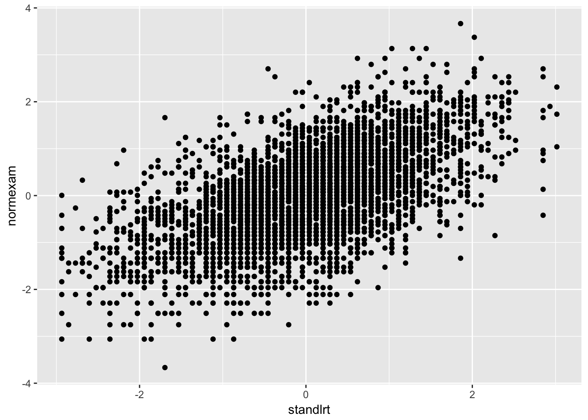
Linear model
london %>%
lm(normexam ~ standlrt, data = .) %>%
summary()
Call:
lm(formula = normexam ~ standlrt, data = .)
Residuals:
Min 1Q Median 3Q Max
-2.65617 -0.51847 0.01265 0.54397 2.97399
Coefficients:
Estimate Std. Error t value Pr(>|t|)
(Intercept) -0.001195 0.012642 -0.095 0.925
standlrt 0.595055 0.012730 46.744 <2e-16 ***
---
Signif. codes: 0 '***' 0.001 '**' 0.01 '*' 0.05 '.' 0.1 ' ' 1
Residual standard error: 0.8054 on 4057 degrees of freedom
Multiple R-squared: 0.35, Adjusted R-squared: 0.3499
F-statistic: 2185 on 1 and 4057 DF, p-value: < 2.2e-16Get individual scatterplots
london %>%
ggplot(aes(y = normexam, x = standlrt)) +
geom_point() +
facet_wrap(~school)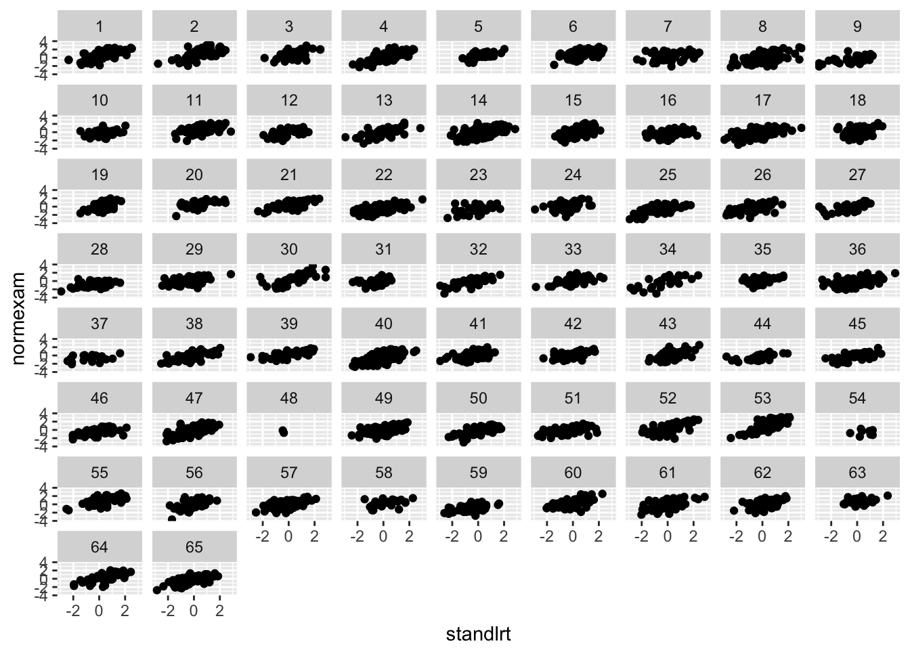
Perform lm in each school
We can use split from base R and combine this with map to apply lm to each element of the list
coefs <- london %>%
split(f = .[["school"]]) %>%
map(function(data) lm(normexam~standlrt, data = data)) %>%
map_df(tidy)
coefs %>%
group_by(term) %>%
summarize(mean(estimate), sd(estimate))# A tibble: 2 x 3
term `mean(estimate)` `sd(estimate)`
<chr> <dbl> <dbl>
1 (Intercept) -0.0681 0.519
2 standlrt 0.425 0.939Here is a nice way of doing this with purrr, tidyr and dplyr (completely tidyverse)
require(tidyr)
london_nested <- london %>% group_by(school) %>% nest()
get_coef <- function(coefs, coef = "(Intercept)") {
stopifnot(is.data.frame(coefs))
coefs[coefs$term == coef, "estimate"]
}
london_nested %>%
mutate(fit = map(data, ~lm(normexam~standlrt, data = .x)),
coefs = map(fit, tidy),
intercept = as.numeric(map(coefs, ~get_coef(.x))),
slope = as.numeric(map(coefs, ~get_coef(.x, "standlrt")))) %>%
summarize_at(vars(intercept, slope), funs(mean, sd))# A tibble: 1 x 4
intercept_mean slope_mean intercept_sd slope_sd
<dbl> <dbl> <dbl> <dbl>
1 -0.0681 0.425 0.519 0.939Using data.table
.. and broom::tidy in 1 throw
setDT(london)
coefs <- london[, {
fit = lm(normexam ~ standlrt, data = .SD)
tidy(fit)
}, by = "school"]
coefs[, list(mean = mean(estimate), sd = sd(estimate)), by = "term"] term mean sd
1: (Intercept) -0.06812356 0.5191847
2: standlrt 0.42457747 0.9394058.. with step of list of fits
setDT(london)
fits <- london[, list(fit = list(lm(normexam ~ standlrt, data = .SD))),
by = "school"]
fits[[2]] %>%
map_df(tidy) %>%
group_by(term) %>%
summarize(mean(estimate), sd(estimate))# A tibble: 2 x 3
term `mean(estimate)` `sd(estimate)`
<chr> <dbl> <dbl>
1 (Intercept) -0.0681 0.519
2 standlrt 0.425 0.9392.
Continue with reproducing the analysis of the schools dataset (school.dat or school.sav) so far.
a.
Fit a linear mixed model with random intercept to predict exam scores using the LRT scores.
require(lme4)
lmer(normexam ~ standlrt + (1 | school), data = london, REML = F)Linear mixed model fit by maximum likelihood ['lmerMod']
Formula: normexam ~ standlrt + (1 | school)
Data: london
AIC BIC logLik deviance df.resid
9365.213 9390.447 -4678.606 9357.213 4055
Random effects:
Groups Name Std.Dev.
school (Intercept) 0.3035
Residual 0.7521
Number of obs: 4059, groups: school, 65
Fixed Effects:
(Intercept) standlrt
0.002387 0.563370 b.
Add a random slope to the model in (a). Interpret this model.
lmer(normexam ~ standlrt + (standlrt | school), data = london, REML = F)Linear mixed model fit by maximum likelihood ['lmerMod']
Formula: normexam ~ standlrt + (standlrt | school)
Data: london
AIC BIC logLik deviance df.resid
9328.840 9366.693 -4658.420 9316.840 4053
Random effects:
Groups Name Std.Dev. Corr
school (Intercept) 0.3007
standlrt 0.1206 0.50
Residual 0.7441
Number of obs: 4059, groups: school, 65
Fixed Effects:
(Intercept) standlrt
-0.01151 0.55673 On average, children with average baseline score, score avarage on the normalized exams. There is a positive correlation with baseline score and normalized exam. Schools differ in overall normalized exam scores, and the correlation between baseline score and normalized exam score differs between schools
3.
Finish the analysis of the schools dataset (school.dat or school.sav).
a.
Add child- and school-level explanatory variables. Interpret the model.
lmer(normexam ~ standlrt + gender + schgend + schav + (standlrt | school), data = london,
REML = F) %>%
summary()Linear mixed model fit by maximum likelihood ['lmerMod']
Formula: normexam ~ standlrt + gender + schgend + schav + (standlrt |
school)
Data: london
AIC BIC logLik deviance df.resid
9300.4 9369.8 -4639.2 9278.4 4048
Scaled residuals:
Min 1Q Median 3Q Max
-3.8339 -0.6343 0.0231 0.6768 3.4136
Random effects:
Groups Name Variance Std.Dev. Corr
school (Intercept) 0.07077 0.2660
standlrt 0.01470 0.1213 0.50
Residual 0.55016 0.7417
Number of obs: 4059, groups: school, 65
Fixed effects:
Estimate Std. Error t value
(Intercept) -0.26477 0.08152 -3.248
standlrt 0.55155 0.02005 27.506
gender1 0.16713 0.03382 4.942
schgend2 0.18697 0.09769 1.914
schgend3 0.15702 0.07774 2.020
schav2 0.06689 0.08528 0.784
schav3 0.17427 0.09868 1.766
Correlation of Fixed Effects:
(Intr) stndlr gendr1 schgn2 schgn3 schav2
standlrt 0.205
gender1 -0.182 -0.037
schgend2 -0.340 0.002 0.157
schgend3 -0.253 0.025 -0.235 0.230
schav2 -0.761 -0.035 -0.014 0.061 0.000
schav3 -0.648 -0.080 -0.018 0.061 -0.083 0.622b.
For the model in (a), we will write a brief description of the statistical model used. Fill in the blanks:
“A linear mixed effects model was estimated, using fixed effects for baseline score, gender, school gender and school average; A random intercept and a random effect of baseline score per school were added to correct for clustering on school level.”
4.
Part c of this question will be used in the quiz this afternoon. Please save or print the output and have it on hand (together with this exercise) when you complete the quiz.
A multi-center, randomized, double-blind clinical trial was done to compare two treatments for hypertension. One treatment was a new drug (1 = Carvedilol) and the other was a standard drug for controlling hypertension (2 = Nifedipine). Twenty-nine centers participated in the trial and patients were randomized in order of entry. One pre-randomization and four post-treatment visits were made. Here, we will concentrate on the last recorded measurement of diastolic blood pressure (primary endpoint: dbp). The data can be found in the SPSS data file dbplast.sav. Read the data into R or SPSS. The research question is which of the two medicines (treat) is more effective in reducing DBP. Since baseline (pre-randomization) DBP (dbp) will likely be associated with post-treatment DBP and will reduce the variation in the outcome (thereby increasing our power to detect a treatment effect), we wish to include it here as a covariate.
Read in the data
bp <- haven::read_spss(here("data", "dbplast.sav"))
str(bp)Classes 'tbl_df', 'tbl' and 'data.frame': 193 obs. of 5 variables:
$ patient: atomic 3 4 5 7 8 9 10 13 14 18 ...
..- attr(*, "format.spss")= chr "F7.0"
$ center : atomic 5 5 29 3 3 3 3 36 36 36 ...
..- attr(*, "format.spss")= chr "F8.0"
$ dbp : atomic 109 87 85 100 80 90 100 80 85 100 ...
..- attr(*, "format.spss")= chr "F10.0"
..- attr(*, "display_width")= int 10
$ dbp1 : atomic 117 100 105 114 105 100 102 100 100 100 ...
..- attr(*, "format.spss")= chr "F8.0"
$ treat : atomic 2 1 1 1 2 2 1 2 1 1 ...
..- attr(*, "format.spss")= chr "F8.0"
..- attr(*, "display_width")= int 10Curate
factor_vars <- c("center", "patient", "treat")
bp %<>% mutate_at(vars(factor_vars), funs(as.factor))a.
Make some plots to describe the patterns of the data.
summary(bp) patient center dbp dbp1 treat
3 : 1 1 :27 Min. : 70.00 Min. : 95.0 1:100
4 : 1 31 :24 1st Qu.: 85.00 1st Qu.:100.0 2: 93
5 : 1 14 :16 Median : 90.00 Median :102.0
7 : 1 36 :15 Mean : 91.05 Mean :102.7
8 : 1 7 :12 3rd Qu.: 98.00 3rd Qu.:105.0
9 : 1 5 : 9 Max. :140.00 Max. :120.0
(Other):187 (Other):90 First scatter plot an pre-and post bp;
Let’s assume that dbp1 = pre
bp %>%
ggplot(aes(x = dbp1, y = dbp)) +
geom_point()
Now per treatment
bp %>%
ggplot(aes(x = dbp1, y = dbp)) +
geom_point() +
facet_wrap(~treat)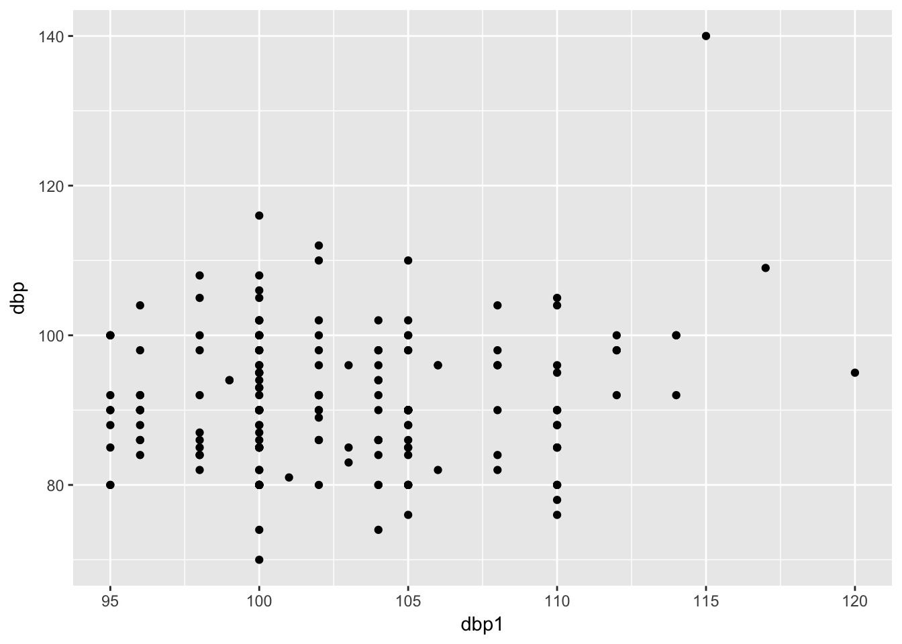
Look at marginal distributions per treatment
bp %>%
as.data.table() %>%
data.table::melt(id.vars = c("patient", "treat"), measure.vars = c("dbp", "dbp1")) %>%
ggplot(aes(x = 1, y = value, fill = treat)) +
geom_boxplot(alpha = .5) +
facet_wrap(~variable)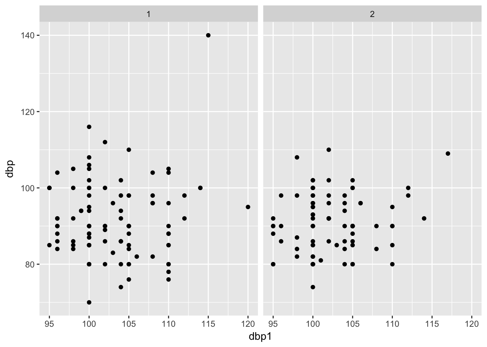
b.
Fit a model to answer the research question, using maximum likelihood estimation, taking into account that patients within centers may have correlated data. Interpret the coefficients of the model.
lmer(dbp ~ dbp1 + treat + (1 | center), data = bp, REML = F) %>%
summary()Linear mixed model fit by maximum likelihood ['lmerMod']
Formula: dbp ~ dbp1 + treat + (1 | center)
Data: bp
AIC BIC logLik deviance df.resid
1393.7 1410.1 -691.9 1383.7 188
Scaled residuals:
Min 1Q Median 3Q Max
-2.1666 -0.7244 -0.0745 0.5536 5.0417
Random effects:
Groups Name Variance Std.Dev.
center (Intercept) 7.98 2.825
Residual 70.67 8.406
Number of obs: 193, groups: center, 27
Fixed effects:
Estimate Std. Error t value
(Intercept) 74.1014 13.5245 5.479
dbp1 0.1747 0.1306 1.338
treat2 -1.1179 1.2205 -0.916
Correlation of Fixed Effects:
(Intr) dbp1
dbp1 -0.997
treat2 -0.122 0.080c.
Make a new baseline dbp variable, centered around its mean. Re-fit the model in (b) using the centered baseline blood pressure variable, using maximum likelihood estimation, and interpret the parameters of this new model.
fit <- bp %>%
mutate(dbp_center = dbp1 - mean(dbp1)) %>%
lmer(dbp ~ dbp_center + treat + (1 | center), data = ., REML = F)
fit %>%
summary()Linear mixed model fit by maximum likelihood ['lmerMod']
Formula: dbp ~ dbp_center + treat + (1 | center)
Data: .
AIC BIC logLik deviance df.resid
1393.7 1410.1 -691.9 1383.7 188
Scaled residuals:
Min 1Q Median 3Q Max
-2.1666 -0.7244 -0.0745 0.5536 5.0417
Random effects:
Groups Name Variance Std.Dev.
center (Intercept) 7.98 2.825
Residual 70.67 8.406
Number of obs: 193, groups: center, 27
Fixed effects:
Estimate Std. Error t value
(Intercept) 92.0438 1.0566 87.11
dbp_center 0.1747 0.1306 1.34
treat2 -1.1179 1.2205 -0.92
Correlation of Fixed Effects:
(Intr) dbp_cn
dbp_center -0.068
treat2 -0.548 0.0805.
In a small crossover study two drugs, A and B, are compared for their effect on the diastolic blood pressure (DBP). Each patient in the study receives the two treatments in a random order and separated in time (“wash-out” period) so that one treatment does not influence the blood pressure measurement obtained after administering the other treatment (i.e. to rule out carry-over effect) . The data are given in the data file crossover.sav and crossover.dat.
Note that subject 4 has only the measurement for drug A and that subject 16 has only the measurement for drug B.
Read in data and curate
bpco <- read.table(here("data", "crossover.dat"), header = T)
bpco %<>%
set_colnames(tolower(colnames(bpco)))
factor_vars <- c("period", "drug")
bpco %<>% mutate_at(vars(factor_vars), funs(as.factor))
str(bpco)'data.frame': 36 obs. of 4 variables:
$ patient: int 1 1 2 2 3 3 4 5 5 6 ...
$ period : Factor w/ 2 levels "1","2": 1 2 1 2 1 2 2 1 2 1 ...
$ drug : Factor w/ 2 levels "1","2": 1 2 2 1 1 2 1 2 1 1 ...
$ y : int 100 112 116 114 108 110 104 114 114 98 ...a.
Use descriptive statistics to get a feel for the data. Which drug seems to be better at reducing DBP?
setDT(bpco)
bpco[, list(mean_bp = mean(y)), by = "drug,period"] drug period mean_bp
1: 1 1 105.2222
2: 2 2 113.0000
3: 2 1 114.3750
4: 1 2 103.7778Drug 1 seems to reduce blood pressure, while drug 2 seems to increase.
In a spaghetti plot
bpco %>%
ggplot(aes(x = drug, y = y, group = patient)) +
geom_line(alpha = .8) + theme_minimal()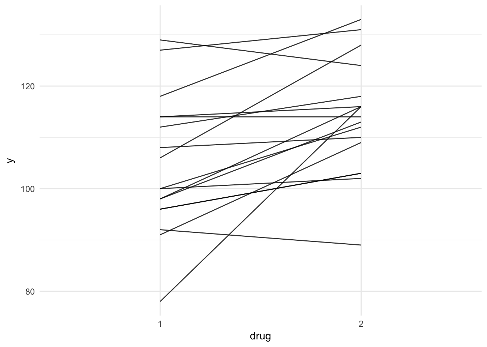
b.
Fit a model to the data, looking at drug and period effect and correcting for the fact that (most) patients have more than one DBP measurement. Which variable(s) do you choose as random?
fit <- lmer(y ~ drug + period + (1 | patient), data = bpco, REML = F)
fit %>% summary()Linear mixed model fit by maximum likelihood ['lmerMod']
Formula: y ~ drug + period + (1 | patient)
Data: bpco
AIC BIC logLik deviance df.resid
280.7 288.6 -135.3 270.7 31
Scaled residuals:
Min 1Q Median 3Q Max
-2.28988 -0.42035 -0.02943 0.44467 1.49483
Random effects:
Groups Name Variance Std.Dev.
patient (Intercept) 80.65 8.981
Residual 52.95 7.277
Number of obs: 36, groups: patient, 19
Fixed effects:
Estimate Std. Error t value
(Intercept) 104.955 2.983 35.18
drug2 9.360 2.471 3.79
period2 -1.250 2.474 -0.51
Correlation of Fixed Effects:
(Intr) drug2
drug2 -0.388
period2 -0.427 -0.058c.
Interpret the results of the model. Is there a significant difference between the two drugs? Is there a significant period effect?
Drug 2 seems to increase blood pressure (be less effective)
Perdiod effect is negative, which could indicate regression to the mean (participants are included when having a (sometimes random) high blood pressure)
For significance:
confint(fit) 2.5 % 97.5 %
.sig01 5.175850 13.883011
.sigma 5.401934 10.524648
(Intercept) 98.926994 110.967097
drug2 4.230320 14.449692
period2 -6.383679 3.846716Yes from profile likelihood intervals, therapy difference is significant, but not period
d.
What other hypothesis might we want to test here?
maybe interaction between drug and period?
6.
A secondary question regarding the school exam data (exercises 1 & 2) was proposed in the lecture. Use SPSS or R (or both) to address the question: is the difference between boys and girls the same for single-sex and mixed-gender schools? (Note: you’ll need to make a new variable for single-gender (schgend = 2 or 3) vs mixed-gender (schgend = 1) schools before proceeding with the analysis.)
london %>%
mutate(mixed_school = schgend == 1) %>%
lmer(normexam ~ standlrt + gender * mixed_school + schav + (standlrt | school), data = .,
REML = F) %>%
summary()Linear mixed model fit by maximum likelihood ['lmerMod']
Formula:
normexam ~ standlrt + gender * mixed_school + schav + (standlrt |
school)
Data: .
AIC BIC logLik deviance df.resid
9300.4 9369.8 -4639.2 9278.4 4048
Scaled residuals:
Min 1Q Median 3Q Max
-3.8339 -0.6343 0.0231 0.6768 3.4136
Random effects:
Groups Name Variance Std.Dev. Corr
school (Intercept) 0.07077 0.2660
standlrt 0.01470 0.1213 0.50
Residual 0.55016 0.7417
Number of obs: 4059, groups: school, 65
Fixed effects:
Estimate Std. Error t value
(Intercept) -0.07780 0.10380 -0.749
standlrt 0.55155 0.02005 27.506
gender1 0.13718 0.10472 1.310
mixed_schoolTRUE -0.18697 0.09769 -1.914
schav2 0.06689 0.08528 0.784
schav3 0.17427 0.09868 1.766
gender1:mixed_schoolTRUE 0.02995 0.10997 0.272
Correlation of Fixed Effects:
(Intr) stndlr gendr1 m_TRUE schav2 schav3
standlrt 0.162
gender1 -0.614 0.006
mxd_schTRUE -0.674 -0.002 0.711
schav2 -0.540 -0.035 -0.061 -0.061
schav3 -0.451 -0.080 -0.124 -0.061 0.622
gndr1:_TRUE 0.586 -0.017 -0.952 -0.726 0.054 0.113In the mixed school, there seems to be no difference between genders
7. (Challenge)
Tomorrow we will spend the morning session examining different ways of analyzing the Reisby dataset. This is a longitudinal dataset on 66 patients with endogenous or exogenous depression. Patients are measured every week starting at baseline; from week 1 on, they were all treated with imipramine. The outcome is the score on the Hamilton Depression Rating Scale (HDRS), a score based on a questionnaire administered by a health care professional. The score ranges - theoretically - from 0 (no depressive symptoms) to 52, where scores higher than 20 indicate moderate to very severe depression. The questions of interest are how the HDRS score changes over time for the patients, and whether the patterns of HDRS over time differ for patients with endogenous and exogenous depression. The data is available in both a “wide” and a “long” format: reisby_wide.sav and reisby_long.sav .
Read in data and curate
reisby_wide <- haven::read_spss(here("data", "reisby_wide.sav"))
reisby_long <- haven::read_spss(here("data", "reisby_long.sav"))
factor_vars <- c("id")
logical_vars <- c("endo")
reisby_wide %<>% mutate_at(vars(factor_vars), funs(as.factor))
reisby_long %<>% mutate_at(vars(factor_vars), funs(as.factor))
reisby_wide %<>% mutate_at(vars(logical_vars), funs(as.logical))
reisby_long %<>% mutate_at(vars(logical_vars), funs(as.logical))
str(reisby_wide)Classes 'tbl_df', 'tbl' and 'data.frame': 66 obs. of 8 variables:
$ id : Factor w/ 66 levels "101","103","104",..: 1 2 3 4 5 6 7 8 9 10 ...
$ endo : logi FALSE FALSE TRUE FALSE TRUE TRUE ...
$ hdrs.0: atomic 26 33 29 22 21 21 21 21 NA NA ...
..- attr(*, "label")= chr "hdrs.0:"
..- attr(*, "format.spss")= chr "F2.0"
..- attr(*, "display_width")= int 6
$ hdrs.1: atomic 22 24 22 12 25 21 22 23 17 16 ...
..- attr(*, "label")= chr "hdrs.1:"
..- attr(*, "format.spss")= chr "F2.0"
..- attr(*, "display_width")= int 6
$ hdrs.2: atomic 18 15 18 16 23 16 11 19 11 16 ...
..- attr(*, "label")= chr "hdrs.2:"
..- attr(*, "format.spss")= chr "F2.0"
..- attr(*, "display_width")= int 6
$ hdrs.3: atomic 7 24 13 16 18 19 9 23 13 16 ...
..- attr(*, "label")= chr "hdrs.3:"
..- attr(*, "format.spss")= chr "F2.0"
..- attr(*, "display_width")= int 6
$ hdrs.4: atomic 4 15 19 13 20 NA 9 23 7 16 ...
..- attr(*, "label")= chr "hdrs.4:"
..- attr(*, "format.spss")= chr "F2.0"
..- attr(*, "display_width")= int 6
$ hdrs.5: atomic 3 13 0 9 NA 6 7 NA 7 11 ...
..- attr(*, "label")= chr "hdrs.5:"
..- attr(*, "format.spss")= chr "F2.0"
..- attr(*, "display_width")= int 6str(reisby_long)Classes 'tbl_df', 'tbl' and 'data.frame': 396 obs. of 4 variables:
$ id : Factor w/ 66 levels "101","103","104",..: 1 1 1 1 1 1 2 2 2 2 ...
$ hdrs: atomic 26 22 18 7 4 3 33 24 15 24 ...
..- attr(*, "format.spss")= chr "F2.0"
..- attr(*, "display_width")= int 6
$ week: atomic 0 1 2 3 4 5 0 1 2 3 ...
..- attr(*, "format.spss")= chr "F1.0"
..- attr(*, "display_width")= int 6
$ endo: logi FALSE FALSE FALSE FALSE FALSE FALSE ...a.
We heard this morning that longitudinal data is also multi-level data. How many levels do we have here? What does each level represent?
Level 1: patient + timepoint Level 2: patient
b.
Use descriptive statistics (means, SDs, graphs) to get a feel for the data, concentrating on the patterns (individual and/or group) of HDRS over time (note that there are two versions of the dataset given, one “wide” and one “long”. For some graphs and descriptive statistics, one version may be easier to use than the other.
Let’s look at spaghetti plots
reisby_long %>%
ggplot(aes(x = week, y = hdrs, group = id)) +
geom_line() + facet_wrap(~endo, labeller = label_both)Warning: Removed 13 rows containing missing values (geom_path).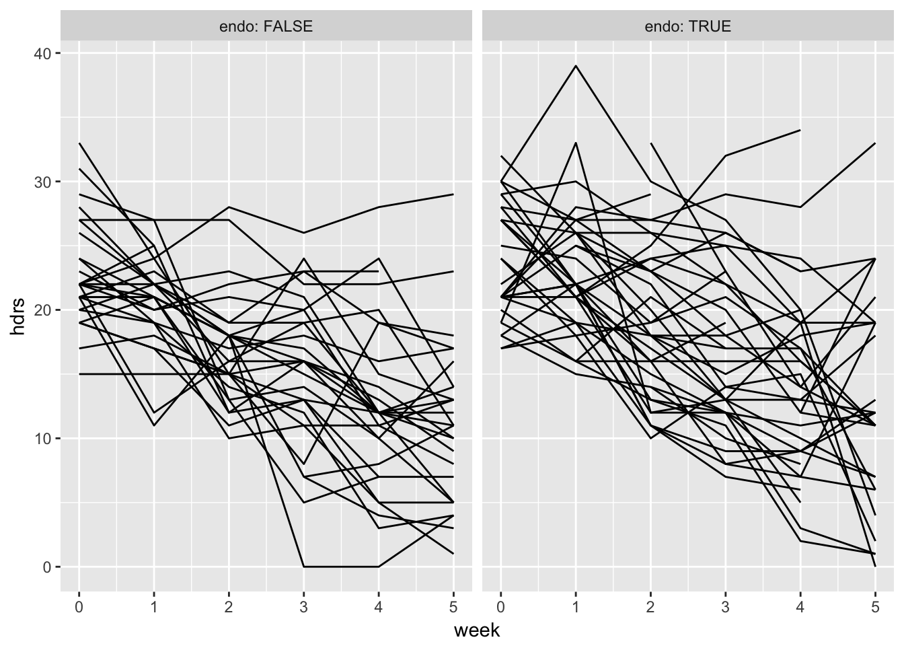
All seem to go down.
Slope seems pretty similar for both treatments, but not intercept
c. What do you notice about the mean HDRS score over time? And the variation?
Mean goes down, sd seems to go up
setDT(reisby_long)
reisby_long[, list(n_patients = uniqueN(id),
mean_hdrs = mean(hdrs, na.rm = T),
sd_hdrs = sd(hdrs, na.rm = T)),
by = "week"] week n_patients mean_hdrs sd_hdrs
1: 0 66 23.44262 4.533301
2: 1 66 21.84127 4.697997
3: 2 66 18.30769 5.485558
4: 3 66 16.41538 6.415051
5: 4 66 13.61905 6.970973
6: 5 66 11.94828 7.219424d.
Time was measured at 6 discrete moments. How would you want to incorporate time in the fixed part of the model: as discrete or continuous? Explain your answer.
Probably as continous, all moments are equally spaced. This requires less degrees of freedom
e.
If you were to include a random intercept in the model, for which level would you include an intercept?
Patient
f.
Do you think it is necessary to include time in the random part of the model? Why or why not?
Does not make a lot of sense.
It’s not like the time-points are a random draw of all possible time-points to measure at
Day 2
1.
Repeat the linear mixed models analyses of the Reisby dataset, using time as a continuous variable. There are two versions of the dataset: “wide format” (reisby_wide.sav), meaning that all observations are in separate rows, and “long format” (reisby_long.sav), with observations from different time points on a separate line (so 6 lines per patient). Some of the descriptive analyses are easier to do when the data is in “wide format”, and others when the data is in “long format”. The mixed models need to be run on the data in “long” format. R users can use the foreign library to read in reisby_wide.sav, and either also read in the reisby_long.sav dataset or use the reshape() function to go from wide to long (see R script for help).
- Do some initial data analysis: get descriptive statistics and make plots of the data (note that most of the descriptive statistics – means, SDs, correlations – are easier to get in the wide version of the data, while the spaghetti plots and individual plots are easier to get from the wide version.
See above
b.
Can you think of a few possible hypotheses about the effect of endo?
Different intercept, different slope
c.
Repeat the mixed model analyses of the Reisby dataset: model depression score (HDRS) as a function of time (linear), endo/exo and the interaction of the two. Use a model with only a random intercept per patient, and a model with a random intercept plus a random slope for time.
require(lme4)
lmer(hdrs ~ week * endo + (1|id), data = reisby_long) %>% summary()Linear mixed model fit by REML ['lmerMod']
Formula: hdrs ~ week * endo + (1 | id)
Data: reisby_long
REML criterion at convergence: 2282.5
Scaled residuals:
Min 1Q Median 3Q Max
-3.1782 -0.5924 -0.0329 0.5360 3.4763
Random effects:
Groups Name Variance Std.Dev.
id (Intercept) 15.85 3.981
Residual 19.16 4.377
Number of obs: 375, groups: id, 66
Fixed effects:
Estimate Std. Error t value
(Intercept) 22.44118 0.95060 23.607
week -2.35168 0.19866 -11.838
endoTRUE 1.99303 1.27877 1.559
week:endoTRUE -0.04417 0.27147 -0.163
Correlation of Fixed Effects:
(Intr) week enTRUE
week -0.520
endoTRUE -0.743 0.386
week:ndTRUE 0.380 -0.732 -0.526lmer(hdrs ~ week * endo + (week|id), data = reisby_long) %>% summary()Linear mixed model fit by REML ['lmerMod']
Formula: hdrs ~ week * endo + (week | id)
Data: reisby_long
REML criterion at convergence: 2214
Scaled residuals:
Min 1Q Median 3Q Max
-2.7242 -0.4948 0.0334 0.4935 3.6148
Random effects:
Groups Name Variance Std.Dev. Corr
id (Intercept) 12.252 3.500
week 2.173 1.474 -0.29
Residual 12.210 3.494
Number of obs: 375, groups: id, 66
Fixed effects:
Estimate Std. Error t value
(Intercept) 22.4760 0.8074 27.836
week -2.3657 0.3170 -7.462
endoTRUE 1.9882 1.0864 1.830
week:endoTRUE -0.0268 0.4264 -0.063
Correlation of Fixed Effects:
(Intr) week enTRUE
week -0.452
endoTRUE -0.743 0.336
week:ndTRUE 0.336 -0.743 -0.458d.
Which model from (d) do you think fits the data better, and why?
More terms always fits better according to likelihood.
The residual standard deviation of the model with random intercept and slope is lower, so seems to fit better
e.
Interpret the second model from (c). f. Save your script/syntax for the next exercises!
2.
Model the variance-covariance matrix for the Reisby dataset.
a.
Try different covariance pattern models (CPM) and mixed models to capture the correlation present in the dataset.
First get the observed var-covar matrix
obs_vcov <- reisby_long %>%
data.table::dcast(id ~ week, value.var = "hdrs") %>%
as.data.frame() %>% .[, -1] %>%
var(., use = "pairwise.complete.obs")
obs_vcov 0 1 2 3 4 5
0 20.550820 10.114943 10.13870 10.08559 7.190865 6.277576
1 10.114943 22.071173 12.27684 12.55024 10.263661 7.719865
2 10.138701 12.276838 30.09135 25.12599 24.625595 18.384398
3 10.085593 12.550238 25.12599 41.15288 37.338974 23.991541
4 7.190865 10.263661 24.62559 37.33897 48.594470 30.512795
5 6.277576 7.719865 18.38440 23.99154 30.512795 52.120085vcovs <- list(observed = obs_vcov)
obs_vcov %>%
data.table::melt() %>%
ggplot(aes(x = Var1, y = Var2, fill = value)) +
geom_tile() + scale_y_continuous(trans = "reverse")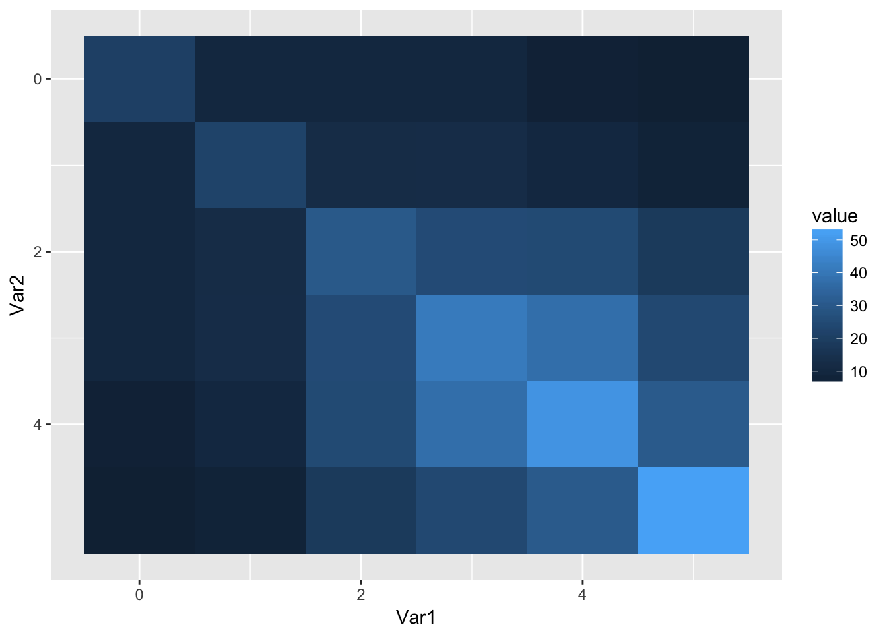
Create mean imputed dataframe which can be used with ANOVA (not done here)
mean_impute_vector <- function(x) {
if (nna(x) == 0) return(x)
x[is.na(x)] <- mean(x, na.rm = T)
return(x)
}
mean_impute <- function(data) {
n_missings <- nna(data)
vars_with_missings <- names(n_missings)[n_missings > 0]
if (length(vars_with_missings) == 0) return(data)
data %>% mutate_at(vars(vars_with_missings), funs(mean_impute_vector))
}
reisby_imp <- mean_impute(reisby_long)First model without dependence
fit0 <- lm(hdrs ~ week * endo, data = reisby_imp)reisby_long %>%
mutate(resid = residuals(fit0)) id hdrs week endo resid
1 101 26 0 FALSE 3.66322058
2 101 22 1 FALSE 1.94839365
3 101 18 2 FALSE 0.23356672
4 101 7 3 FALSE -8.48126021
5 101 4 4 FALSE -9.19608714
6 101 3 5 FALSE -7.91091407
7 103 33 0 FALSE 10.66322058
8 103 24 1 FALSE 3.94839365
9 103 15 2 FALSE -2.76643328
10 103 24 3 FALSE 8.51873979
11 103 15 4 FALSE 1.80391286
12 103 13 5 FALSE 2.08908593
13 104 29 0 TRUE 5.20539854
14 104 22 1 TRUE 0.35056405
15 104 18 2 TRUE -1.50427044
16 104 13 3 TRUE -4.35910493
17 104 19 4 TRUE 3.78606057
18 104 0 5 TRUE -13.06877392
19 105 22 0 FALSE -0.33677942
20 105 12 1 FALSE -8.05160635
21 105 16 2 FALSE -1.76643328
22 105 16 3 FALSE 0.51873979
23 105 13 4 FALSE -0.19608714
24 105 9 5 FALSE -1.91091407
25 106 21 0 TRUE -2.79460146
26 106 25 1 TRUE 3.35056405
27 106 23 2 TRUE 3.49572956
28 106 18 3 TRUE 0.64089507
29 106 20 4 TRUE 4.78606057
30 106 NA 5 TRUE 4.56855942
31 107 21 0 TRUE -2.79460146
32 107 21 1 TRUE -0.64943595
33 107 16 2 TRUE -3.50427044
34 107 19 3 TRUE 1.64089507
35 107 NA 4 TRUE 2.42339391
36 107 6 5 TRUE -7.06877392
37 108 21 0 TRUE -2.79460146
38 108 22 1 TRUE 0.35056405
39 108 11 2 TRUE -8.50427044
40 108 9 3 TRUE -8.35910493
41 108 9 4 TRUE -6.21393943
42 108 7 5 TRUE -6.06877392
43 113 21 0 FALSE -1.33677942
44 113 23 1 FALSE 2.94839365
45 113 19 2 FALSE 1.23356672
46 113 23 3 FALSE 7.51873979
47 113 23 4 FALSE 9.80391286
48 113 NA 5 FALSE 6.72641927
49 114 NA 0 FALSE -4.69944609
50 114 17 1 FALSE -3.05160635
51 114 11 2 FALSE -6.76643328
52 114 13 3 FALSE -2.48126021
53 114 7 4 FALSE -6.19608714
54 114 7 5 FALSE -3.91091407
55 115 NA 0 TRUE -6.15726813
56 115 16 1 TRUE -5.64943595
57 115 16 2 TRUE -3.50427044
58 115 16 3 TRUE -1.35910493
59 115 16 4 TRUE 0.78606057
60 115 11 5 TRUE -2.06877392
61 117 19 0 TRUE -4.79460146
62 117 16 1 TRUE -5.64943595
63 117 13 2 TRUE -6.50427044
64 117 12 3 TRUE -5.35910493
65 117 7 4 TRUE -8.21393943
66 117 6 5 TRUE -7.06877392
67 118 NA 0 TRUE -6.15726813
68 118 26 1 TRUE 4.35056405
69 118 18 2 TRUE -1.50427044
70 118 18 3 TRUE 0.64089507
71 118 14 4 TRUE -1.21393943
72 118 11 5 TRUE -2.06877392
73 120 20 0 FALSE -2.33677942
74 120 19 1 FALSE -1.05160635
75 120 17 2 FALSE -0.76643328
76 120 18 3 FALSE 2.51873979
77 120 16 4 FALSE 2.80391286
78 120 17 5 FALSE 6.08908593
79 121 20 0 FALSE -2.33677942
80 121 22 1 FALSE 1.94839365
81 121 19 2 FALSE 1.23356672
82 121 19 3 FALSE 3.51873979
83 121 12 4 FALSE -1.19608714
84 121 14 5 FALSE 3.08908593
85 123 15 0 FALSE -7.33677942
86 123 15 1 FALSE -5.05160635
87 123 15 2 FALSE -2.76643328
88 123 13 3 FALSE -2.48126021
89 123 5 4 FALSE -8.19608714
90 123 5 5 FALSE -5.91091407
91 501 29 0 TRUE 5.20539854
92 501 30 1 TRUE 8.35056405
93 501 26 2 TRUE 6.49572956
94 501 22 3 TRUE 4.64089507
95 501 19 4 TRUE 3.78606057
96 501 24 5 TRUE 10.93122608
97 502 21 0 TRUE -2.79460146
98 502 22 1 TRUE 0.35056405
99 502 13 2 TRUE -6.50427044
100 502 11 3 TRUE -6.35910493
101 502 2 4 TRUE -13.21393943
102 502 1 5 TRUE -12.06877392
103 504 19 0 FALSE -3.33677942
104 504 17 1 FALSE -3.05160635
105 504 15 2 FALSE -2.76643328
106 504 16 3 FALSE 0.51873979
107 504 12 4 FALSE -1.19608714
108 504 12 5 FALSE 1.08908593
109 505 21 0 FALSE -1.33677942
110 505 11 1 FALSE -9.05160635
111 505 18 2 FALSE 0.23356672
112 505 0 3 FALSE -15.48126021
113 505 0 4 FALSE -13.19608714
114 505 4 5 FALSE -6.91091407
115 507 27 0 TRUE 3.20539854
116 507 26 1 TRUE 4.35056405
117 507 26 2 TRUE 6.49572956
118 507 25 3 TRUE 7.64089507
119 507 24 4 TRUE 8.78606057
120 507 19 5 TRUE 5.93122608
121 603 28 0 FALSE 5.66322058
122 603 22 1 FALSE 1.94839365
123 603 18 2 FALSE 0.23356672
124 603 20 3 FALSE 4.51873979
125 603 11 4 FALSE -2.19608714
126 603 13 5 FALSE 2.08908593
127 604 27 0 FALSE 4.66322058
128 604 27 1 FALSE 6.94839365
129 604 13 2 FALSE -4.76643328
130 604 5 3 FALSE -10.48126021
131 604 7 4 FALSE -6.19608714
132 604 NA 5 FALSE 6.72641927
133 606 19 0 TRUE -4.79460146
134 606 33 1 TRUE 11.35056405
135 606 12 2 TRUE -7.50427044
136 606 12 3 TRUE -5.35910493
137 606 3 4 TRUE -12.21393943
138 606 1 5 TRUE -12.06877392
139 607 30 0 TRUE 6.20539854
140 607 39 1 TRUE 17.35056405
141 607 30 2 TRUE 10.49572956
142 607 27 3 TRUE 9.64089507
143 607 20 4 TRUE 4.78606057
144 607 4 5 TRUE -9.06877392
145 608 24 0 FALSE 1.66322058
146 608 19 1 FALSE -1.05160635
147 608 14 2 FALSE -3.76643328
148 608 12 3 FALSE -3.48126021
149 608 3 4 FALSE -10.19608714
150 608 4 5 FALSE -6.91091407
151 609 NA 0 TRUE -6.15726813
152 609 25 1 TRUE 3.35056405
153 609 22 2 TRUE 2.49572956
154 609 14 3 TRUE -3.35910493
155 609 15 4 TRUE -0.21393943
156 609 2 5 TRUE -11.06877392
157 610 34 0 TRUE 10.20539854
158 610 NA 1 TRUE -4.01210262
159 610 33 2 TRUE 13.49572956
160 610 23 3 TRUE 5.64089507
161 610 NA 4 TRUE 2.42339391
162 610 11 5 TRUE -2.06877392
163 302 18 0 TRUE -5.79460146
164 302 22 1 TRUE 0.35056405
165 302 16 2 TRUE -3.50427044
166 302 8 3 TRUE -9.35910493
167 302 9 4 TRUE -6.21393943
168 302 12 5 TRUE -1.06877392
169 303 21 0 FALSE -1.33677942
170 303 21 1 FALSE 0.94839365
171 303 13 2 FALSE -4.76643328
172 303 14 3 FALSE -1.48126021
173 303 10 4 FALSE -3.19608714
174 303 5 5 FALSE -5.91091407
175 304 21 0 TRUE -2.79460146
176 304 27 1 TRUE 5.35056405
177 304 29 2 TRUE 9.49572956
178 304 NA 3 TRUE 0.27822840
179 304 12 4 TRUE -3.21393943
180 304 24 5 TRUE 10.93122608
181 305 19 0 FALSE -3.33677942
182 305 17 1 FALSE -3.05160635
183 305 15 2 FALSE -2.76643328
184 305 11 3 FALSE -4.48126021
185 305 5 4 FALSE -8.19608714
186 305 1 5 FALSE -9.91091407
187 308 22 0 FALSE -0.33677942
188 308 21 1 FALSE 0.94839365
189 308 18 2 FALSE 0.23356672
190 308 17 3 FALSE 1.51873979
191 308 12 4 FALSE -1.19608714
192 308 11 5 FALSE 0.08908593
193 309 22 0 FALSE -0.33677942
194 309 22 1 FALSE 1.94839365
195 309 16 2 FALSE -1.76643328
196 309 19 3 FALSE 3.51873979
197 309 20 4 FALSE 6.80391286
198 309 11 5 FALSE 0.08908593
199 310 24 0 TRUE 0.20539854
200 310 19 1 TRUE -2.64943595
201 310 11 2 TRUE -8.50427044
202 310 7 3 TRUE -10.35910493
203 310 6 4 TRUE -9.21393943
204 310 NA 5 TRUE 4.56855942
205 311 20 0 TRUE -3.79460146
206 311 16 1 TRUE -5.64943595
207 311 21 2 TRUE 1.49572956
208 311 17 3 TRUE -0.35910493
209 311 NA 4 TRUE 2.42339391
210 311 15 5 TRUE 1.93122608
211 312 17 0 TRUE -6.79460146
212 312 NA 1 TRUE -4.01210262
213 312 18 2 TRUE -1.50427044
214 312 17 3 TRUE -0.35910493
215 312 17 4 TRUE 1.78606057
216 312 6 5 TRUE -7.06877392
217 313 21 0 FALSE -1.33677942
218 313 19 1 FALSE -1.05160635
219 313 10 2 FALSE -7.76643328
220 313 11 3 FALSE -4.48126021
221 313 11 4 FALSE -2.19608714
222 313 8 5 FALSE -2.91091407
223 315 27 0 TRUE 3.20539854
224 315 21 1 TRUE -0.64943595
225 315 17 2 TRUE -2.50427044
226 315 13 3 TRUE -4.35910493
227 315 5 4 TRUE -10.21393943
228 315 NA 5 TRUE 4.56855942
229 316 32 0 TRUE 8.20539854
230 316 26 1 TRUE 4.35056405
231 316 23 2 TRUE 3.49572956
232 316 26 3 TRUE 8.64089507
233 316 23 4 TRUE 7.78606057
234 316 24 5 TRUE 10.93122608
235 318 17 0 TRUE -6.79460146
236 318 18 1 TRUE -3.64943595
237 318 19 2 TRUE -0.50427044
238 318 21 3 TRUE 3.64089507
239 318 17 4 TRUE 1.78606057
240 318 11 5 TRUE -2.06877392
241 319 24 0 TRUE 0.20539854
242 319 18 1 TRUE -3.64943595
243 319 10 2 TRUE -9.50427044
244 319 14 3 TRUE -3.35910493
245 319 13 4 TRUE -2.21393943
246 319 12 5 TRUE -1.06877392
247 322 28 0 TRUE 4.20539854
248 322 21 1 TRUE -0.64943595
249 322 25 2 TRUE 5.49572956
250 322 32 3 TRUE 14.64089507
251 322 34 4 TRUE 18.78606057
252 322 NA 5 TRUE 4.56855942
253 327 17 0 FALSE -5.33677942
254 327 18 1 FALSE -2.05160635
255 327 15 2 FALSE -2.76643328
256 327 8 3 FALSE -7.48126021
257 327 19 4 FALSE 5.80391286
258 327 17 5 FALSE 6.08908593
259 328 22 0 FALSE -0.33677942
260 328 24 1 FALSE 3.94839365
261 328 28 2 FALSE 10.23356672
262 328 26 3 FALSE 10.51873979
263 328 28 4 FALSE 14.80391286
264 328 29 5 FALSE 18.08908593
265 331 19 0 FALSE -3.33677942
266 331 21 1 FALSE 0.94839365
267 331 18 2 FALSE 0.23356672
268 331 16 3 FALSE 0.51873979
269 331 14 4 FALSE 0.80391286
270 331 10 5 FALSE -0.91091407
271 333 23 0 FALSE 0.66322058
272 333 20 1 FALSE -0.05160635
273 333 21 2 FALSE 3.23356672
274 333 20 3 FALSE 4.51873979
275 333 24 4 FALSE 10.80391286
276 333 14 5 FALSE 3.08908593
277 334 31 0 FALSE 8.66322058
278 334 25 1 FALSE 4.94839365
279 334 NA 2 FALSE -0.12909995
280 334 7 3 FALSE -8.48126021
281 334 8 4 FALSE -5.19608714
282 334 11 5 FALSE 0.08908593
283 335 21 0 FALSE -1.33677942
284 335 21 1 FALSE 0.94839365
285 335 18 2 FALSE 0.23356672
286 335 15 3 FALSE -0.48126021
287 335 12 4 FALSE -1.19608714
288 335 10 5 FALSE -0.91091407
289 337 27 0 FALSE 4.66322058
290 337 22 1 FALSE 1.94839365
291 337 23 2 FALSE 5.23356672
292 337 21 3 FALSE 5.51873979
293 337 12 4 FALSE -1.19608714
294 337 13 5 FALSE 2.08908593
295 338 22 0 FALSE -0.33677942
296 338 20 1 FALSE -0.05160635
297 338 22 2 FALSE 4.23356672
298 338 23 3 FALSE 7.51873979
299 338 19 4 FALSE 5.80391286
300 338 18 5 FALSE 7.08908593
301 339 27 0 TRUE 3.20539854
302 339 NA 1 TRUE -4.01210262
303 339 14 2 TRUE -5.50427044
304 339 12 3 TRUE -5.35910493
305 339 11 4 TRUE -4.21393943
306 339 12 5 TRUE -1.06877392
307 344 NA 0 TRUE -6.15726813
308 344 21 1 TRUE -0.64943595
309 344 12 2 TRUE -7.50427044
310 344 13 3 TRUE -4.35910493
311 344 13 4 TRUE -2.21393943
312 344 18 5 TRUE 4.93122608
313 345 29 0 FALSE 6.66322058
314 345 27 1 FALSE 6.94839365
315 345 27 2 FALSE 9.23356672
316 345 22 3 FALSE 6.51873979
317 345 22 4 FALSE 8.80391286
318 345 23 5 FALSE 12.08908593
319 346 25 0 TRUE 1.20539854
320 346 24 1 TRUE 2.35056405
321 346 19 2 TRUE -0.50427044
322 346 23 3 TRUE 5.64089507
323 346 14 4 TRUE -1.21393943
324 346 21 5 TRUE 7.93122608
325 347 18 0 TRUE -5.79460146
326 347 15 1 TRUE -6.64943595
327 347 14 2 TRUE -5.50427044
328 347 10 3 TRUE -7.35910493
329 347 8 4 TRUE -7.21393943
330 347 NA 5 TRUE 4.56855942
331 348 24 0 FALSE 1.66322058
332 348 21 1 FALSE 0.94839365
333 348 12 2 FALSE -5.76643328
334 348 13 3 FALSE -2.48126021
335 348 12 4 FALSE -1.19608714
336 348 5 5 FALSE -5.91091407
337 349 17 0 TRUE -6.79460146
338 349 19 1 TRUE -2.64943595
339 349 15 2 TRUE -4.50427044
340 349 12 3 TRUE -5.35910493
341 349 9 4 TRUE -6.21393943
342 349 13 5 TRUE -0.06877392
343 350 22 0 FALSE -0.33677942
344 350 25 1 FALSE 4.94839365
345 350 12 2 FALSE -5.76643328
346 350 16 3 FALSE 0.51873979
347 350 10 4 FALSE -3.19608714
348 350 16 5 FALSE 5.08908593
349 351 30 0 TRUE 6.20539854
350 351 27 1 TRUE 5.35056405
351 351 23 2 TRUE 3.49572956
352 351 20 3 TRUE 2.64089507
353 351 12 4 TRUE -3.21393943
354 351 11 5 TRUE -2.06877392
355 352 21 0 TRUE -2.79460146
356 352 19 1 TRUE -2.64943595
357 352 18 2 TRUE -1.50427044
358 352 15 3 TRUE -2.35910493
359 352 18 4 TRUE 2.78606057
360 352 19 5 TRUE 5.93122608
361 353 27 0 TRUE 3.20539854
362 353 21 1 TRUE -0.64943595
363 353 24 2 TRUE 4.49572956
364 353 22 3 TRUE 4.64089507
365 353 16 4 TRUE 0.78606057
366 353 11 5 TRUE -2.06877392
367 354 28 0 TRUE 4.20539854
368 354 27 1 TRUE 5.35056405
369 354 27 2 TRUE 7.49572956
370 354 26 3 TRUE 8.64089507
371 354 23 4 TRUE 7.78606057
372 354 NA 5 TRUE 4.56855942
373 355 22 0 TRUE -1.79460146
374 355 26 1 TRUE 4.35056405
375 355 20 2 TRUE 0.49572956
376 355 13 3 TRUE -4.35910493
377 355 10 4 TRUE -5.21393943
378 355 7 5 TRUE -6.06877392
379 357 27 0 TRUE 3.20539854
380 357 22 1 TRUE 0.35056405
381 357 24 2 TRUE 4.49572956
382 357 25 3 TRUE 7.64089507
383 357 19 4 TRUE 3.78606057
384 357 19 5 TRUE 5.93122608
385 360 21 0 TRUE -2.79460146
386 360 28 1 TRUE 6.35056405
387 360 27 2 TRUE 7.49572956
388 360 29 3 TRUE 11.64089507
389 360 28 4 TRUE 12.78606057
390 360 33 5 TRUE 19.93122608
391 361 30 0 TRUE 6.20539854
392 361 22 1 TRUE 0.35056405
393 361 11 2 TRUE -8.50427044
394 361 8 3 TRUE -9.35910493
395 361 7 4 TRUE -8.21393943
396 361 19 5 TRUE 5.93122608require(nlme)
lme(fixed = hdrs ~ week * endo, random = ~ 1 | id, data = reisby_long,
na.action = "na.omit", method = "ML") %>% summary()Linear mixed-effects model fit by maximum likelihood
Data: reisby_long
AIC BIC logLik
2294.137 2317.699 -1141.069
Random effects:
Formula: ~1 | id
(Intercept) Residual
StdDev: 3.909812 4.362878
Fixed effects: hdrs ~ week * endo
Value Std.Error DF t-value p-value
(Intercept) 22.441628 0.9441419 307 23.769337 0.0000
week -2.351842 0.1990804 307 -11.813530 0.0000
endoTRUE 1.992873 1.2702442 64 1.568890 0.1216
week:endoTRUE -0.044176 0.2720416 307 -0.162387 0.8711
Correlation:
(Intr) week enTRUE
week -0.524
endoTRUE -0.743 0.390
week:endoTRUE 0.384 -0.732 -0.531
Standardized Within-Group Residuals:
Min Q1 Med Q3 Max
-3.18214138 -0.59376247 -0.03548597 0.53988343 3.48261468
Number of Observations: 375
Number of Groups: 66 With independent compound symmetry structure
melt_vcov <- function(vcov) {
if (is.list(vcov)) vcov = vcov[[1]]
vcov %>%
as.numeric() %>%
matrix(., nrow = dim(vcov)[1]) %>%
data.table::melt() %>%
set_colnames(c("axis1", "axis2", "value"))
}
melt_vcov(obs_vcov) axis1 axis2 value
1 1 1 20.550820
2 2 1 10.114943
3 3 1 10.138701
4 4 1 10.085593
5 5 1 7.190865
6 6 1 6.277576
7 1 2 10.114943
8 2 2 22.071173
9 3 2 12.276838
10 4 2 12.550238
11 5 2 10.263661
12 6 2 7.719865
13 1 3 10.138701
14 2 3 12.276838
15 3 3 30.091346
16 4 3 25.125992
17 5 3 24.625595
18 6 3 18.384398
19 1 4 10.085593
20 2 4 12.550238
21 3 4 25.125992
22 4 4 41.152885
23 5 4 37.338974
24 6 4 23.991541
25 1 5 7.190865
26 2 5 10.263661
27 3 5 24.625595
28 4 5 37.338974
29 5 5 48.594470
30 6 5 30.512795
31 1 6 6.277576
32 2 6 7.719865
33 3 6 18.384398
34 4 6 23.991541
35 5 6 30.512795
36 6 6 52.120085fit_cs <- gls(hdrs ~ week*endo, correlation=corCompSymm(form = ~ 1 | id), data=reisby_long, na.action="na.omit", method="ML")
vcov_cs <- getVarCov(fit_cs, type = "marginal")
vcov_csMarginal variance covariance matrix
[,1] [,2] [,3] [,4] [,5] [,6]
[1,] 34.321 15.287 15.287 15.287 15.287 15.287
[2,] 15.287 34.321 15.287 15.287 15.287 15.287
[3,] 15.287 15.287 34.321 15.287 15.287 15.287
[4,] 15.287 15.287 15.287 34.321 15.287 15.287
[5,] 15.287 15.287 15.287 15.287 34.321 15.287
[6,] 15.287 15.287 15.287 15.287 15.287 34.321
Standard Deviations: 5.8584 5.8584 5.8584 5.8584 5.8584 5.8584 fits <- list(compound_symmerty = fit_cs)
vcovs[["compound_symmerty"]] <- vcov_csWith random intercept only
fit_ri <- lme(fixed = hdrs ~ week*endo, random = ~1|id, data = reisby_long,
method = "ML", na.action = "na.omit")
vcov_ri <- getVarCov(fit_ri, type = "marginal")
vcov_riid 101
Marginal variance covariance matrix
1 2 3 4 5 6
1 34.321 15.287 15.287 15.287 15.287 15.287
2 15.287 34.321 15.287 15.287 15.287 15.287
3 15.287 15.287 34.321 15.287 15.287 15.287
4 15.287 15.287 15.287 34.321 15.287 15.287
5 15.287 15.287 15.287 15.287 34.321 15.287
6 15.287 15.287 15.287 15.287 15.287 34.321
Standard Deviations: 5.8584 5.8584 5.8584 5.8584 5.8584 5.8584 vcovs[["random_intercept"]] <- vcov_ri
fits[["random_intercept"]] <- fit_riWith autoregressive residual correlation structure
fit_ar <- gls(hdrs ~ week*endo, correlation = corAR1(form = ~1 | id),
data = reisby_long, na.action = "na.omit", method = "ML")
vcov_ar <- getVarCov(fit_ar, type = "marginal")
vcov_arMarginal variance covariance matrix
[,1] [,2] [,3] [,4] [,5] [,6]
[1,] 35.1560 22.7130 14.6740 9.4807 6.1252 3.9573
[2,] 22.7130 35.1560 22.7130 14.6740 9.4807 6.1252
[3,] 14.6740 22.7130 35.1560 22.7130 14.6740 9.4807
[4,] 9.4807 14.6740 22.7130 35.1560 22.7130 14.6740
[5,] 6.1252 9.4807 14.6740 22.7130 35.1560 22.7130
[6,] 3.9573 6.1252 9.4807 14.6740 22.7130 35.1560
Standard Deviations: 5.9292 5.9292 5.9292 5.9292 5.9292 5.9292 vcovs[["auto_regressive"]] <- vcov_ar
fits[["auto_regressive"]] <- fit_arWith autoregressive residual correlation structure and heterogeneous variances
It’s a bit more complicated to get the variance-covariance matrix
fit_har <- gls(hdrs ~ week*endo, correlation = corAR1(form = ~1 | id),
weights = varIdent(form = ~1|week),
data = reisby_long, na.action = "na.omit", method = "ML")
summary(fit_har)Generalized least squares fit by maximum likelihood
Model: hdrs ~ week * endo
Data: reisby_long
AIC BIC logLik
2240.717 2283.913 -1109.358
Correlation Structure: AR(1)
Formula: ~1 | id
Parameter estimate(s):
Phi
0.6270097
Variance function:
Structure: Different standard deviations per stratum
Formula: ~1 | week
Parameter estimates:
0 1 2 3 4 5
1.000000 1.108897 1.150139 1.209555 1.297891 1.502195
Coefficients:
Value Std.Error t-value p-value
(Intercept) 22.651966 0.8809205 25.713974 0.0000
week -2.410213 0.2967891 -8.120964 0.0000
endoTRUE 1.516556 1.1852305 1.279545 0.2015
week:endoTRUE 0.086591 0.3990676 0.216984 0.8283
Correlation:
(Intr) week enTRUE
week -0.581
endoTRUE -0.743 0.432
week:endoTRUE 0.432 -0.744 -0.581
Standardized residuals:
Min Q1 Med Q3 Max
-2.66899729 -0.72617223 -0.08373892 0.70948986 3.23857619
Residual standard error: 4.776921
Degrees of freedom: 375 total; 371 residualcormat_har <- corMatrix(fit_har$modelStruct$corStruct)[[1]]
var_struct_har <- 1+c(0, as.numeric(fit_har$modelStruct$varStruct))
sigma_har <- fit_har$sigma
vcov_har <- matrix(numeric(0), nrow = 6, ncol = 6)
for (i in 1:nrow(cormat_har)) {
for (j in 1:ncol(cormat_har)) {
vcov_har[i, j] = sigma_har^2 * cormat_har[i, j] * var_struct_har[i] * var_struct_har[j]
}
}
vcov_har [,1] [,2] [,3] [,4] [,5] [,6]
[1,] 22.818970 15.786642 10.22598 6.695114 4.446507 3.111280
[2,] 15.786642 27.780171 17.99492 11.781568 7.824636 5.475002
[3,] 10.225977 17.994922 29.64944 19.411970 12.892307 9.020920
[4,] 6.695114 11.781568 19.41197 32.327653 21.470157 15.022956
[5,] 4.446507 7.824636 12.89231 21.470157 36.270012 25.378612
[6,] 3.111280 5.475002 9.02092 15.022956 25.378612 45.168895vcovs[["heterogeneous_AR"]] <- vcov_har
fits[["heterogeneous_AR"]] <- fit_harWith unstructured correlation (has the most free parameters)
fit_unr <- gls(hdrs ~ week*endo, correlation = corSymm(form = ~1|id),
weights = varIdent(form = ~1|week),
data = reisby_long, na.action = "na.omit", method = "ML")
cormat_unr <- corMatrix(fit_unr$modelStruct$corStruct)[[1]]
var_struct_unr <- 1+c(0, as.numeric(fit_unr$modelStruct$varStruct))
sigma_unr <- fit_unr$sigma
vcov_unr <- matrix(numeric(0), nrow = 6, ncol = 6)
for (i in 1:nrow(cormat_unr)) {
for (j in 1:ncol(cormat_unr)) {
vcov_unr[i, j] = sigma_unr^2 * cormat_unr[i, j] * var_struct_unr[i] * var_struct_unr[j]
}
}
vcov_unr [,1] [,2] [,3] [,4] [,5] [,6]
[1,] 19.674419 9.880921 6.292196 7.718344 6.331878 3.878412
[2,] 9.880921 21.219622 9.874717 10.187582 7.680643 4.756425
[3,] 6.292196 9.874717 25.949930 21.274065 22.430340 18.462169
[4,] 7.718344 10.187582 21.274065 35.148004 28.438097 25.761781
[5,] 6.331878 7.680643 22.430340 28.438097 40.818708 31.979363
[6,] 3.878412 4.756425 18.462169 25.761781 31.979363 47.945744## matrix implementation, multiply scalar with (matrix, element-wise with (1d vector matrix product 1d vector (which is like tensor product)))
vcov_unr2 = sigma_unr^2 * cormat_unr * (var_struct_unr %*% t(var_struct_unr))
vcov_unr - vcov_unr2 [,1] [,2] [,3] [,4] [,5] [,6]
[1,] 0 0.000000e+00 0 0.000000e+00 0.000000e+00 0.000000e+00
[2,] 0 -3.552714e-15 0 1.776357e-15 8.881784e-16 0.000000e+00
[3,] 0 0.000000e+00 0 0.000000e+00 3.552714e-15 -3.552714e-15
[4,] 0 0.000000e+00 0 0.000000e+00 0.000000e+00 -7.105427e-15
[5,] 0 0.000000e+00 0 0.000000e+00 0.000000e+00 3.552714e-15
[6,] 0 0.000000e+00 0 -3.552714e-15 0.000000e+00 0.000000e+00vcovs[["unstructured_correlation"]] <- vcov_unr
fits[["unstructured_correlation"]] <- fit_unrUsing continous AR
fit_car <- lme(fixed = hdrs ~ week*endo, random = ~week|id,
correlation = corCAR1(form = ~ week | id),
data = reisby_long, na.action = "na.omit", method = "ML")
vcovs[["continous_autoregressive"]] <- getVarCov(fit_car, type = "margin")
fits[["continous_autoregressive"]] <- fit_car
fits_reisby <- fitsPlot them to compare
vcovs %>%
map_df(melt_vcov, .id = "model") %>%
mutate(model = relevel(factor(model), "observed")) %>%
ggplot(aes(x = axis1, y = axis2, fill = value)) +
geom_tile() + scale_y_continuous(trans = "reverse") +
facet_wrap(~model)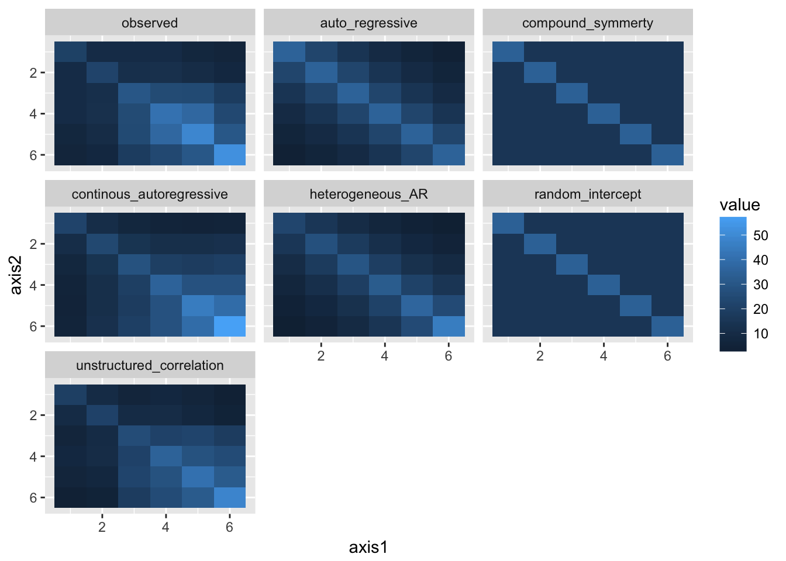
b.
Using the corMatrix() and getVarCov() functions in R (or the option Statistics – Covariance of residuals in the menu, /PRINT=R in the syntax), we can take a look the estimated correlation or variance-covariance structures for most of the models in (a). Which structures seem more realistic for this data? Which structures seem less realistic?
c.
Save your script/syntax for the next exercises!
Some tips for SPSS users: (See the extra slides on Moodle.) Since we want to explicitly choose the correlation structure, we will not include a random intercept, but instead model impose a structure on the repeated observations within each patient: Using the long version of the dataset, go to Analyze, Mixed Models, Linear. In the first screen of the Linear Mixed Models menu, put ID in Subjects and WEEK in Repeated. As Repeated Covariance Type, choose either Compound symmetry (with and without Correlation Metric), Unstructured (with Correlation Metric for interpretability), or AR(1) (with and without heterogeneous variances) Use a fixed model with ENDO, WEEK and their interaction, and no random effects. Choose Method=ML under Estimation.
3.
In this exercise we repeat the rest of the analyses of the Reisby dataset.
a.
Take a look at the modelled (assumed) covariance matrices for the LMEs from Exercise 1. Compare these to the observed covariance matrix of the outcomes above, and to some of the CPMs above. Which model(s) do you think best fit the observed data?
offcourse unstructured correlation but it has too many free parameters
heterogeneous autoregressive and continous autoregressive fit best from the rest
b.
Re-analyze the Reisby data, using the baseline HDRS as an adjustment variable (note: you must first remove the HDRS at week = 0 from your dataset before running the mixed model!). Compare the estimates of the fixed and random effects. What changed, and what did not?
reisby_base <- reisby_long %>%
group_by(id) %>%
mutate(hdrs_baseline = hdrs[week == 0]) %>%
ungroup() %>%
filter(week > 0)fit_har_base <- gls(hdrs ~ week*endo + hdrs_baseline,
correlation = corAR1(form = ~1 | id),
weights = varIdent(form = ~1 | week),
data = reisby_base,
method = "ML", na.action = "na.omit")
summary(fit_har)Generalized least squares fit by maximum likelihood
Model: hdrs ~ week * endo
Data: reisby_long
AIC BIC logLik
2240.717 2283.913 -1109.358
Correlation Structure: AR(1)
Formula: ~1 | id
Parameter estimate(s):
Phi
0.6270097
Variance function:
Structure: Different standard deviations per stratum
Formula: ~1 | week
Parameter estimates:
0 1 2 3 4 5
1.000000 1.108897 1.150139 1.209555 1.297891 1.502195
Coefficients:
Value Std.Error t-value p-value
(Intercept) 22.651966 0.8809205 25.713974 0.0000
week -2.410213 0.2967891 -8.120964 0.0000
endoTRUE 1.516556 1.1852305 1.279545 0.2015
week:endoTRUE 0.086591 0.3990676 0.216984 0.8283
Correlation:
(Intr) week enTRUE
week -0.581
endoTRUE -0.743 0.432
week:endoTRUE 0.432 -0.744 -0.581
Standardized residuals:
Min Q1 Med Q3 Max
-2.66899729 -0.72617223 -0.08373892 0.70948986 3.23857619
Residual standard error: 4.776921
Degrees of freedom: 375 total; 371 residualsummary(fit_har_base)Generalized least squares fit by maximum likelihood
Model: hdrs ~ week * endo + hdrs_baseline
Data: reisby_base
AIC BIC logLik
1741.254 1781.585 -859.6272
Correlation Structure: AR(1)
Formula: ~1 | id
Parameter estimate(s):
Phi
0.622436
Variance function:
Structure: Different standard deviations per stratum
Formula: ~1 | week
Parameter estimates:
1 2 3 4 5
1.000000 1.207278 1.287749 1.404622 1.613014
Coefficients:
Value Std.Error t-value p-value
(Intercept) 12.201649 2.8671203 4.255716 0.0000
week -2.472514 0.3635657 -6.800736 0.0000
endoTRUE 2.306241 1.4827031 1.555430 0.1210
hdrs_baseline 0.479490 0.1167423 4.107249 0.0001
week:endoTRUE -0.287551 0.5017481 -0.573099 0.5670
Correlation:
(Intr) week enTRUE hdrs_b
week -0.272
endoTRUE -0.189 0.517
hdrs_baseline -0.928 0.004 -0.088
week:endoTRUE 0.202 -0.725 -0.716 -0.009
Standardized residuals:
Min Q1 Med Q3 Max
-2.57009355 -0.66785905 -0.05278401 0.58704650 3.06988300
Residual standard error: 4.487926
Degrees of freedom: 289 total; 284 residual4. (Optional)
If you wish, go back to reisby_wide.sav and use this dataset to perform a repeated measures ANOVA. Recall the objections to this analysis from the lecture. How many subjects are used in the analysis? And what assumptions does this analysis make? How realistic are those assumptions for this study?
Skipped for now
Tips for SPSS users: Go to Analyze, General Linear Model, Repeated measures, type WEEK as Within Subject Factor Name , with 6 levels, and click Define. Choose hdrs.0 – hdrs.5 as Within-Subject Variables, and ENDO as Between-Subjects Factor. OK. (Note: the results might differ slightly from those from R in the lecture notes.)
5.
On page 25 of Mixed-Effects Models in R (Appendix to An R Companion to Applied Regression, Second Edition) by John Fox and Sanford Weisberg (see link on Moodle) you will find section 2.4, “An Illustrative Application to Longitudinal Data”. In this exercise you will try to reproduce the results presented there. (Note that you can copy all commands from the article and paste them into R or RStudio.) Concentrate only on the models and the interpretation. The anova() commands, comparing the models, may be skipped over, as may be the table on page 32 (starting at line 6). Do try out the compareCoefs() function around the middle of page 32! Whether you choose to skip the anova() commands for now or not, please add method=”ML” to the first lme() command (since the rest of the models are “updated” from the first model, they will all be fit using ML estimation).
Get the data
require(car)
head(Blackmore, 10) subject age exercise group
1 100 8.00 2.71 patient
2 100 10.00 1.94 patient
3 100 12.00 2.36 patient
4 100 14.00 1.54 patient
5 100 15.92 8.63 patient
6 101 8.00 0.14 patient
7 101 10.00 0.14 patient
8 101 12.00 0.00 patient
9 101 14.00 0.00 patient
10 101 16.67 5.08 patienta.
Examine the time variable (age). What is different about this time variable, compared to, say, time in the Reisby data?
table(Blackmore$age)
8 10 11.58 11.83 12 12.08 12.17 12.25 12.33 12.42 12.46 12.58
231 229 1 1 176 2 2 3 2 1 1 1
12.75 12.83 13 13.08 13.17 13.21 13.25 13.33 13.42 13.5 13.58 13.71
2 1 6 2 3 1 4 2 4 4 5 1
13.75 13.83 13.92 13.96 14 14.08 14.17 14.25 14.29 14.38 14.42 14.5
4 1 3 1 85 3 3 6 1 1 5 5
14.54 14.58 14.67 14.75 14.83 14.92 14.96 15 15.08 15.17 15.25 15.33
3 3 3 3 1 5 1 7 3 3 3 3
15.42 15.5 15.67 15.75 15.79 15.83 15.88 15.92 15.96 16 16.08 16.13
3 5 2 5 1 3 1 5 1 13 3 1
16.17 16.21 16.25 16.33 16.38 16.42 16.5 16.58 16.67 16.75 16.79 16.83
5 1 1 6 1 4 11 4 2 2 1 1
16.96 17 17.13 17.17 17.25 17.42 17.46 17.5 17.67 17.92
1 7 2 4 2 1 1 1 1 2 nobs <- Blackmore %>%
group_by(subject) %>%
summarize(nobs = uniqueN(age))
table(nobs$nobs)
2 3 4 5
2 57 90 82 Here are the number of observations per subject.
Age is different from time in Reisby in that it is no just a relative time-indicator to some general starting point, but the absolute value carries meaning also.
It seems to be sampled at 2 year differences, and then an in between value for each subject
b.
Why is age-8 used in the models?
To standardize
c.
Interpret the coefficients of the 5th model (bm.lme.5).
Reproduce:
Blackmore %<>% mutate(log.exercise = log2(exercise + 5/60))
bm_lme_5 <- lme(fixed = exercise ~ age*group, random = ~1 | subject,
correlation = corCAR1(form = ~age | subject),
data = Blackmore, method = "ML")
summary(bm_lme_5)Linear mixed-effects model fit by maximum likelihood
Data: Blackmore
AIC BIC logLik
4569.84 4603.799 -2277.92
Random effects:
Formula: ~1 | subject
(Intercept) Residual
StdDev: 1.419018 2.87993
Correlation Structure: Continuous AR(1)
Formula: ~age | subject
Parameter estimate(s):
Phi
0.7359748
Fixed effects: exercise ~ age * group
Value Std.Error DF t-value p-value
(Intercept) 0.112943 0.7022649 712 0.160827 0.8723
age 0.133079 0.0575338 712 2.313056 0.0210
grouppatient -4.080945 0.8941782 229 -4.563906 0.0000
age:grouppatient 0.494545 0.0723783 712 6.832780 0.0000
Correlation:
(Intr) age grpptn
age -0.929
grouppatient -0.785 0.730
age:grouppatient 0.738 -0.795 -0.928
Standardized Within-Group Residuals:
Min Q1 Med Q3 Max
-1.9637923 -0.4800912 -0.1517707 0.1983307 7.1789129
Number of Observations: 945
Number of Groups: 231 Exercise seems lower in patients, and the correlation between age and exercise is higher in controls
Within subject variation seems higher than between subject.
correlations over time are correlated with phi = 0.73 (which is not too low I guess)
slope and intercept are negatively correlated, as is more often the case
d.
Write a “statistical methods” second in which you describe, in a few sentences, how the results for the 5th model (bm.lme.5) were obtained. (For today: do not worry about explaining how you chose model 5.) Be as concise - yet complete - as possible.
Skipped for now
Notes for SPSS users: - The data have been saved under blackmoor.csv. Be careful to read the subject number as a string variable, and not as numeric! - The log2 function does not exist in SPSS, but you can get from a loge to a log2 using the following trick: compute log2x = ln(x)/ln(2). - In SPSS you can save both fixed and individual predicted values. For the fixed, click on “Save” and choose under “Fixed Predicted values” the option “Predicted values”. - For models 4-6: the cAR(1) correlation structure for residuals is not available in SPSS. Use the AR(1) structure (not that you will then get slightly different results).
6.
The data contained in the file stroke.csv are from an experiment to promote the recovery of stroke patients. There were three experimental groups: A was a new occupational therapy intervention; B was the existing stroke rehabilitation program conducted in the same hospital where A was conducted; C was the usual care regime for stroke patients provided in a different hospital. There were 8 patients in each experimental group. The response variable was a measure of functional ability, the Bartel index: higher scores correspond to better outcomes and the maximum score is 100. Each program lasted for 8 weeks. All subjects were evaluated at the start of the program and at weekly intervals until the end of the program. The hypothesis was that the patients in group A would do better than those in group B or C.
a.
Thinking about the design of the study (and without yet looking at the data), what approach(es) would you use to model this data? Think about both the fixed part of the model (to answer the research question) and the random part of the model (to account for correlated measurements).
Fixed parts: treatment and time, including interaction, and if available: baseline Bartel, age, sex Random parts: intercept and slope (with time) by patient; we have regular time intervals, we could use them as a linear trend
or: treat time as categorical if there is no linear relationship, then use Correlation part: correlation on time-axis by patient a good bet may be heterogeneous autocorrelation
b.
How would you treat the first Bartel index evaluation?
as a covariate
c.
Get descriptive statistics of the measurements and examine correlations of measurements over time.
Load data and curate
stroke <- read.csv(here("data", "stroke_mim.csv"), sep = ",")
stroke %<>% mutate(Subject = factor(Subject))
str(stroke)'data.frame': 24 obs. of 10 variables:
$ Subject: Factor w/ 24 levels "1","2","3","4",..: 1 2 3 4 5 6 7 8 9 10 ...
$ Group : Factor w/ 3 levels "A","B","C": 1 1 1 1 1 1 1 1 2 2 ...
$ week1 : int 45 20 50 25 100 20 30 30 40 65 ...
$ week2 : int 45 25 50 25 100 20 35 35 55 65 ...
$ week3 : int 45 25 55 35 100 30 35 45 60 70 ...
$ week4 : int 45 25 70 40 100 50 40 50 70 70 ...
$ week5 : int 80 30 70 60 100 50 50 55 80 80 ...
$ week6 : int 80 35 75 60 100 60 60 65 85 80 ...
$ week7 : int 80 30 90 70 100 85 75 65 90 80 ...
$ week8 : int 90 50 90 80 100 95 85 70 90 80 ...Let’s go to long
stroke_long <- data.table::melt(stroke, id.vars = c("Subject", "Group"),
variable.name = "week", value.name = "bartel")
stroke_long %<>%
mutate(week_int = as.integer(stringr::str_extract(week, "[0-9]")))setDT(stroke_long)
stroke_long[, list(mean = mean(bartel), sd = sd(bartel)), by = "week,Group"] week Group mean sd
1: week1 A 40.000 26.59216
2: week1 B 36.875 14.86547
3: week1 C 30.625 11.16036
4: week2 A 41.875 25.62609
5: week2 B 40.000 15.35299
6: week2 C 38.750 17.06082
7: week3 A 46.250 23.71708
8: week3 B 46.250 22.48015
9: week3 C 41.250 16.42081
10: week4 A 52.500 22.99068
11: week4 B 51.250 22.63846
12: week4 C 45.625 21.11829
13: week5 A 61.875 21.37046
14: week5 B 56.875 24.77578
15: week5 C 48.750 22.95181
16: week6 A 66.875 18.88641
17: week6 B 61.875 24.19231
18: week6 C 51.250 24.89263
19: week7 A 74.375 21.11829
20: week7 B 63.750 24.31196
21: week7 C 55.625 26.38147
22: week8 A 82.500 16.03567
23: week8 B 64.375 24.26601
24: week8 C 57.500 28.03060
week Group mean sdGet the var-covariance matrix over times
vcov_obs <- var(stroke[, 3:10])
vcov_obs week1 week2 week3 week4 week5 week6 week7
week1 336.2319 323.7319 328.6232 327.3551 330.7971 297.8261 274.2754
week2 323.7319 361.9112 356.6123 358.7409 366.1232 342.3913 325.0906
week3 328.6232 356.6123 412.8623 416.2138 419.9275 395.6522 378.0797
week4 327.3551 358.7409 416.2138 461.9112 450.1812 430.4348 433.6051
week5 330.7971 366.1232 419.9275 450.1812 516.6667 504.3478 504.7101
week6 297.8261 342.3913 395.6522 430.4348 504.3478 519.5652 529.3478
week7 274.2754 325.0906 378.0797 433.6051 504.7101 529.3478 588.9493
week8 251.6304 302.5815 352.4457 410.4620 496.1957 522.8261 587.2283
week8
week1 251.6304
week2 302.5815
week3 352.4457
week4 410.4620
week5 496.1957
week6 522.8261
week7 587.2283
week8 612.6359vcov_obs %>%
melt_vcov() %>%
ggplot(aes(x = axis1, y = axis2, fill = value)) +
geom_tile() + scale_y_continuous(trans = "reverse")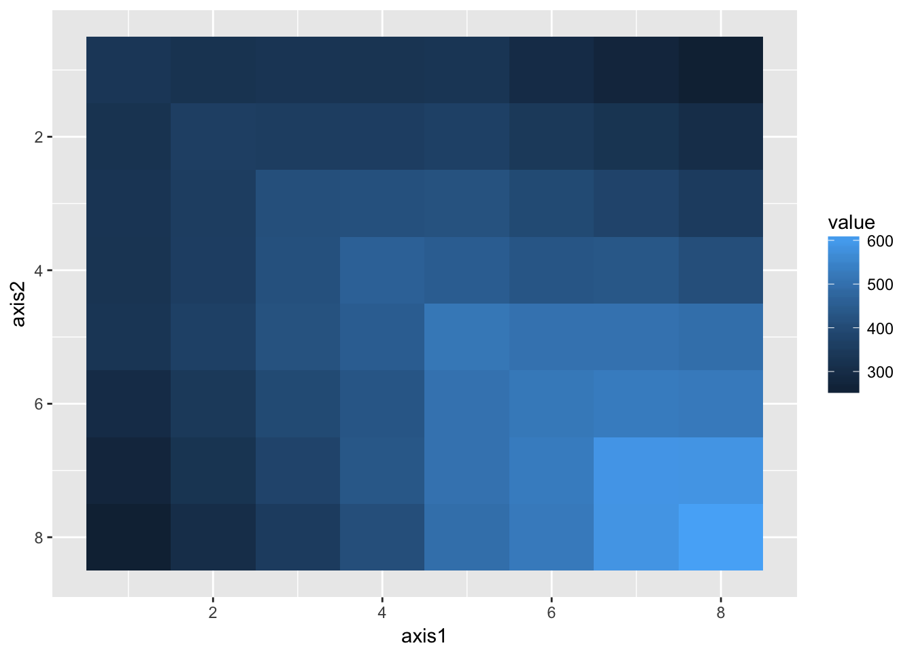
Variance increases with time
d.
Make a spaghetti plot of the data (don’t forget to restructure the data!).
stroke_long %>%
ggplot(aes(x = week_int, y = bartel, col = Subject, group = Subject)) +
geom_line() + facet_wrap(~Group)Most seem to increase. Group A starts a little lower but shows relatively steep increase
Pretty different slopes, pretty different intercepts.
Effect is pretty much linear
e.
Fit the model you think would best describe the patterns in the data.
We will go for random slope and intercept, taking the first bartel as baseline
stroke_base <- stroke_long %>%
group_by(Subject) %>%
mutate(bartel_baseline = bartel[week_int == 8]) %>%
ungroup() %>%
filter(week_int > 1)Random part with both slope and intercept did not converge, so now only intercept
fit <- lme(fixed = bartel ~ Group*week_int + bartel_baseline,
random = ~ 1 | Subject,
data = stroke_base,
method = "ML")
summary(fit)Linear mixed-effects model fit by maximum likelihood
Data: stroke_base
AIC BIC logLik
1227.427 1255.543 -604.7136
Random effects:
Formula: ~1 | Subject
(Intercept) Residual
StdDev: 6.939387 7.731775
Fixed effects: bartel ~ Group * week_int + bartel_baseline
Value Std.Error DF t-value p-value
(Intercept) -42.45840 7.043459 141 -6.028061 0e+00
GroupB 22.34137 5.515033 20 4.050995 6e-04
GroupC 26.59386 5.652543 20 4.704760 1e-04
week_int 6.87500 0.527712 141 13.027941 0e+00
bartel_baseline 0.83608 0.071969 20 11.617154 0e+00
GroupB:week_int -2.63393 0.746297 141 -3.529328 6e-04
GroupC:week_int -3.63839 0.746297 141 -4.875259 0e+00
Correlation:
(Intr) GroupB GroupC wek_nt brtl_b GrpB:_
GroupB -0.569
GroupC -0.629 0.536
week_int -0.375 0.478 0.467
bartel_baseline -0.843 0.237 0.318 0.000
GroupB:week_int 0.265 -0.677 -0.330 -0.707 0.000
GroupC:week_int 0.265 -0.338 -0.660 -0.707 0.000 0.500
Standardized Within-Group Residuals:
Min Q1 Med Q3 Max
-2.706719777 -0.574462832 0.002877703 0.556111611 3.144403124
Number of Observations: 168
Number of Groups: 24 f.
Summarize and interpret the results in part (e).
Group B and C start out better than A, but Group A increases faster
Inter and intra subject variation with regards to intercept are approximately equal
Day 3
During this computer lab we will 1,2,5) Revisit examples from earlier in the week, and do some proper model building and checking. 3) (Optional) Try to reproduce the results from this morning’s lecture, using SPSS and/or R. 4) Expand on the Reisby analyses using polynomial functions for time. 6) Analyze data from a multi-center, longitudinal trial. 7) Time permitting, examine effects of centering explanatory variables. 8) Time permitting, take a look at a (two-level) dataset with complicated residuals.
Note: Exercise 1 is a re-analysis of the example from this morning’s lecture, intended to help you familiarize yourself with mixed models in SPSS and R. If you are already comfortable with the software, feel free to skip it.
1.
We will re-analyze the schools data (school.sav or school.dat ) in R or SPSS according to the strategy described in the lecture: starting with the full fixed model we first test the random effects, then the fixed effects. ### a.
Making use of the full fixed model from Day 1, test (with the likelihood ratio test) whether a random slope is necessary, or whether a random intercept model would be sufficient. Which model do you prefer?
full_model <- lmer(normexam ~ standlrt + gender + schgend + schav + (standlrt | school), data = london,
REML = F)
fit2 <- lmer(normexam ~ standlrt + gender + schgend + schav + (1 | school), data = london,
REML = F)
anova(full_model, fit2)Data: london
Models:
fit2: normexam ~ standlrt + gender + schgend + schav + (1 | school)
full_model: normexam ~ standlrt + gender + schgend + schav + (standlrt |
full_model: school)
Df AIC BIC logLik deviance Chisq Chi Df Pr(>Chisq)
fit2 9 9336.3 9393.1 -4659.1 9318.3
full_model 11 9300.4 9369.8 -4639.2 9278.4 39.865 2 2.205e-09 ***
---
Signif. codes: 0 '***' 0.001 '**' 0.01 '*' 0.05 '.' 0.1 ' ' 1Model with random slope is a lot better
b.
Using maximum likelihood estimation and the “random part” chosen in part (a), try to reduce the fixed part of the model by removing non-significant explanatory variables.
fit <- full_model
drop1(fit, test = "Chisq")Single term deletions
Model:
normexam ~ standlrt + gender + schgend + schav + (standlrt |
school)
Df AIC LRT Pr(Chi)
<none> 9300.4
standlrt 1 9454.8 156.383 < 2.2e-16 ***
gender 1 9322.7 24.320 8.159e-07 ***
schgend 2 9302.3 5.927 0.05163 .
schav 2 9299.1 2.677 0.26227
---
Signif. codes: 0 '***' 0.001 '**' 0.01 '*' 0.05 '.' 0.1 ' ' 1Remove schav
drop1(update(fit, normexam ~ standlrt + gender + schgend + (standlrt | school)), test = "Chisq")Single term deletions
Model:
normexam ~ standlrt + gender + schgend + (standlrt | school)
Df AIC LRT Pr(Chi)
<none> 9299.1
standlrt 1 9455.4 158.312 < 2.2e-16 ***
gender 1 9321.7 24.659 6.844e-07 ***
schgend 2 9301.4 6.267 0.04356 *
---
Signif. codes: 0 '***' 0.001 '**' 0.01 '*' 0.05 '.' 0.1 ' ' 1Now we can’t reduce the model further
fit_final <- update(fit, normexam ~ standlrt + gender + schgend + (standlrt | school))c.
Once you have a final model, run it one last time using REML estimation for correct parameter estimates. Interpret the results of this model.
fit_final_reml <- update(fit_final, REML = T)
fit_final_reml %>% summary()Linear mixed model fit by REML ['lmerMod']
Formula: normexam ~ standlrt + gender + schgend + (standlrt | school)
Data: london
REML criterion at convergence: 9303.1
Scaled residuals:
Min 1Q Median 3Q Max
-3.8433 -0.6377 0.0266 0.6778 3.4276
Random effects:
Groups Name Variance Std.Dev. Corr
school (Intercept) 0.08366 0.2892
standlrt 0.01508 0.1228 0.57
Residual 0.55029 0.7418
Number of obs: 4059, groups: school, 65
Fixed effects:
Estimate Std. Error t value
(Intercept) -0.18889 0.05249 -3.599
standlrt 0.55400 0.02012 27.537
gender1 0.16851 0.03384 4.980
schgend2 0.17974 0.10171 1.767
schgend3 0.17443 0.08079 2.159
Correlation of Fixed Effects:
(Intr) stndlr gendr1 schgn2
standlrt 0.313
gender1 -0.302 -0.038
schgend2 -0.464 0.006 0.150
schgend3 -0.458 0.019 -0.230 0.240More inter school variation than between school variation. Higher standlrt is associated with higher normexam
Gender is associated with normexam (1 = better) School gender is associated with normexam, 2 and 3 being better
Note: save your R script (or SPSS syntax) to re-run later! After the next part of the lecture, you will continue analyzing this dataset/model.
2.
Continuing with the schools data (school.sav or school.dat ) in R and/or SPSS:
a.
Check the model assumptions for the final model: are the residuals, random intercept (and random slope if you used it) (approximately) normally distributed? (Note that some of the graphs for checking model assumptions are not easily produced in SPSS; see the extra slides on Moodle for help.)
plot(fit_final_reml)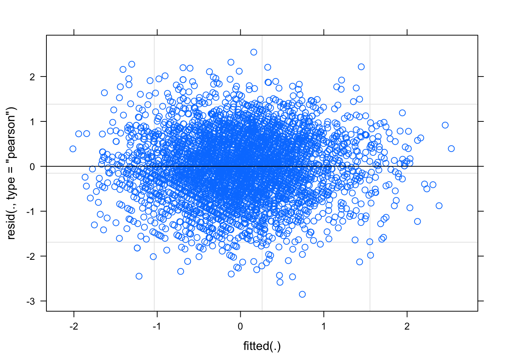
Boxplot of residuals per subject / group
london %>%
mutate(residual = resid(fit_final_reml)) %>%
ggplot(aes(x = school, y = residual, group = school)) +
geom_boxplot()No structure, no heteroscedasticity
qqnorm(resid(fit_final_reml))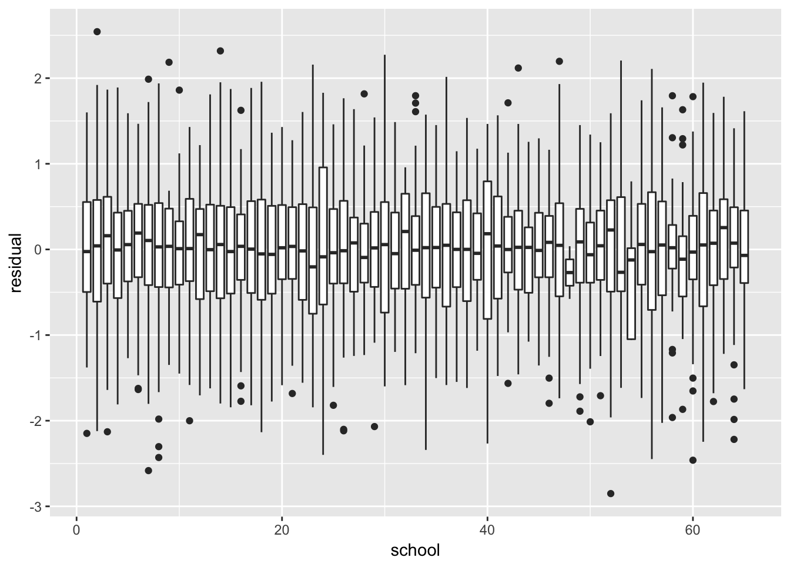
Normal distributed residuals
Look at intercepts and slopes
coefs <- coef(fit_final_reml)
head(coefs$school) (Intercept) standlrt gender1 schgend2 schgend3
1 0.28325962 0.6951500 0.1685081 0.179739 0.1744336
2 0.13894051 0.7087007 0.1685081 0.179739 0.1744336
3 0.36475409 0.6577954 0.1685081 0.179739 0.1744336
4 -0.05630864 0.6840552 0.1685081 0.179739 0.1744336
5 0.12396826 0.6498859 0.1685081 0.179739 0.1744336
6 0.17922647 0.6048985 0.1685081 0.179739 0.1744336intercepts <- coefs$school[,1]
slopes <- coefs$school[,2]
boxplot(intercepts)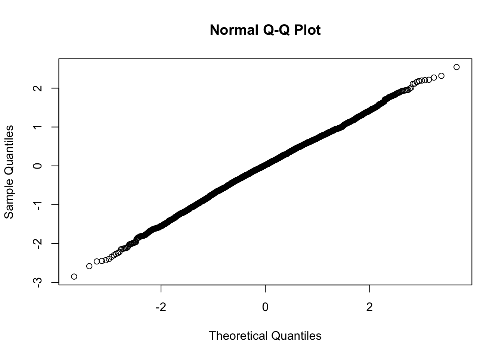
boxplot(slopes)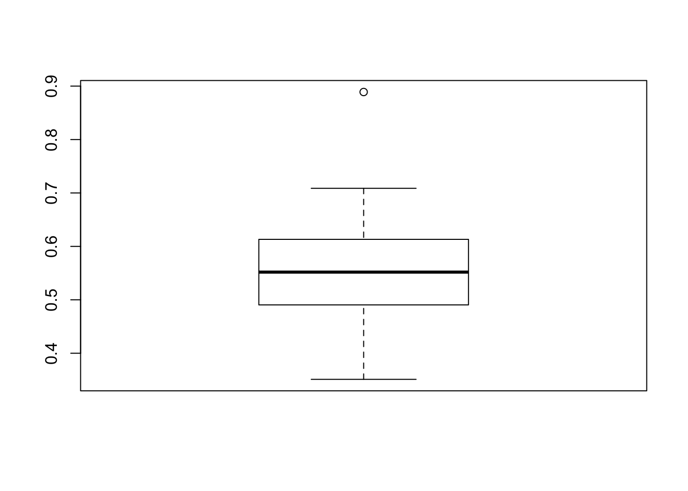
There is a single observation a deviating slope. It is the highest slope, so we can get the rownumber:
which.max(slopes)[1] 53Look at the 53’th school
london %>%
filter(as.numeric(school) == 53) school student normexam standlrt gender schgend avslrt schav vrband
1 53 1 -0.129080 0.040499 1 3 0.38055 3 2
2 53 2 0.134070 0.619060 1 3 0.38055 3 2
3 53 3 -1.118600 -1.447200 1 3 0.38055 3 3
4 53 4 0.402670 0.619060 1 3 0.38055 3 2
5 53 5 2.408700 1.280300 1 3 0.38055 3 1
6 53 6 1.109400 -0.042152 1 3 0.38055 3 2
7 53 7 0.194150 0.123150 1 3 0.38055 3 2
8 53 8 1.661800 1.115000 1 3 0.38055 3 1
9 53 9 1.813800 0.701710 1 3 0.38055 3 1
10 53 10 0.073536 -0.868670 1 3 0.38055 3 2
11 53 11 0.134070 -0.042152 1 3 0.38055 3 2
12 53 12 0.261320 -0.042152 1 3 0.38055 3 2
13 53 13 2.924700 0.619060 1 3 0.38055 3 1
14 53 14 1.813800 0.619060 1 3 0.38055 3 2
15 53 15 3.134000 1.445600 1 3 0.38055 3 1
16 53 16 1.506200 1.941500 1 3 0.38055 3 1
17 53 17 1.579200 0.453760 1 3 0.38055 3 2
18 53 18 -0.338840 -0.703360 1 3 0.38055 3 2
19 53 19 1.175800 0.371100 1 3 0.38055 3 2
20 53 20 -0.338840 -0.620710 1 3 0.38055 3 2
21 53 21 -1.118600 -1.529900 1 3 0.38055 3 3
22 53 22 0.478190 0.123150 1 3 0.38055 3 2
23 53 23 0.967590 -0.290110 1 3 0.38055 3 2
24 53 24 1.734900 1.776200 1 3 0.38055 3 1
25 53 25 3.374700 2.024100 1 3 0.38055 3 1
26 53 26 0.747230 0.371100 1 3 0.38055 3 2
27 53 27 2.701800 1.197600 1 3 0.38055 3 2
28 53 28 2.408700 1.032300 1 3 0.38055 3 1
29 53 29 -0.197610 -0.124800 1 3 0.38055 3 2
30 53 30 2.103000 0.536410 1 3 0.38055 3 1
31 53 31 1.900300 1.858800 1 3 0.38055 3 1
32 53 32 -0.555110 0.453760 1 3 0.38055 3 2
33 53 33 0.967590 -0.207460 1 3 0.38055 3 2
34 53 34 1.109400 1.362900 1 3 0.38055 3 2
35 53 35 1.661800 1.445600 1 3 0.38055 3 1
36 53 36 -1.118600 -0.786020 1 3 0.38055 3 3
37 53 37 0.328070 0.619060 1 3 0.38055 3 2
38 53 38 1.977100 1.032300 1 3 0.38055 3 1
39 53 39 0.610730 0.371100 1 3 0.38055 3 2
40 53 40 1.240500 0.784360 1 3 0.38055 3 2
41 53 41 1.661800 0.123150 1 3 0.38055 3 2
42 53 42 -1.029100 -0.455410 1 3 0.38055 3 2
43 53 43 0.678760 -0.124800 1 3 0.38055 3 2
44 53 44 -0.062088 0.371100 1 3 0.38055 3 2
45 53 45 -1.962100 -2.439000 1 3 0.38055 3 3
46 53 46 -1.438700 -1.364600 1 3 0.38055 3 3
47 53 47 -0.492780 -0.786020 1 3 0.38055 3 2
48 53 48 0.194150 0.453760 1 3 0.38055 3 2
49 53 49 1.175800 -0.372760 1 3 0.38055 3 1
50 53 50 1.813800 0.949670 1 3 0.38055 3 1
51 53 51 2.203100 0.949670 1 3 0.38055 3 2
52 53 52 1.661800 0.867010 1 3 0.38055 3 1
53 53 53 2.408700 0.040499 1 3 0.38055 3 2
54 53 54 2.924700 2.106800 1 3 0.38055 3 1
55 53 55 -1.219500 -1.777800 1 3 0.38055 3 2
56 53 56 2.796100 1.693500 1 3 0.38055 3 1
57 53 57 0.821990 0.536410 1 3 0.38055 3 2
58 53 58 0.610730 0.453760 1 3 0.38055 3 1
59 53 59 2.532400 -0.372760 1 3 0.38055 3 2
60 53 60 0.261320 0.040499 1 3 0.38055 3 2
61 53 61 0.544340 1.197600 1 3 0.38055 3 2
62 53 62 2.626700 0.949670 1 3 0.38055 3 1
63 53 63 2.203100 0.949670 1 3 0.38055 3 2
64 53 64 -0.699510 -1.034000 1 3 0.38055 3 3
65 53 65 1.175800 0.867010 1 3 0.38055 3 2
66 53 66 2.796100 1.528200 1 3 0.38055 3 1
67 53 67 0.747230 0.619060 1 3 0.38055 3 2
68 53 68 2.796100 0.784360 1 3 0.38055 3 1
69 53 69 2.532400 0.867010 1 3 0.38055 3 1
70 53 70 0.261320 0.784360 1 3 0.38055 3 2We should look at the residuals of this school when corrected for the fixed part
We create predictions based on the beta’s of the fixed part, but it’s a little messy because we would need to properly handle the factor variables that should be recoded to dummy variables.
We can also take the predictions, and then add the intercept and slope
First polish up the slopes and intercepts
betas <- fit_final_reml@beta
school_df <- coefs$school
school_df %<>%
transmute(
random_intercept = `(Intercept)`,
random_slope = standlrt,
school = 1:n())
london <- merge(london, school_df, by = "school", all.x = T)
london %<>%
mutate(predicted = predict(fit_final_reml, type = "response"),
predicted_fixed = predicted - random_intercept - random_slope * standlrt,
resid_fixed = normexam - predicted_fixed,
residual = resid(fit_final_reml))london %>%
mutate(special_school = as.numeric(school) == 53) %>%
data.table::melt(measure.vars = c("resid_fixed", "normexam"),
variable.name = "y_type") %>%
ggplot(aes(x = standlrt, y = value,
alpha = special_school, shape = special_school)) +
geom_point() + theme_minimal() +
facet_grid(~y_type)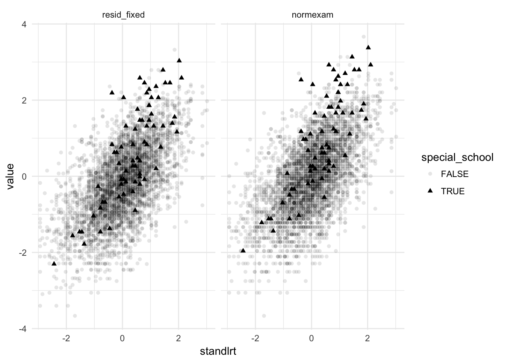
We can see that this school does seem to have a steeper slope than the rest of the schools.
On original scale:
london %>%
mutate(special_school = as.numeric(school) == 53,
residual = resid(fit_final_reml)) %>%
ggplot(aes(x = standlrt, y = normexam,
alpha = special_school, shape = special_school)) +
geom_point() + theme_minimal()3. (Optional)
Repeat this morning’s analysis of the Reisby data in R or SPSS (or both). Choose the best model, check model assumptions, and interpret the results of the best model. SPSS users will find slight discrepancies between R and SPSS (for unstructured, AR(1) and heterogeneous AR(1) models), but overall conclusions remain the same.
Note: save your R script (or SPSS syntax) for use in the next exercise!.
Luckily, we saved the fits in a list
names(fits_reisby)[1] "compound_symmerty" "random_intercept"
[3] "auto_regressive" "heterogeneous_AR"
[5] "unstructured_correlation" "continous_autoregressive"All these models share the same fixed part, so we can go ahead and compare the random parts. All were fitted with ML
fits <- map_df(fits_reisby, function(fit) data.frame(fit = I(list(fit)),
aic = AIC(fit)), .id = "model")
fits model
1 compound_symmerty
2 random_intercept
3 auto_regressive
4 heterogeneous_AR
5 unstructured_correlation
6 continous_autoregressive
fit
1 0.1516142, 375, 4, 0, 22.44163, -2.351842, 1.992873, -0.04417592, 0.891404, -0.09855155, -0.891404, 0.09855155, -0.09855155, 0.03963299, 0.09855155, -0.03963299, -0.891404, 0.09855155, 1.61352, -0.183482, 0.09855155, -0.03963299, -0.183482, 0.07400663, 5.858441, 0.03668889, 0.006672432, 0.006672432, 0.002546817, -1141.069, 0, 1, 1, 1, 1, 1, 1, 2, 2, 2, 2, 2, 2, 3, 3, 3, 3, 3, 3, 4, 4, 4, 4, 4, 4, 5, 5, 5, 5, 5, 6, 6, 6, 6, 6, 7, 7, 7, 7, 7, 7, 8, 8, 8, 8, 8, 9, 9, 9, 9, 9, 10, 10, 10, 10, 10, 11, 11, 11, 11, 11, 11, 12, 12, 12, 12, 12, 13, 13, 13, 13, 13, 13, 14, 14, 14, 14, 14, 14, 15, 15, 15, 15, 15, 15, 55, 55, 55, 55, 55, 55, 56, 56, 56, 56, 56, 56, 57, 57, 57, 57, 57, 57, 58, 58, 58, 58, 58, 58, 59, 59, 59, 59, 59, 59, 60, 60, 60, 60, 60, 60, 61, 61, 61, 61, 61, 62, 62, 62, 62, 62, 62, 63, 63, 63, 63, 63, 63, 64, 64, 64, 64, 64, 64, 65, 65, 65, 65, 65, 66, 66, 66, 66, 16, 16, 16, 16, 16, 16, 17, 17, 17, 17, 17, 17, 18, 18, 18, 18, 18, 19, 19, 19, 19, 19, 19, 20, 20, 20, 20, 20, 20, 21, 21, 21, 21, 21, 21, 22, 22, 22, 22, 22, 23, 23, 23, 23, 23, 24, 24, 24, 24, 24, 25, 25, 25, 25, 25, 25, 26, 26, 26, 26, 26, 27, 27, 27, 27, 27, 27, 28, 28, 28, 28, 28, 28, 29, 29, 29, 29, 29, 29, 30, 30, 30, 30, 30, 31, 31, 31, 31, 31, 31, 32, 32, 32, 32, 32, 32, 33, 33, 33, 33, 33, 33, 34, 34, 34, 34, 34, 34, 35, 35, 35, 35, 35, 36, 36, 36, 36, 36, 36, 37, 37, 37, 37, 37, 37, 38, 38, 38, 38, 38, 38, 39, 39, 39, 39, 39, 40, 40, 40, 40, 40, 41, 41, 41, 41, 41, 41, 42, 42, 42, 42, 42, 42, 43, 43, 43, 43, 43, 44, 44, 44, 44, 44, 44, 45, 45, 45, 45, 45, 45, 46, 46, 46, 46, 46, 46, 47, 47, 47, 47, 47, 47, 48, 48, 48, 48, 48, 48, 49, 49, 49, 49, 49, 49, 50, 50, 50, 50, 50, 51, 51, 51, 51, 51, 51, 52, 52, 52, 52, 52, 52, 53, 53, 53, 53, 53, 53, 54, 54, 54, 54, 54, 54, gls(model = hdrs ~ week * endo, data = reisby_long, correlation = corCompSymm(form = ~1 | , id), method = "ML", na.action = "na.omit"), ML, 22.44163, 20.08979, 17.73794, 15.3861, 13.03426, 10.68242, 22.44163, 20.08979, 17.73794, 15.3861, 13.03426, 10.68242, 24.4345, 22.03848, 19.64247, 17.24645, 14.85043, 12.45441, 22.44163, 20.08979, 17.73794, 15.3861, 13.03426, 10.68242, 24.4345, 22.03848, 19.64247, 17.24645, 14.85043, 24.4345, 22.03848, 19.64247, 17.24645, 12.45441, 24.4345, 22.03848, 19.64247, 17.24645, 14.85043, 12.45441, 22.44163, 20.08979, 17.73794, 15.3861, 13.03426, 20.08979, 17.73794, 15.3861, 13.03426, 10.68242, 22.03848, 19.64247, 17.24645, 14.85043, 12.45441, 24.4345, 22.03848, 19.64247, 17.24645, 14.85043, 12.45441, 22.03848, 19.64247, 17.24645, 14.85043, 12.45441, 22.44163, 20.08979, 17.73794, 15.3861, 13.03426, 10.68242, 22.44163, 20.08979, 17.73794, 15.3861, 13.03426, 10.68242, 22.44163, 20.08979, 17.73794, 15.3861, 13.03426, 10.68242, 24.4345, 22.03848, 19.64247, 17.24645, 14.85043, 12.45441, 24.4345, 22.03848, 19.64247, 17.24645, 14.85043, 12.45441, 22.44163, 20.08979, 17.73794, 15.3861, 13.03426, 10.68242, 22.44163, 20.08979, 17.73794, 15.3861, 13.03426, 10.68242, 24.4345, 22.03848, 19.64247, 17.24645, 14.85043, 12.45441, 22.44163, 20.08979, 17.73794, 15.3861, 13.03426, 10.68242, 22.44163, 20.08979, 17.73794, 15.3861, 13.03426, 24.4345, 22.03848, 19.64247, 17.24645, 14.85043, 12.45441, 24.4345, 22.03848, 19.64247, 17.24645, 14.85043, 12.45441, 22.44163, 20.08979, 17.73794, 15.3861, 13.03426, 10.68242, 22.03848, 19.64247, 17.24645, 14.85043, 12.45441, 24.4345, 19.64247, 17.24645, 12.45441, 24.4345, 22.03848, 19.64247, 17.24645, 14.85043, 12.45441, 22.44163, 20.08979, 17.73794, 15.3861, 13.03426, 10.68242, 24.4345, 22.03848, 19.64247, 14.85043, 12.45441, 22.44163, 20.08979, 17.73794, 15.3861, 13.03426, 10.68242, 22.44163, 20.08979, 17.73794, 15.3861, 13.03426, 10.68242, 22.44163, 20.08979, 17.73794, 15.3861, 13.03426, 10.68242, 24.4345, 22.03848, 19.64247, 17.24645, 14.85043, 24.4345, 22.03848, 19.64247, 17.24645, 12.45441, 24.4345, 19.64247, 17.24645, 14.85043, 12.45441, 22.44163, 20.08979, 17.73794, 15.3861, 13.03426, 10.68242, 24.4345, 22.03848, 19.64247, 17.24645, 14.85043, 24.4345, 22.03848, 19.64247, 17.24645, 14.85043, 12.45441, 24.4345, 22.03848, 19.64247, 17.24645, 14.85043, 12.45441, 24.4345, 22.03848, 19.64247, 17.24645, 14.85043, 12.45441, 24.4345, 22.03848, 19.64247, 17.24645, 14.85043, 22.44163, 20.08979, 17.73794, 15.3861, 13.03426, 10.68242, 22.44163, 20.08979, 17.73794, 15.3861, 13.03426, 10.68242, 22.44163, 20.08979, 17.73794, 15.3861, 13.03426, 10.68242, 22.44163, 20.08979, 17.73794, 15.3861, 13.03426, 10.68242, 22.44163, 20.08979, 15.3861, 13.03426, 10.68242, 22.44163, 20.08979, 17.73794, 15.3861, 13.03426, 10.68242, 22.44163, 20.08979, 17.73794, 15.3861, 13.03426, 10.68242, 22.44163, 20.08979, 17.73794, 15.3861, 13.03426, 10.68242, 24.4345, 19.64247, 17.24645, 14.85043, 12.45441, 22.03848, 19.64247, 17.24645, 14.85043, 12.45441, 22.44163, 20.08979, 17.73794, 15.3861, 13.03426, 10.68242, 24.4345, 22.03848, 19.64247, 17.24645, 14.85043, 12.45441, 24.4345, 22.03848, 19.64247, 17.24645, 14.85043, 22.44163, 20.08979, 17.73794, 15.3861, 13.03426, 10.68242, 24.4345, 22.03848, 19.64247, 17.24645, 14.85043, 12.45441, 22.44163, 20.08979, 17.73794, 15.3861, 13.03426, 10.68242, 24.4345, 22.03848, 19.64247, 17.24645, 14.85043, 12.45441, 24.4345, 22.03848, 19.64247, 17.24645, 14.85043, 12.45441, 24.4345, 22.03848, 19.64247, 17.24645, 14.85043, 12.45441, 24.4345, 22.03848, 19.64247, 17.24645, 14.85043, 24.4345, 22.03848, 19.64247, 17.24645, 14.85043, 12.45441, 24.4345, 22.03848, 19.64247, 17.24645, 14.85043, 12.45441, 24.4345, 22.03848, 19.64247, 17.24645, 14.85043, 12.45441, 24.4345, 22.03848, 19.64247, 17.24645, 14.85043, 12.45441, 3.558372, 1.910214, 0.2620561, -8.386102, -9.03426, -7.682418, 10.55837, 3.910214, -2.737944, 8.613898, 1.96574, 2.317582, 4.565499, -0.03848319, -1.642465, -4.246448, 4.14957, -12.45441, -0.4416278, -8.089786, -1.737944, 0.613898, -0.03426009, -1.682418, -3.434501, 2.961517, 3.357535, 0.7535525, 5.14957, -3.434501, -1.038483, -3.642465, 1.753552, -6.454412, -3.434501, -0.03848319, -8.642465, -8.246448, -5.85043, -5.454412, -1.441628, 2.910214, 1.262056, 7.613898, 9.96574, -3.089786, -6.737944, -2.386102, -6.03426, -3.682418, -6.038483, -3.642465, -1.246448, 1.14957, -1.454412, -5.434501, -6.038483, -6.642465, -5.246448, -7.85043, -6.454412, 3.961517, -1.642465, 0.7535525, -0.8504297, -1.454412, -2.441628, -1.089786, -0.7379439, 2.613898, 2.96574, 6.317582, -2.441628, 1.910214, 1.262056, 3.613898, -1.03426, 3.317582, -7.441628, -5.089786, -2.737944, -2.386102, -8.03426, -5.682418, 4.565499, 7.961517, 6.357535, 4.753552, 4.14957, 11.54559, -3.434501, -0.03848319, -6.642465, -6.246448, -12.85043, -11.45441, -3.441628, -3.089786, -2.737944, 0.613898, -1.03426, 1.317582, -1.441628, -9.089786, 0.2620561, -15.3861, -13.03426, -6.682418, 2.565499, 3.961517, 6.357535, 7.753552, 9.14957, 6.545588, 5.558372, 1.910214, 0.2620561, 4.613898, -2.03426, 2.317582, 4.558372, 6.910214, -4.737944, -10.3861, -6.03426, -5.434501, 10.96152, -7.642465, -5.246448, -11.85043, -11.45441, 5.565499, 16.96152, 10.35753, 9.753552, 5.14957, -8.454412, 1.558372, -1.089786, -3.737944, -3.386102, -10.03426, -6.682418, 2.961517, 2.357535, -3.246448, 0.1495703, -10.45441, 9.565499, 13.35753, 5.753552, -1.454412, -6.434501, -0.03848319, -3.642465, -9.246448, -5.85043, -0.4544118, -1.441628, 0.9102142, -4.737944, -1.386102, -3.03426, -5.682418, -3.434501, 4.961517, 9.357535, -2.85043, 11.54559, -3.441628, -3.089786, -2.737944, -4.386102, -8.03426, -9.682418, -0.4416278, 0.9102142, 0.2620561, 1.613898, -1.03426, 0.3175818, -0.4416278, 1.910214, -1.737944, 3.613898, 6.96574, 0.3175818, -0.434501, -3.038483, -8.642465, -10.24645, -8.85043, -4.434501, -6.038483, 1.357535, -0.2464475, 2.545588, -7.434501, -1.642465, -0.2464475, 2.14957, -6.454412, -1.441628, -1.089786, -7.737944, -4.386102, -2.03426, -2.682418, 2.565499, -1.038483, -2.642465, -4.246448, -9.85043, 7.565499, 3.961517, 3.357535, 8.753552, 8.14957, 11.54559, -7.434501, -4.038483, -0.6424654, 3.753552, 2.14957, -1.454412, -0.434501, -4.038483, -9.642465, -3.246448, -1.85043, -0.4544118, 3.565499, -1.038483, 5.357535, 14.75355, 19.14957, -5.441628, -2.089786, -2.737944, -7.386102, 5.96574, 6.317582, -0.4416278, 3.910214, 10.26206, 10.6139, 14.96574, 18.31758, -3.441628, 0.9102142, 0.2620561, 0.613898, 0.9657399, -0.6824182, 0.5583722, -0.08978584, 3.262056, 4.613898, 10.96574, 3.317582, 8.558372, 4.910214, -8.386102, -5.03426, 0.3175818, -1.441628, 0.9102142, 0.2620561, -0.386102, -1.03426, -0.6824182, 4.558372, 1.910214, 5.262056, 5.613898, -1.03426, 2.317582, -0.4416278, -0.08978584, 4.262056, 7.613898, 5.96574, 7.317582, 2.565499, -5.642465, -5.246448, -3.85043, -0.4544118, -1.038483, -7.642465, -4.246448, -1.85043, 5.545588, 6.558372, 6.910214, 9.262056, 6.613898, 8.96574, 12.31758, 0.565499, 1.961517, -0.6424654, 5.753552, -0.8504297, 8.545588, -6.434501, -7.038483, -5.642465, -7.246448, -6.85043, 1.558372, 0.9102142, -5.737944, -2.386102, -1.03426, -5.682418, -7.434501, -3.038483, -4.642465, -5.246448, -5.85043, 0.5455882, -0.4416278, 4.910214, -5.737944, 0.613898, -3.03426, 5.317582, 5.565499, 4.961517, 3.357535, 2.753552, -2.85043, -1.454412, -3.434501, -3.038483, -1.642465, -2.246448, 3.14957, 6.545588, 2.565499, -1.038483, 4.357535, 4.753552, 1.14957, -1.454412, 3.565499, 4.961517, 7.357535, 8.753552, 8.14957, -2.434501, 3.961517, 0.3575346, -4.246448, -4.85043, -5.454412, 2.565499, -0.03848319, 4.357535, 7.753552, 4.14957, 6.545588, -3.434501, 5.961517, 7.357535, 11.75355, 13.14957, 20.54559, 5.565499, -0.03848319, -8.642465, -9.246448, -7.85043, 6.545588, 1, 2, 3, 4, 30, 35, 48, 49, 55, 67, 132, 151, 158, 161, 178, 204, 209, 212, 228, 252, 279, 302, 307, 330, 372
2 -0.1096426, 375, 1, 1, 0, 0, 66, 1, 1, 1, 4, 1, 22.44163, -2.351842, 1.992873, -0.04417592, -2.673794, 3.399203, -1.334229, -1.569613, 1.407111, -2.05219, -4.370728, 3.25215, -3.511586, -1.798543, -5.198864, 0.1229367, 1.052818, 0.9147953, -4.330066, -3.542592, -2.121704, 3.135168, -4.330066, 0.2246819, 1.466886, -4.997822, -1.09145, -2.182202, -2.673794, -2.435848, 5.980973, -1.058184, -2.714456, 6.691181, -0.7414768, 7.953952, -0.1893861, 3.123158, 0.0585741, -0.3274088, 2.571067, 3.399203, -2.022078, -1.478297, 6.987793, 2.116338, -5.318068, -1.707636, -3.542592, 0.2246819, 1.70227, -0.09202505, 1.426224, 5.250071, -1.748297, 3.496565, 7.637245, -1.88632, 5.428882, -5.612932, -1.155545, -6.262384, 5.014814, 1.742931, -1.55155, -4.232705, 5.428882, -3.225885, -1.318173, 5.189935, 0.8818957, -0.09750034, -0.8818957, 0.09750034, -0.09750034, 0.03921024, 0.09750034, -0.03921024, -0.8818957, 0.09750034, 1.596309, -0.1815249, 0.09750034, -0.03921024, -0.1815249, 0.07321723, 4.362878, 0.01135748, -0.0003554422, -0.0003554422, 0.001617839, -1141.069, 1, 1, 1, 1, 1, 1, 2, 2, 2, 2, 2, 2, 3, 3, 3, 3, 3, 3, 4, 4, 4, 4, 4, 4, 5, 5, 5, 5, 5, 6, 6, 6, 6, 6, 7, 7, 7, 7, 7, 7, 8, 8, 8, 8, 8, 9, 9, 9, 9, 9, 10, 10, 10, 10, 10, 11, 11, 11, 11, 11, 11, 12, 12, 12, 12, 12, 13, 13, 13, 13, 13, 13, 14, 14, 14, 14, 14, 14, 15, 15, 15, 15, 15, 15, 55, 55, 55, 55, 55, 55, 56, 56, 56, 56, 56, 56, 57, 57, 57, 57, 57, 57, 58, 58, 58, 58, 58, 58, 59, 59, 59, 59, 59, 59, 60, 60, 60, 60, 60, 60, 61, 61, 61, 61, 61, 62, 62, 62, 62, 62, 62, 63, 63, 63, 63, 63, 63, 64, 64, 64, 64, 64, 64, 65, 65, 65, 65, 65, 66, 66, 66, 66, 16, 16, 16, 16, 16, 16, 17, 17, 17, 17, 17, 17, 18, 18, 18, 18, 18, 19, 19, 19, 19, 19, 19, 20, 20, 20, 20, 20, 20, 21, 21, 21, 21, 21, 21, 22, 22, 22, 22, 22, 23, 23, 23, 23, 23, 24, 24, 24, 24, 24, 25, 25, 25, 25, 25, 25, 26, 26, 26, 26, 26, 27, 27, 27, 27, 27, 27, 28, 28, 28, 28, 28, 28, 29, 29, 29, 29, 29, 29, 30, 30, 30, 30, 30, 31, 31, 31, 31, 31, 31, 32, 32, 32, 32, 32, 32, 33, 33, 33, 33, 33, 33, 34, 34, 34, 34, 34, 34, 35, 35, 35, 35, 35, 36, 36, 36, 36, 36, 36, 37, 37, 37, 37, 37, 37, 38, 38, 38, 38, 38, 38, 39, 39, 39, 39, 39, 40, 40, 40, 40, 40, 41, 41, 41, 41, 41, 41, 42, 42, 42, 42, 42, 42, 43, 43, 43, 43, 43, 44, 44, 44, 44, 44, 44, 45, 45, 45, 45, 45, 45, 46, 46, 46, 46, 46, 46, 47, 47, 47, 47, 47, 47, 48, 48, 48, 48, 48, 48, 49, 49, 49, 49, 49, 49, 50, 50, 50, 50, 50, 51, 51, 51, 51, 51, 51, 52, 52, 52, 52, 52, 52, 53, 53, 53, 53, 53, 53, 54, 54, 54, 54, 54, 54, lme.formula(fixed = hdrs ~ week * endo, data = reisby_long, random = ~1 | , id, method = "ML", na.action = "na.omit"), hdrs ~ week * endo, ML, 22.44163, 20.08979, 17.73794, 15.3861, 13.03426, 10.68242, 22.44163, 20.08979, 17.73794, 15.3861, 13.03426, 10.68242, 24.4345, 22.03848, 19.64247, 17.24645, 14.85043, 12.45441, 22.44163, 20.08979, 17.73794, 15.3861, 13.03426, 10.68242, 24.4345, 22.03848, 19.64247, 17.24645, 14.85043, 24.4345, 22.03848, 19.64247, 17.24645, 12.45441, 24.4345, 22.03848, 19.64247, 17.24645, 14.85043, 12.45441, 22.44163, 20.08979, 17.73794, 15.3861, 13.03426, 20.08979, 17.73794, 15.3861, 13.03426, 10.68242, 22.03848, 19.64247, 17.24645, 14.85043, 12.45441, 24.4345, 22.03848, 19.64247, 17.24645, 14.85043, 12.45441, 22.03848, 19.64247, 17.24645, 14.85043, 12.45441, 22.44163, 20.08979, 17.73794, 15.3861, 13.03426, 10.68242, 22.44163, 20.08979, 17.73794, 15.3861, 13.03426, 10.68242, 22.44163, 20.08979, 17.73794, 15.3861, 13.03426, 10.68242, 24.4345, 22.03848, 19.64247, 17.24645, 14.85043, 12.45441, 24.4345, 22.03848, 19.64247, 17.24645, 14.85043, 12.45441, 22.44163, 20.08979, 17.73794, 15.3861, 13.03426, 10.68242, 22.44163, 20.08979, 17.73794, 15.3861, 13.03426, 10.68242, 24.4345, 22.03848, 19.64247, 17.24645, 14.85043, 12.45441, 22.44163, 20.08979, 17.73794, 15.3861, 13.03426, 10.68242, 22.44163, 20.08979, 17.73794, 15.3861, 13.03426, 24.4345, 22.03848, 19.64247, 17.24645, 14.85043, 12.45441, 24.4345, 22.03848, 19.64247, 17.24645, 14.85043, 12.45441, 22.44163, 20.08979, 17.73794, 15.3861, 13.03426, 10.68242, 22.03848, 19.64247, 17.24645, 14.85043, 12.45441, 24.4345, 19.64247, 17.24645, 12.45441, 24.4345, 22.03848, 19.64247, 17.24645, 14.85043, 12.45441, 22.44163, 20.08979, 17.73794, 15.3861, 13.03426, 10.68242, 24.4345, 22.03848, 19.64247, 14.85043, 12.45441, 22.44163, 20.08979, 17.73794, 15.3861, 13.03426, 10.68242, 22.44163, 20.08979, 17.73794, 15.3861, 13.03426, 10.68242, 22.44163, 20.08979, 17.73794, 15.3861, 13.03426, 10.68242, 24.4345, 22.03848, 19.64247, 17.24645, 14.85043, 24.4345, 22.03848, 19.64247, 17.24645, 12.45441, 24.4345, 19.64247, 17.24645, 14.85043, 12.45441, 22.44163, 20.08979, 17.73794, 15.3861, 13.03426, 10.68242, 24.4345, 22.03848, 19.64247, 17.24645, 14.85043, 24.4345, 22.03848, 19.64247, 17.24645, 14.85043, 12.45441, 24.4345, 22.03848, 19.64247, 17.24645, 14.85043, 12.45441, 24.4345, 22.03848, 19.64247, 17.24645, 14.85043, 12.45441, 24.4345, 22.03848, 19.64247, 17.24645, 14.85043, 22.44163, 20.08979, 17.73794, 15.3861, 13.03426, 10.68242, 22.44163, 20.08979, 17.73794, 15.3861, 13.03426, 10.68242, 22.44163, 20.08979, 17.73794, 15.3861, 13.03426, 10.68242, 22.44163, 20.08979, 17.73794, 15.3861, 13.03426, 10.68242, 22.44163, 20.08979, 15.3861, 13.03426, 10.68242, 22.44163, 20.08979, 17.73794, 15.3861, 13.03426, 10.68242, 22.44163, 20.08979, 17.73794, 15.3861, 13.03426, 10.68242, 22.44163, 20.08979, 17.73794, 15.3861, 13.03426, 10.68242, 24.4345, 19.64247, 17.24645, 14.85043, 12.45441, 22.03848, 19.64247, 17.24645, 14.85043, 12.45441, 22.44163, 20.08979, 17.73794, 15.3861, 13.03426, 10.68242, 24.4345, 22.03848, 19.64247, 17.24645, 14.85043, 12.45441, 24.4345, 22.03848, 19.64247, 17.24645, 14.85043, 22.44163, 20.08979, 17.73794, 15.3861, 13.03426, 10.68242, 24.4345, 22.03848, 19.64247, 17.24645, 14.85043, 12.45441, 22.44163, 20.08979, 17.73794, 15.3861, 13.03426, 10.68242, 24.4345, 22.03848, 19.64247, 17.24645, 14.85043, 12.45441, 24.4345, 22.03848, 19.64247, 17.24645, 14.85043, 12.45441, 24.4345, 22.03848, 19.64247, 17.24645, 14.85043, 12.45441, 24.4345, 22.03848, 19.64247, 17.24645, 14.85043, 24.4345, 22.03848, 19.64247, 17.24645, 14.85043, 12.45441, 24.4345, 22.03848, 19.64247, 17.24645, 14.85043, 12.45441, 24.4345, 22.03848, 19.64247, 17.24645, 14.85043, 12.45441, 24.4345, 22.03848, 19.64247, 17.24645, 14.85043, 12.45441, 19.76783, 17.41599, 15.06415, 12.71231, 10.36047, 8.008624, 25.84083, 23.48899, 21.13715, 18.78531, 16.43346, 14.08162, 23.10027, 20.70425, 18.30824, 15.91222, 13.5162, 11.12018, 20.87201, 18.52017, 16.16833, 13.81649, 11.46465, 9.112805, 25.84161, 23.44559, 21.04958, 18.65356, 16.25754, 22.38231, 19.98629, 17.59028, 15.19426, 10.40222, 20.06377, 17.66776, 15.27174, 12.87572, 10.4797, 8.083684, 25.69378, 23.34194, 20.99009, 18.63825, 16.28641, 16.5782, 14.22636, 11.87452, 9.522674, 7.170832, 20.23994, 17.84392, 15.4479, 13.05189, 10.65587, 19.23564, 16.83962, 14.4436, 12.04758, 9.651566, 7.255548, 22.16142, 19.7654, 17.36938, 14.97337, 12.57735, 23.49445, 21.1426, 18.79076, 16.43892, 14.08708, 11.73524, 23.35642, 21.00458, 18.65274, 16.3009, 13.94906, 11.59721, 18.11156, 15.75972, 13.40788, 11.05604, 8.704194, 6.352352, 29.86338, 27.46737, 25.07135, 22.67533, 20.27931, 17.88329, 18.82157, 16.42555, 14.02953, 11.63352, 9.237498, 6.84148, 21.28608, 18.93424, 16.5824, 14.23056, 11.87872, 9.526873, 16.17924, 13.8274, 11.47556, 9.123718, 6.771876, 4.420034, 29.44932, 27.0533, 24.65728, 22.26126, 19.86524, 17.46923, 24.18456, 21.83272, 19.48088, 17.12903, 14.77719, 12.42535, 20.89008, 18.53824, 16.18639, 13.83455, 11.48271, 20.2018, 17.80578, 15.40976, 13.01374, 10.61772, 8.221707, 29.86338, 27.46737, 25.07135, 22.67533, 20.27931, 17.88329, 19.21574, 16.8639, 14.51206, 12.16022, 9.808375, 7.456533, 20.72031, 18.32429, 15.92827, 13.53226, 11.13624, 29.62444, 24.8324, 22.43638, 17.64435, 20.89191, 18.49589, 16.09987, 13.70386, 11.30784, 8.91182, 20.31992, 17.96808, 15.61624, 13.2644, 10.91256, 8.560715, 27.56967, 25.17365, 22.77763, 17.9856, 15.58958, 18.11156, 15.75972, 13.40788, 11.05604, 8.704194, 6.352352, 22.66631, 20.31447, 17.96263, 15.61078, 13.25894, 10.9071, 23.90851, 21.55667, 19.20483, 16.85299, 14.50115, 12.1493, 19.43668, 17.04066, 14.64464, 12.24863, 9.852608, 23.34305, 20.94703, 18.55102, 16.155, 11.36296, 22.2523, 17.46026, 15.06425, 12.66823, 10.27221, 19.76783, 17.41599, 15.06415, 12.71231, 10.36047, 8.008624, 21.99865, 19.60263, 17.20662, 14.8106, 12.41458, 30.41547, 28.01946, 25.62344, 23.22742, 20.8314, 18.43538, 23.37632, 20.9803, 18.58428, 16.18826, 13.79225, 11.39623, 21.72005, 19.32403, 16.92801, 14.53199, 12.13597, 9.739956, 31.12568, 28.72966, 26.33365, 23.93763, 21.54161, 21.70015, 19.34831, 16.99647, 14.64463, 12.29278, 9.940941, 30.39558, 28.04374, 25.6919, 23.34005, 20.98821, 18.63637, 22.25224, 19.9004, 17.54856, 15.19672, 12.84487, 10.49303, 25.56479, 23.21294, 20.8611, 18.50926, 16.15742, 13.80558, 22.5002, 20.14836, 15.44468, 13.09283, 10.74099, 22.11422, 19.76238, 17.41054, 15.05869, 12.70685, 10.35501, 25.0127, 22.66085, 20.30901, 17.95717, 15.60533, 13.25349, 25.84083, 23.48899, 21.13715, 18.78531, 16.43346, 14.08162, 22.41242, 17.62039, 15.22437, 12.82835, 10.43233, 20.56019, 18.16417, 15.76815, 13.37213, 10.97612, 29.42942, 27.07758, 24.72574, 22.3739, 20.02205, 17.67021, 26.55084, 24.15482, 21.7588, 19.36279, 16.96677, 14.57075, 19.11643, 16.72041, 14.3244, 11.92838, 9.532361, 20.73399, 18.38215, 16.03031, 13.67847, 11.32662, 8.974783, 20.89191, 18.49589, 16.09987, 13.70386, 11.30784, 8.91182, 22.66631, 20.31447, 17.96263, 15.61078, 13.25894, 10.9071, 26.13677, 23.74075, 21.34474, 18.94872, 16.5527, 14.15668, 24.34248, 21.94646, 19.55044, 17.15442, 14.7584, 12.36239, 25.86073, 23.46471, 21.06869, 18.67267, 16.27665, 13.88064, 29.68457, 27.28855, 24.89254, 22.49652, 20.1005, 22.6862, 20.29019, 17.89417, 15.49815, 13.10213, 10.70611, 27.93107, 25.53505, 23.13903, 20.74301, 18.34699, 15.95098, 32.07175, 29.67573, 27.27971, 24.88369, 22.48767, 20.09166, 22.54818, 20.15216, 17.75615, 15.36013, 12.96411, 10.56809, 3.558372, 1.910214, 0.2620561, -8.386102, -9.03426, -7.682418, 10.55837, 3.910214, -2.737944, 8.613898, 1.96574, 2.317582, 4.565499, -0.03848319, -1.642465, -4.246448, 4.14957, -12.45441, -0.4416278, -8.089786, -1.737944, 0.613898, -0.03426009, -1.682418, -3.434501, 2.961517, 3.357535, 0.7535525, 5.14957, -3.434501, -1.038483, -3.642465, 1.753552, -6.454412, -3.434501, -0.03848319, -8.642465, -8.246448, -5.85043, -5.454412, -1.441628, 2.910214, 1.262056, 7.613898, 9.96574, -3.089786, -6.737944, -2.386102, -6.03426, -3.682418, -6.038483, -3.642465, -1.246448, 1.14957, -1.454412, -5.434501, -6.038483, -6.642465, -5.246448, -7.85043, -6.454412, 3.961517, -1.642465, 0.7535525, -0.8504297, -1.454412, -2.441628, -1.089786, -0.7379439, 2.613898, 2.96574, 6.317582, -2.441628, 1.910214, 1.262056, 3.613898, -1.03426, 3.317582, -7.441628, -5.089786, -2.737944, -2.386102, -8.03426, -5.682418, 4.565499, 7.961517, 6.357535, 4.753552, 4.14957, 11.54559, -3.434501, -0.03848319, -6.642465, -6.246448, -12.85043, -11.45441, -3.441628, -3.089786, -2.737944, 0.613898, -1.03426, 1.317582, -1.441628, -9.089786, 0.2620561, -15.3861, -13.03426, -6.682418, 2.565499, 3.961517, 6.357535, 7.753552, 9.14957, 6.545588, 5.558372, 1.910214, 0.2620561, 4.613898, -2.03426, 2.317582, 4.558372, 6.910214, -4.737944, -10.3861, -6.03426, -5.434501, 10.96152, -7.642465, -5.246448, -11.85043, -11.45441, 5.565499, 16.96152, 10.35753, 9.753552, 5.14957, -8.454412, 1.558372, -1.089786, -3.737944, -3.386102, -10.03426, -6.682418, 2.961517, 2.357535, -3.246448, 0.1495703, -10.45441, 9.565499, 13.35753, 5.753552, -1.454412, -6.434501, -0.03848319, -3.642465, -9.246448, -5.85043, -0.4544118, -1.441628, 0.9102142, -4.737944, -1.386102, -3.03426, -5.682418, -3.434501, 4.961517, 9.357535, -2.85043, 11.54559, -3.441628, -3.089786, -2.737944, -4.386102, -8.03426, -9.682418, -0.4416278, 0.9102142, 0.2620561, 1.613898, -1.03426, 0.3175818, -0.4416278, 1.910214, -1.737944, 3.613898, 6.96574, 0.3175818, -0.434501, -3.038483, -8.642465, -10.24645, -8.85043, -4.434501, -6.038483, 1.357535, -0.2464475, 2.545588, -7.434501, -1.642465, -0.2464475, 2.14957, -6.454412, -1.441628, -1.089786, -7.737944, -4.386102, -2.03426, -2.682418, 2.565499, -1.038483, -2.642465, -4.246448, -9.85043, 7.565499, 3.961517, 3.357535, 8.753552, 8.14957, 11.54559, -7.434501, -4.038483, -0.6424654, 3.753552, 2.14957, -1.454412, -0.434501, -4.038483, -9.642465, -3.246448, -1.85043, -0.4544118, 3.565499, -1.038483, 5.357535, 14.75355, 19.14957, -5.441628, -2.089786, -2.737944, -7.386102, 5.96574, 6.317582, -0.4416278, 3.910214, 10.26206, 10.6139, 14.96574, 18.31758, -3.441628, 0.9102142, 0.2620561, 0.613898, 0.9657399, -0.6824182, 0.5583722, -0.08978584, 3.262056, 4.613898, 10.96574, 3.317582, 8.558372, 4.910214, -8.386102, -5.03426, 0.3175818, -1.441628, 0.9102142, 0.2620561, -0.386102, -1.03426, -0.6824182, 4.558372, 1.910214, 5.262056, 5.613898, -1.03426, 2.317582, -0.4416278, -0.08978584, 4.262056, 7.613898, 5.96574, 7.317582, 2.565499, -5.642465, -5.246448, -3.85043, -0.4544118, -1.038483, -7.642465, -4.246448, -1.85043, 5.545588, 6.558372, 6.910214, 9.262056, 6.613898, 8.96574, 12.31758, 0.565499, 1.961517, -0.6424654, 5.753552, -0.8504297, 8.545588, -6.434501, -7.038483, -5.642465, -7.246448, -6.85043, 1.558372, 0.9102142, -5.737944, -2.386102, -1.03426, -5.682418, -7.434501, -3.038483, -4.642465, -5.246448, -5.85043, 0.5455882, -0.4416278, 4.910214, -5.737944, 0.613898, -3.03426, 5.317582, 5.565499, 4.961517, 3.357535, 2.753552, -2.85043, -1.454412, -3.434501, -3.038483, -1.642465, -2.246448, 3.14957, 6.545588, 2.565499, -1.038483, 4.357535, 4.753552, 1.14957, -1.454412, 3.565499, 4.961517, 7.357535, 8.753552, 8.14957, -2.434501, 3.961517, 0.3575346, -4.246448, -4.85043, -5.454412, 2.565499, -0.03848319, 4.357535, 7.753552, 4.14957, 6.545588, -3.434501, 5.961517, 7.357535, 11.75355, 13.14957, 20.54559, 5.565499, -0.03848319, -8.642465, -9.246448, -7.85043, 6.545588, 6.232167, 4.584008, 2.93585, -5.712308, -6.360466, -5.008624, 7.159169, 0.5110107, -6.137147, 5.214695, -1.433464, -1.081622, 5.899728, 1.295746, -0.3082362, -2.912218, 5.483799, -11.12018, 1.127985, -6.520173, -0.168331, 2.183511, 1.535353, -0.1128053, -4.841612, 1.554405, 1.950423, -0.653559, 3.742459, -1.382311, 1.013707, -1.590275, 3.805743, -4.402222, 0.936227, 4.332245, -4.271737, -3.87572, -1.479702, -1.083684, -4.693777, -0.3419355, -1.990094, 4.361748, 6.71359, 0.4218004, -3.226358, 1.125484, -2.522674, -0.170832, -4.23994, -1.843922, 0.5520957, 2.948114, 0.3441314, -0.235637, -0.8396191, -1.443601, -0.04758344, -2.651566, -1.255548, 3.83858, -1.765402, 0.6306158, -0.9733663, -1.577349, -3.494446, -2.142604, -1.790762, 1.56108, 1.912922, 5.264764, -3.356423, 0.9954189, 0.3472608, 2.699103, -1.949055, 2.402787, -3.111561, -0.7597194, 1.592122, 1.943964, -3.704194, -1.352352, -0.863383, 2.532635, 0.9286526, -0.6753295, -1.279312, 6.116706, 2.178431, 5.574449, -1.029533, -0.6335154, -7.237498, -5.84148, -2.286083, -1.934241, -1.582399, 1.769443, 0.1212848, 2.473127, 4.820756, -2.827402, 6.52444, -9.123718, -6.771876, -0.4200343, -2.449315, -1.053297, 1.342721, 2.738739, 4.134756, 1.530774, 3.815441, 0.1672828, -1.480875, 2.870967, -3.777191, 0.5746505, 6.109922, 8.461764, -3.186394, -8.834552, -4.48271, -1.201796, 15.19422, -3.40976, -1.013742, -7.617724, -7.221707, 0.136617, 11.53263, 4.928653, 4.32467, -0.2793117, -13.88329, 4.784257, 2.136099, -0.5120589, -0.160217, -6.808375, -3.456533, 4.27969, 3.675708, -1.928274, 1.467744, -9.136239, 4.375564, 8.1676, 0.5636178, -6.644347, -2.891909, 3.504109, -0.0998734, -5.703856, -2.307838, 3.08818, 0.6800758, 3.031918, -2.61624, 0.7356016, -0.9125565, -3.560715, -6.569669, 1.826349, 6.222367, -5.985598, 8.41042, 0.8884387, 1.240281, 1.592122, -0.05603559, -3.704194, -5.352352, -0.6663097, 0.6855323, 0.03737418, 1.389216, -1.258942, 0.09289993, -1.908514, 0.4433282, -3.20483, 2.147012, 5.498854, -1.149304, 4.563321, 1.959338, -3.644644, -5.248626, -3.852608, -3.343051, -4.947033, 2.448985, 0.8450025, 3.637038, -5.252299, 0.5397362, 1.935754, 4.331772, -4.27221, 1.232167, 1.584008, -5.06415, -1.712308, 0.6395342, -0.008623867, 5.001347, 1.397365, -0.206617, -1.810599, -7.414581, 1.584526, -2.019456, -2.623438, 2.77258, 2.168598, 5.564615, -6.376317, -2.980299, 0.4157184, 4.811736, 3.207754, -0.3962281, 2.279955, -1.324027, -6.928009, -0.5319916, 0.8640262, 2.260044, -3.125682, -7.729664, -1.333647, 8.062371, 12.45839, -4.700151, -1.348309, -1.996467, -6.644625, 6.707217, 7.059059, -8.39558, -4.043738, 2.308104, 2.659946, 7.011788, 10.36363, -3.252242, 1.0996, 0.4514422, 0.8032841, 1.155126, -0.493032, -2.564786, -3.212944, 0.138898, 1.49074, 7.842582, 0.1944237, 8.499798, 4.85164, -8.444676, -5.092834, 0.2590077, -1.114219, 1.237623, 0.5894649, -0.0586932, -0.7068513, -0.3550094, 1.987305, -0.6608532, 2.690989, 3.042831, -3.605327, -0.2534856, -3.840831, -3.488989, 0.8628526, 4.214695, 2.566536, 3.918378, 4.587577, -3.620387, -3.224369, -1.828351, 1.567666, 0.4398134, -6.164169, -2.768151, -0.3721331, 7.023885, -0.4294208, -0.07757888, 2.274263, -0.373895, 1.977947, 5.329789, -1.550839, -0.154821, -2.758803, 3.637215, -2.966767, 6.42925, -1.116433, -1.720415, -0.3243971, -1.928379, -1.532361, 3.266008, 2.61785, -4.030308, -0.6784664, 0.6733755, -3.974783, -3.891909, 0.5041088, -1.099873, -1.703856, -2.307838, 4.08818, -0.6663097, 4.685532, -5.962626, 0.3892161, -3.258942, 5.0929, 3.863229, 3.259247, 1.655265, 1.051283, -4.552699, -3.156682, -3.342476, -2.946458, -1.55044, -2.154422, 3.241595, 6.637613, 1.139275, -2.464708, 2.93131, 3.327328, -0.2766541, -2.880636, -1.684572, -0.2885545, 2.107463, 3.503481, 2.899499, -0.6862039, 5.709814, 2.105832, -2.49815, -3.102133, -3.706115, -0.9310656, -3.535048, 0.8609701, 4.256988, 0.6530058, 3.049024, -11.07175, -1.675728, -0.2797102, 4.116308, 5.512325, 12.90834, 7.451819, 1.847837, -6.756146, -7.360128, -5.96411, 8.431908, 307, 307, 64, 307, 307, 307, 64, 307, 30, 35, 48, 49, 55, 67, 132, 151, 158, 161, 178, 204, 209, 212, 228, 252, 279, 302, 307, 330, 372, 1, 1, 1, 1, 1, 1, 2, 2, 2, 2, 2, 2, 3, 3, 3, 3, 3, 3, 4, 4, 4, 4, 4, 4, 5, 5, 5, 5, 5, 5, 6, 6, 6, 6, 6, 6, 7, 7, 7, 7, 7, 7, 8, 8, 8, 8, 8, 8, 9, 9, 9, 9, 9, 9, 10, 10, 10, 10, 10, 10, 11, 11, 11, 11, 11, 11, 12, 12, 12, 12, 12, 12, 13, 13, 13, 13, 13, 13, 14, 14, 14, 14, 14, 14, 15, 15, 15, 15, 15, 15, 55, 55, 55, 55, 55, 55, 56, 56, 56, 56, 56, 56, 57, 57, 57, 57, 57, 57, 58, 58, 58, 58, 58, 58, 59, 59, 59, 59, 59, 59, 60, 60, 60, 60, 60, 60, 61, 61, 61, 61, 61, 61, 62, 62, 62, 62, 62, 62, 63, 63, 63, 63, 63, 63, 64, 64, 64, 64, 64, 64, 65, 65, 65, 65, 65, 65, 66, 66, 66, 66, 66, 66, 16, 16, 16, 16, 16, 16, 17, 17, 17, 17, 17, 17, 18, 18, 18, 18, 18, 18, 19, 19, 19, 19, 19, 19, 20, 20, 20, 20, 20, 20, 21, 21, 21, 21, 21, 21, 22, 22, 22, 22, 22, 22, 23, 23, 23, 23, 23, 23, 24, 24, 24, 24, 24, 24, 25, 25, 25, 25, 25, 25, 26, 26, 26, 26, 26, 26, 27, 27, 27, 27, 27, 27, 28, 28, 28, 28, 28, 28, 29, 29, 29, 29, 29, 29, 30, 30, 30, 30, 30, 30, 31, 31, 31, 31, 31, 31, 32, 32, 32, 32, 32, 32, 33, 33, 33, 33, 33, 33, 34, 34, 34, 34, 34, 34, 35, 35, 35, 35, 35, 35, 36, 36, 36, 36, 36, 36, 37, 37, 37, 37, 37, 37, 38, 38, 38, 38, 38, 38, 39, 39, 39, 39, 39, 39, 40, 40, 40, 40, 40, 40, 41, 41, 41, 41, 41, 41, 42, 42, 42, 42, 42, 42, 43, 43, 43, 43, 43, 43, 44, 44, 44, 44, 44, 44, 45, 45, 45, 45, 45, 45, 46, 46, 46, 46, 46, 46, 47, 47, 47, 47, 47, 47, 48, 48, 48, 48, 48, 48, 49, 49, 49, 49, 49, 49, 50, 50, 50, 50, 50, 50, 51, 51, 51, 51, 51, 51, 52, 52, 52, 52, 52, 52, 53, 53, 53, 53, 53, 53, 54, 54, 54, 54, 54, 54, 26, 22, 18, 7, 4, 3, 33, 24, 15, 24, 15, 13, 29, 22, 18, 13, 19, 0, 22, 12, 16, 16, 13, 9, 21, 25, 23, 18, 20, NA, 21, 21, 16, 19, NA, 6, 21, 22, 11, 9, 9, 7, 21, 23, 19, 23, 23, NA, NA, 17, 11, 13, 7, 7, NA, 16, 16, 16, 16, 11, 19, 16, 13, 12, 7, 6, NA, 26, 18, 18, 14, 11, 20, 19, 17, 18, 16, 17, 20, 22, 19, 19, 12, 14, 15, 15, 15, 13, 5, 5, 29, 30, 26, 22, 19, 24, 21, 22, 13, 11, 2, 1, 19, 17, 15, 16, 12, 12, 21, 11, 18, 0, 0, 4, 27, 26, 26, 25, 24, 19, 28, 22, 18, 20, 11, 13, 27, 27, 13, 5, 7, NA, 19, 33, 12, 12, 3, 1, 30, 39, 30, 27, 20, 4, 24, 19, 14, 12, 3, 4, NA, 25, 22, 14, 15, 2, 34, NA, 33, 23, NA, 11, 18, 22, 16, 8, 9, 12, 21, 21, 13, 14, 10, 5, 21, 27, 29, NA, 12, 24, 19, 17, 15, 11, 5, 1, 22, 21, 18, 17, 12, 11, 22, 22, 16, 19, 20, 11, 24, 19, 11, 7, 6, NA, 20, 16, 21, 17, NA, 15, 17, NA, 18, 17, 17, 6, 21, 19, 10, 11, 11, 8, 27, 21, 17, 13, 5, NA, 32, 26, 23, 26, 23, 24, 17, 18, 19, 21, 17, 11, 24, 18, 10, 14, 13, 12, 28, 21, 25, 32, 34, NA, 17, 18, 15, 8, 19, 17, 22, 24, 28, 26, 28, 29, 19, 21, 18, 16, 14, 10, 23, 20, 21, 20, 24, 14, 31, 25, NA, 7, 8, 11, 21, 21, 18, 15, 12, 10, 27, 22, 23, 21, 12, 13, 22, 20, 22, 23, 19, 18, 27, NA, 14, 12, 11, 12, NA, 21, 12, 13, 13, 18, 29, 27, 27, 22, 22, 23, 25, 24, 19, 23, 14, 21, 18, 15, 14, 10, 8, NA, 24, 21, 12, 13, 12, 5, 17, 19, 15, 12, 9, 13, 22, 25, 12, 16, 10, 16, 30, 27, 23, 20, 12, 11, 21, 19, 18, 15, 18, 19, 27, 21, 24, 22, 16, 11, 28, 27, 27, 26, 23, NA, 22, 26, 20, 13, 10, 7, 27, 22, 24, 25, 19, 19, 21, 28, 27, 29, 28, 33, 30, 22, 11, 8, 7, 19, 0, 1, 2, 3, 4, 5, 0, 1, 2, 3, 4, 5, 0, 1, 2, 3, 4, 5, 0, 1, 2, 3, 4, 5, 0, 1, 2, 3, 4, 5, 0, 1, 2, 3, 4, 5, 0, 1, 2, 3, 4, 5, 0, 1, 2, 3, 4, 5, 0, 1, 2, 3, 4, 5, 0, 1, 2, 3, 4, 5, 0, 1, 2, 3, 4, 5, 0, 1, 2, 3, 4, 5, 0, 1, 2, 3, 4, 5, 0, 1, 2, 3, 4, 5, 0, 1, 2, 3, 4, 5, 0, 1, 2, 3, 4, 5, 0, 1, 2, 3, 4, 5, 0, 1, 2, 3, 4, 5, 0, 1, 2, 3, 4, 5, 0, 1, 2, 3, 4, 5, 0, 1, 2, 3, 4, 5, 0, 1, 2, 3, 4, 5, 0, 1, 2, 3, 4, 5, 0, 1, 2, 3, 4, 5, 0, 1, 2, 3, 4, 5, 0, 1, 2, 3, 4, 5, 0, 1, 2, 3, 4, 5, 0, 1, 2, 3, 4, 5, 0, 1, 2, 3, 4, 5, 0, 1, 2, 3, 4, 5, 0, 1, 2, 3, 4, 5, 0, 1, 2, 3, 4, 5, 0, 1, 2, 3, 4, 5, 0, 1, 2, 3, 4, 5, 0, 1, 2, 3, 4, 5, 0, 1, 2, 3, 4, 5, 0, 1, 2, 3, 4, 5, 0, 1, 2, 3, 4, 5, 0, 1, 2, 3, 4, 5, 0, 1, 2, 3, 4, 5, 0, 1, 2, 3, 4, 5, 0, 1, 2, 3, 4, 5, 0, 1, 2, 3, 4, 5, 0, 1, 2, 3, 4, 5, 0, 1, 2, 3, 4, 5, 0, 1, 2, 3, 4, 5, 0, 1, 2, 3, 4, 5, 0, 1, 2, 3, 4, 5, 0, 1, 2, 3, 4, 5, 0, 1, 2, 3, 4, 5, 0, 1, 2, 3, 4, 5, 0, 1, 2, 3, 4, 5, 0, 1, 2, 3, 4, 5, 0, 1, 2, 3, 4, 5, 0, 1, 2, 3, 4, 5, 0, 1, 2, 3, 4, 5, 0, 1, 2, 3, 4, 5, 0, 1, 2, 3, 4, 5, 0, 1, 2, 3, 4, 5, 0, 1, 2, 3, 4, 5, 0, 1, 2, 3, 4, 5, 0, 1, 2, 3, 4, 5, 0, 1, 2, 3, 4, 5, 0, 1, 2, 3, 4, 5, 0, 1, 2, 3, 4, 5, 0, 1, 2, 3, 4, 5, FALSE, FALSE, FALSE, FALSE, FALSE, FALSE, FALSE, FALSE, FALSE, FALSE, FALSE, FALSE, TRUE, TRUE, TRUE, TRUE, TRUE, TRUE, FALSE, FALSE, FALSE, FALSE, FALSE, FALSE, TRUE, TRUE, TRUE, TRUE, TRUE, TRUE, TRUE, TRUE, TRUE, TRUE, TRUE, TRUE, TRUE, TRUE, TRUE, TRUE, TRUE, TRUE, FALSE, FALSE, FALSE, FALSE, FALSE, FALSE, FALSE, FALSE, FALSE, FALSE, FALSE, FALSE, TRUE, TRUE, TRUE, TRUE, TRUE, TRUE, TRUE, TRUE, TRUE, TRUE, TRUE, TRUE, TRUE, TRUE, TRUE, TRUE, TRUE, TRUE, FALSE, FALSE, FALSE, FALSE, FALSE, FALSE, FALSE, FALSE, FALSE, FALSE, FALSE, FALSE, FALSE, FALSE, FALSE, FALSE, FALSE, FALSE, TRUE, TRUE, TRUE, TRUE, TRUE, TRUE, TRUE, TRUE, TRUE, TRUE, TRUE, TRUE, FALSE, FALSE, FALSE, FALSE, FALSE, FALSE, FALSE, FALSE, FALSE, FALSE, FALSE, FALSE, TRUE, TRUE, TRUE, TRUE, TRUE, TRUE, FALSE, FALSE, FALSE, FALSE, FALSE, FALSE, FALSE, FALSE, FALSE, FALSE, FALSE, FALSE, TRUE, TRUE, TRUE, TRUE, TRUE, TRUE, TRUE, TRUE, TRUE, TRUE, TRUE, TRUE, FALSE, FALSE, FALSE, FALSE, FALSE, FALSE, TRUE, TRUE, TRUE, TRUE, TRUE, TRUE, TRUE, TRUE, TRUE, TRUE, TRUE, TRUE, TRUE, TRUE, TRUE, TRUE, TRUE, TRUE, FALSE, FALSE, FALSE, FALSE, FALSE, FALSE, TRUE, TRUE, TRUE, TRUE, TRUE, TRUE, FALSE, FALSE, FALSE, FALSE, FALSE, FALSE, FALSE, FALSE, FALSE, FALSE, FALSE, FALSE, FALSE, FALSE, FALSE, FALSE, FALSE, FALSE, TRUE, TRUE, TRUE, TRUE, TRUE, TRUE, TRUE, TRUE, TRUE, TRUE, TRUE, TRUE, TRUE, TRUE, TRUE, TRUE, TRUE, TRUE, FALSE, FALSE, FALSE, FALSE, FALSE, FALSE, TRUE, TRUE, TRUE, TRUE, TRUE, TRUE, TRUE, TRUE, TRUE, TRUE, TRUE, TRUE, TRUE, TRUE, TRUE, TRUE, TRUE, TRUE, TRUE, TRUE, TRUE, TRUE, TRUE, TRUE, TRUE, TRUE, TRUE, TRUE, TRUE, TRUE, FALSE, FALSE, FALSE, FALSE, FALSE, FALSE, FALSE, FALSE, FALSE, FALSE, FALSE, FALSE, FALSE, FALSE, FALSE, FALSE, FALSE, FALSE, FALSE, FALSE, FALSE, FALSE, FALSE, FALSE, FALSE, FALSE, FALSE, FALSE, FALSE, FALSE, FALSE, FALSE, FALSE, FALSE, FALSE, FALSE, FALSE, FALSE, FALSE, FALSE, FALSE, FALSE, FALSE, FALSE, FALSE, FALSE, FALSE, FALSE, TRUE, TRUE, TRUE, TRUE, TRUE, TRUE, TRUE, TRUE, TRUE, TRUE, TRUE, TRUE, FALSE, FALSE, FALSE, FALSE, FALSE, FALSE, TRUE, TRUE, TRUE, TRUE, TRUE, TRUE, TRUE, TRUE, TRUE, TRUE, TRUE, TRUE, FALSE, FALSE, FALSE, FALSE, FALSE, FALSE, TRUE, TRUE, TRUE, TRUE, TRUE, TRUE, FALSE, FALSE, FALSE, FALSE, FALSE, FALSE, TRUE, TRUE, TRUE, TRUE, TRUE, TRUE, TRUE, TRUE, TRUE, TRUE, TRUE, TRUE, TRUE, TRUE, TRUE, TRUE, TRUE, TRUE, TRUE, TRUE, TRUE, TRUE, TRUE, TRUE, TRUE, TRUE, TRUE, TRUE, TRUE, TRUE, TRUE, TRUE, TRUE, TRUE, TRUE, TRUE, TRUE, TRUE, TRUE, TRUE, TRUE, TRUE, TRUE, TRUE, TRUE, TRUE, TRUE, TRUE
3 1.537059, 375, 4, 0, 22.58378, -2.339793, 1.721691, -0.01476869, 1.145033, -0.2196057, -1.145033, 0.2196057, -0.2196057, 0.08833223, 0.2196057, -0.08833223, -1.145033, 0.2196057, 2.06724, -0.3960023, 0.2196057, -0.08833223, -0.3960023, 0.1596585, 5.929208, 0.01871711, 0.004982113, 0.004982113, 0.002659466, -1116.089, 0, 1, 1, 1, 1, 1, 1, 2, 2, 2, 2, 2, 2, 3, 3, 3, 3, 3, 3, 4, 4, 4, 4, 4, 4, 5, 5, 5, 5, 5, 6, 6, 6, 6, 6, 7, 7, 7, 7, 7, 7, 8, 8, 8, 8, 8, 9, 9, 9, 9, 9, 10, 10, 10, 10, 10, 11, 11, 11, 11, 11, 11, 12, 12, 12, 12, 12, 13, 13, 13, 13, 13, 13, 14, 14, 14, 14, 14, 14, 15, 15, 15, 15, 15, 15, 55, 55, 55, 55, 55, 55, 56, 56, 56, 56, 56, 56, 57, 57, 57, 57, 57, 57, 58, 58, 58, 58, 58, 58, 59, 59, 59, 59, 59, 59, 60, 60, 60, 60, 60, 60, 61, 61, 61, 61, 61, 62, 62, 62, 62, 62, 62, 63, 63, 63, 63, 63, 63, 64, 64, 64, 64, 64, 64, 65, 65, 65, 65, 65, 66, 66, 66, 66, 16, 16, 16, 16, 16, 16, 17, 17, 17, 17, 17, 17, 18, 18, 18, 18, 18, 19, 19, 19, 19, 19, 19, 20, 20, 20, 20, 20, 20, 21, 21, 21, 21, 21, 21, 22, 22, 22, 22, 22, 23, 23, 23, 23, 23, 24, 24, 24, 24, 24, 25, 25, 25, 25, 25, 25, 26, 26, 26, 26, 26, 27, 27, 27, 27, 27, 27, 28, 28, 28, 28, 28, 28, 29, 29, 29, 29, 29, 29, 30, 30, 30, 30, 30, 31, 31, 31, 31, 31, 31, 32, 32, 32, 32, 32, 32, 33, 33, 33, 33, 33, 33, 34, 34, 34, 34, 34, 34, 35, 35, 35, 35, 35, 36, 36, 36, 36, 36, 36, 37, 37, 37, 37, 37, 37, 38, 38, 38, 38, 38, 38, 39, 39, 39, 39, 39, 40, 40, 40, 40, 40, 41, 41, 41, 41, 41, 41, 42, 42, 42, 42, 42, 42, 43, 43, 43, 43, 43, 44, 44, 44, 44, 44, 44, 45, 45, 45, 45, 45, 45, 46, 46, 46, 46, 46, 46, 47, 47, 47, 47, 47, 47, 48, 48, 48, 48, 48, 48, 49, 49, 49, 49, 49, 49, 50, 50, 50, 50, 50, 51, 51, 51, 51, 51, 51, 52, 52, 52, 52, 52, 52, 53, 53, 53, 53, 53, 53, 54, 54, 54, 54, 54, 54, gls(model = hdrs ~ week * endo, data = reisby_long, correlation = corAR1(form = ~1 | , id), method = "ML", na.action = "na.omit"), ML, 22.58378, 20.24399, 17.9042, 15.5644, 13.22461, 10.88482, 22.58378, 20.24399, 17.9042, 15.5644, 13.22461, 10.88482, 24.30547, 21.95091, 19.59635, 17.24179, 14.88723, 12.53267, 22.58378, 20.24399, 17.9042, 15.5644, 13.22461, 10.88482, 24.30547, 21.95091, 19.59635, 17.24179, 14.88723, 24.30547, 21.95091, 19.59635, 17.24179, 12.53267, 24.30547, 21.95091, 19.59635, 17.24179, 14.88723, 12.53267, 22.58378, 20.24399, 17.9042, 15.5644, 13.22461, 20.24399, 17.9042, 15.5644, 13.22461, 10.88482, 21.95091, 19.59635, 17.24179, 14.88723, 12.53267, 24.30547, 21.95091, 19.59635, 17.24179, 14.88723, 12.53267, 21.95091, 19.59635, 17.24179, 14.88723, 12.53267, 22.58378, 20.24399, 17.9042, 15.5644, 13.22461, 10.88482, 22.58378, 20.24399, 17.9042, 15.5644, 13.22461, 10.88482, 22.58378, 20.24399, 17.9042, 15.5644, 13.22461, 10.88482, 24.30547, 21.95091, 19.59635, 17.24179, 14.88723, 12.53267, 24.30547, 21.95091, 19.59635, 17.24179, 14.88723, 12.53267, 22.58378, 20.24399, 17.9042, 15.5644, 13.22461, 10.88482, 22.58378, 20.24399, 17.9042, 15.5644, 13.22461, 10.88482, 24.30547, 21.95091, 19.59635, 17.24179, 14.88723, 12.53267, 22.58378, 20.24399, 17.9042, 15.5644, 13.22461, 10.88482, 22.58378, 20.24399, 17.9042, 15.5644, 13.22461, 24.30547, 21.95091, 19.59635, 17.24179, 14.88723, 12.53267, 24.30547, 21.95091, 19.59635, 17.24179, 14.88723, 12.53267, 22.58378, 20.24399, 17.9042, 15.5644, 13.22461, 10.88482, 21.95091, 19.59635, 17.24179, 14.88723, 12.53267, 24.30547, 19.59635, 17.24179, 12.53267, 24.30547, 21.95091, 19.59635, 17.24179, 14.88723, 12.53267, 22.58378, 20.24399, 17.9042, 15.5644, 13.22461, 10.88482, 24.30547, 21.95091, 19.59635, 14.88723, 12.53267, 22.58378, 20.24399, 17.9042, 15.5644, 13.22461, 10.88482, 22.58378, 20.24399, 17.9042, 15.5644, 13.22461, 10.88482, 22.58378, 20.24399, 17.9042, 15.5644, 13.22461, 10.88482, 24.30547, 21.95091, 19.59635, 17.24179, 14.88723, 24.30547, 21.95091, 19.59635, 17.24179, 12.53267, 24.30547, 19.59635, 17.24179, 14.88723, 12.53267, 22.58378, 20.24399, 17.9042, 15.5644, 13.22461, 10.88482, 24.30547, 21.95091, 19.59635, 17.24179, 14.88723, 24.30547, 21.95091, 19.59635, 17.24179, 14.88723, 12.53267, 24.30547, 21.95091, 19.59635, 17.24179, 14.88723, 12.53267, 24.30547, 21.95091, 19.59635, 17.24179, 14.88723, 12.53267, 24.30547, 21.95091, 19.59635, 17.24179, 14.88723, 22.58378, 20.24399, 17.9042, 15.5644, 13.22461, 10.88482, 22.58378, 20.24399, 17.9042, 15.5644, 13.22461, 10.88482, 22.58378, 20.24399, 17.9042, 15.5644, 13.22461, 10.88482, 22.58378, 20.24399, 17.9042, 15.5644, 13.22461, 10.88482, 22.58378, 20.24399, 15.5644, 13.22461, 10.88482, 22.58378, 20.24399, 17.9042, 15.5644, 13.22461, 10.88482, 22.58378, 20.24399, 17.9042, 15.5644, 13.22461, 10.88482, 22.58378, 20.24399, 17.9042, 15.5644, 13.22461, 10.88482, 24.30547, 19.59635, 17.24179, 14.88723, 12.53267, 21.95091, 19.59635, 17.24179, 14.88723, 12.53267, 22.58378, 20.24399, 17.9042, 15.5644, 13.22461, 10.88482, 24.30547, 21.95091, 19.59635, 17.24179, 14.88723, 12.53267, 24.30547, 21.95091, 19.59635, 17.24179, 14.88723, 22.58378, 20.24399, 17.9042, 15.5644, 13.22461, 10.88482, 24.30547, 21.95091, 19.59635, 17.24179, 14.88723, 12.53267, 22.58378, 20.24399, 17.9042, 15.5644, 13.22461, 10.88482, 24.30547, 21.95091, 19.59635, 17.24179, 14.88723, 12.53267, 24.30547, 21.95091, 19.59635, 17.24179, 14.88723, 12.53267, 24.30547, 21.95091, 19.59635, 17.24179, 14.88723, 12.53267, 24.30547, 21.95091, 19.59635, 17.24179, 14.88723, 24.30547, 21.95091, 19.59635, 17.24179, 14.88723, 12.53267, 24.30547, 21.95091, 19.59635, 17.24179, 14.88723, 12.53267, 24.30547, 21.95091, 19.59635, 17.24179, 14.88723, 12.53267, 24.30547, 21.95091, 19.59635, 17.24179, 14.88723, 12.53267, 3.416217, 1.75601, 0.0958024, -8.564405, -9.224612, -7.88482, 10.41622, 3.75601, -2.904198, 8.435595, 1.775388, 2.11518, 4.694526, 0.04908729, -1.596351, -4.24179, 4.112771, -12.53267, -0.5837829, -8.24399, -1.904198, 0.435595, -0.2246123, -1.88482, -3.305474, 3.049087, 3.403649, 0.7582099, 5.112771, -3.305474, -0.9509127, -3.596351, 1.75821, -6.532667, -3.305474, 0.04908729, -8.596351, -8.24179, -5.887229, -5.532667, -1.583783, 2.75601, 1.095802, 7.435595, 9.775388, -3.24399, -6.904198, -2.564405, -6.224612, -3.88482, -5.950913, -3.596351, -1.24179, 1.112771, -1.532667, -5.305474, -5.950913, -6.596351, -5.24179, -7.887229, -6.532667, 4.049087, -1.596351, 0.7582099, -0.8872287, -1.532667, -2.583783, -1.24399, -0.9041976, 2.435595, 2.775388, 6.11518, -2.583783, 1.75601, 1.095802, 3.435595, -1.224612, 3.11518, -7.583783, -5.24399, -2.904198, -2.564405, -8.224612, -5.88482, 4.694526, 8.049087, 6.403649, 4.75821, 4.112771, 11.46733, -3.305474, 0.04908729, -6.596351, -6.24179, -12.88723, -11.53267, -3.583783, -3.24399, -2.904198, 0.435595, -1.224612, 1.11518, -1.583783, -9.24399, 0.0958024, -15.5644, -13.22461, -6.88482, 2.694526, 4.049087, 6.403649, 7.75821, 9.112771, 6.467333, 5.416217, 1.75601, 0.0958024, 4.435595, -2.224612, 2.11518, 4.416217, 6.75601, -4.904198, -10.5644, -6.224612, -5.305474, 11.04909, -7.596351, -5.24179, -11.88723, -11.53267, 5.694526, 17.04909, 10.40365, 9.75821, 5.112771, -8.532667, 1.416217, -1.24399, -3.904198, -3.564405, -10.22461, -6.88482, 3.049087, 2.403649, -3.24179, 0.1127713, -10.53267, 9.694526, 13.40365, 5.75821, -1.532667, -6.305474, 0.04908729, -3.596351, -9.24179, -5.887229, -0.5326674, -1.583783, 0.7560098, -4.904198, -1.564405, -3.224612, -5.88482, -3.305474, 5.049087, 9.403649, -2.887229, 11.46733, -3.583783, -3.24399, -2.904198, -4.564405, -8.224612, -9.88482, -0.5837829, 0.7560098, 0.0958024, 1.435595, -1.224612, 0.1151803, -0.5837829, 1.75601, -1.904198, 3.435595, 6.775388, 0.1151803, -0.305474, -2.950913, -8.596351, -10.24179, -8.887229, -4.305474, -5.950913, 1.403649, -0.2417901, 2.467333, -7.305474, -1.596351, -0.2417901, 2.112771, -6.532667, -1.583783, -1.24399, -7.904198, -4.564405, -2.224612, -2.88482, 2.694526, -0.9509127, -2.596351, -4.24179, -9.887229, 7.694526, 4.049087, 3.403649, 8.75821, 8.112771, 11.46733, -7.305474, -3.950913, -0.5963514, 3.75821, 2.112771, -1.532667, -0.305474, -3.950913, -9.596351, -3.24179, -1.887229, -0.5326674, 3.694526, -0.9509127, 5.403649, 14.75821, 19.11277, -5.583783, -2.24399, -2.904198, -7.564405, 5.775388, 6.11518, -0.5837829, 3.75601, 10.0958, 10.4356, 14.77539, 18.11518, -3.583783, 0.7560098, 0.0958024, 0.435595, 0.7753877, -0.8848197, 0.4162171, -0.2439902, 3.095802, 4.435595, 10.77539, 3.11518, 8.416217, 4.75601, -8.564405, -5.224612, 0.1151803, -1.583783, 0.7560098, 0.0958024, -0.564405, -1.224612, -0.8848197, 4.416217, 1.75601, 5.095802, 5.435595, -1.224612, 2.11518, -0.5837829, -0.2439902, 4.095802, 7.435595, 5.775388, 7.11518, 2.694526, -5.596351, -5.24179, -3.887229, -0.5326674, -0.9509127, -7.596351, -4.24179, -1.887229, 5.467333, 6.416217, 6.75601, 9.095802, 6.435595, 8.775388, 12.11518, 0.694526, 2.049087, -0.5963514, 5.75821, -0.8872287, 8.467333, -6.305474, -6.950913, -5.596351, -7.24179, -6.887229, 1.416217, 0.7560098, -5.904198, -2.564405, -1.224612, -5.88482, -7.305474, -2.950913, -4.596351, -5.24179, -5.887229, 0.4673326, -0.5837829, 4.75601, -5.904198, 0.435595, -3.224612, 5.11518, 5.694526, 5.049087, 3.403649, 2.75821, -2.887229, -1.532667, -3.305474, -2.950913, -1.596351, -2.24179, 3.112771, 6.467333, 2.694526, -0.9509127, 4.403649, 4.75821, 1.112771, -1.532667, 3.694526, 5.049087, 7.403649, 8.75821, 8.112771, -2.305474, 4.049087, 0.4036486, -4.24179, -4.887229, -5.532667, 2.694526, 0.04908729, 4.403649, 7.75821, 4.112771, 6.467333, -3.305474, 6.049087, 7.403649, 11.75821, 13.11277, 20.46733, 5.694526, 0.04908729, -8.596351, -9.24179, -7.887229, 6.467333, 1, 2, 3, 4, 30, 35, 48, 49, 55, 67, 132, 151, 158, 161, 178, 204, 209, 212, 228, 252, 279, 302, 307, 330, 372
4 1.472947, 0.1033656, 0.1398828, 0.1902524, 0.2607409, 0.4069275, 375, 4, 0, 22.65197, -2.410213, 1.516556, 0.08659117, 0.7760209, -0.1518531, -0.7760209, 0.1518531, -0.1518531, 0.08808376, 0.1518531, -0.08808376, -0.7760209, 0.1518531, 1.404771, -0.2746854, 0.1518531, -0.08808376, -0.2746854, 0.159255, 4.776921, 0.01862233, 0.002321631, 0.001521948, 0.0006792483, -0.0002086733, -0.0009949278, 0.004228022, 0.002321631, 0.01213149, 0.006634789, 0.006363312, 0.006114762, 0.006076575, -0.005657829, 0.001521948, 0.006634789, 0.01161692, 0.007686689, 0.00686651, 0.006492036, -0.006224832, 0.0006792483, 0.006363312, 0.007686689, 0.01155284, 0.008195682, 0.007125623, -0.006707003, -0.0002086733, 0.006114762, 0.00686651, 0.008195682, 0.01189164, 0.008056915, -0.006935551, -0.0009949278, 0.006076575, 0.006492036, 0.007125623, 0.008056915, 0.01386104, -0.007135296, 0.004228022, -0.005657829, -0.006224832, -0.006707003, -0.006935551, -0.007135296, 0.007886003, -1109.358, 0, 1, 1, 1, 1, 1, 1, 2, 2, 2, 2, 2, 2, 3, 3, 3, 3, 3, 3, 4, 4, 4, 4, 4, 4, 5, 5, 5, 5, 5, 6, 6, 6, 6, 6, 7, 7, 7, 7, 7, 7, 8, 8, 8, 8, 8, 9, 9, 9, 9, 9, 10, 10, 10, 10, 10, 11, 11, 11, 11, 11, 11, 12, 12, 12, 12, 12, 13, 13, 13, 13, 13, 13, 14, 14, 14, 14, 14, 14, 15, 15, 15, 15, 15, 15, 55, 55, 55, 55, 55, 55, 56, 56, 56, 56, 56, 56, 57, 57, 57, 57, 57, 57, 58, 58, 58, 58, 58, 58, 59, 59, 59, 59, 59, 59, 60, 60, 60, 60, 60, 60, 61, 61, 61, 61, 61, 62, 62, 62, 62, 62, 62, 63, 63, 63, 63, 63, 63, 64, 64, 64, 64, 64, 64, 65, 65, 65, 65, 65, 66, 66, 66, 66, 16, 16, 16, 16, 16, 16, 17, 17, 17, 17, 17, 17, 18, 18, 18, 18, 18, 19, 19, 19, 19, 19, 19, 20, 20, 20, 20, 20, 20, 21, 21, 21, 21, 21, 21, 22, 22, 22, 22, 22, 23, 23, 23, 23, 23, 24, 24, 24, 24, 24, 25, 25, 25, 25, 25, 25, 26, 26, 26, 26, 26, 27, 27, 27, 27, 27, 27, 28, 28, 28, 28, 28, 28, 29, 29, 29, 29, 29, 29, 30, 30, 30, 30, 30, 31, 31, 31, 31, 31, 31, 32, 32, 32, 32, 32, 32, 33, 33, 33, 33, 33, 33, 34, 34, 34, 34, 34, 34, 35, 35, 35, 35, 35, 36, 36, 36, 36, 36, 36, 37, 37, 37, 37, 37, 37, 38, 38, 38, 38, 38, 38, 39, 39, 39, 39, 39, 40, 40, 40, 40, 40, 41, 41, 41, 41, 41, 41, 42, 42, 42, 42, 42, 42, 43, 43, 43, 43, 43, 44, 44, 44, 44, 44, 44, 45, 45, 45, 45, 45, 45, 46, 46, 46, 46, 46, 46, 47, 47, 47, 47, 47, 47, 48, 48, 48, 48, 48, 48, 49, 49, 49, 49, 49, 49, 50, 50, 50, 50, 50, 51, 51, 51, 51, 51, 51, 52, 52, 52, 52, 52, 52, 53, 53, 53, 53, 53, 53, 54, 54, 54, 54, 54, 54, gls(model = hdrs ~ week * endo, data = reisby_long, correlation = corAR1(form = ~1 | , id), weights = varIdent(form = ~1 | week), method = "ML", , na.action = "na.omit"), ML, 22.65197, 20.24175, 17.83154, 15.42133, 13.01111, 10.6009, 22.65197, 20.24175, 17.83154, 15.42133, 13.01111, 10.6009, 24.16852, 21.8449, 19.52128, 17.19766, 14.87403, 12.55041, 22.65197, 20.24175, 17.83154, 15.42133, 13.01111, 10.6009, 24.16852, 21.8449, 19.52128, 17.19766, 14.87403, 24.16852, 21.8449, 19.52128, 17.19766, 12.55041, 24.16852, 21.8449, 19.52128, 17.19766, 14.87403, 12.55041, 22.65197, 20.24175, 17.83154, 15.42133, 13.01111, 20.24175, 17.83154, 15.42133, 13.01111, 10.6009, 21.8449, 19.52128, 17.19766, 14.87403, 12.55041, 24.16852, 21.8449, 19.52128, 17.19766, 14.87403, 12.55041, 21.8449, 19.52128, 17.19766, 14.87403, 12.55041, 22.65197, 20.24175, 17.83154, 15.42133, 13.01111, 10.6009, 22.65197, 20.24175, 17.83154, 15.42133, 13.01111, 10.6009, 22.65197, 20.24175, 17.83154, 15.42133, 13.01111, 10.6009, 24.16852, 21.8449, 19.52128, 17.19766, 14.87403, 12.55041, 24.16852, 21.8449, 19.52128, 17.19766, 14.87403, 12.55041, 22.65197, 20.24175, 17.83154, 15.42133, 13.01111, 10.6009, 22.65197, 20.24175, 17.83154, 15.42133, 13.01111, 10.6009, 24.16852, 21.8449, 19.52128, 17.19766, 14.87403, 12.55041, 22.65197, 20.24175, 17.83154, 15.42133, 13.01111, 10.6009, 22.65197, 20.24175, 17.83154, 15.42133, 13.01111, 24.16852, 21.8449, 19.52128, 17.19766, 14.87403, 12.55041, 24.16852, 21.8449, 19.52128, 17.19766, 14.87403, 12.55041, 22.65197, 20.24175, 17.83154, 15.42133, 13.01111, 10.6009, 21.8449, 19.52128, 17.19766, 14.87403, 12.55041, 24.16852, 19.52128, 17.19766, 12.55041, 24.16852, 21.8449, 19.52128, 17.19766, 14.87403, 12.55041, 22.65197, 20.24175, 17.83154, 15.42133, 13.01111, 10.6009, 24.16852, 21.8449, 19.52128, 14.87403, 12.55041, 22.65197, 20.24175, 17.83154, 15.42133, 13.01111, 10.6009, 22.65197, 20.24175, 17.83154, 15.42133, 13.01111, 10.6009, 22.65197, 20.24175, 17.83154, 15.42133, 13.01111, 10.6009, 24.16852, 21.8449, 19.52128, 17.19766, 14.87403, 24.16852, 21.8449, 19.52128, 17.19766, 12.55041, 24.16852, 19.52128, 17.19766, 14.87403, 12.55041, 22.65197, 20.24175, 17.83154, 15.42133, 13.01111, 10.6009, 24.16852, 21.8449, 19.52128, 17.19766, 14.87403, 24.16852, 21.8449, 19.52128, 17.19766, 14.87403, 12.55041, 24.16852, 21.8449, 19.52128, 17.19766, 14.87403, 12.55041, 24.16852, 21.8449, 19.52128, 17.19766, 14.87403, 12.55041, 24.16852, 21.8449, 19.52128, 17.19766, 14.87403, 22.65197, 20.24175, 17.83154, 15.42133, 13.01111, 10.6009, 22.65197, 20.24175, 17.83154, 15.42133, 13.01111, 10.6009, 22.65197, 20.24175, 17.83154, 15.42133, 13.01111, 10.6009, 22.65197, 20.24175, 17.83154, 15.42133, 13.01111, 10.6009, 22.65197, 20.24175, 15.42133, 13.01111, 10.6009, 22.65197, 20.24175, 17.83154, 15.42133, 13.01111, 10.6009, 22.65197, 20.24175, 17.83154, 15.42133, 13.01111, 10.6009, 22.65197, 20.24175, 17.83154, 15.42133, 13.01111, 10.6009, 24.16852, 19.52128, 17.19766, 14.87403, 12.55041, 21.8449, 19.52128, 17.19766, 14.87403, 12.55041, 22.65197, 20.24175, 17.83154, 15.42133, 13.01111, 10.6009, 24.16852, 21.8449, 19.52128, 17.19766, 14.87403, 12.55041, 24.16852, 21.8449, 19.52128, 17.19766, 14.87403, 22.65197, 20.24175, 17.83154, 15.42133, 13.01111, 10.6009, 24.16852, 21.8449, 19.52128, 17.19766, 14.87403, 12.55041, 22.65197, 20.24175, 17.83154, 15.42133, 13.01111, 10.6009, 24.16852, 21.8449, 19.52128, 17.19766, 14.87403, 12.55041, 24.16852, 21.8449, 19.52128, 17.19766, 14.87403, 12.55041, 24.16852, 21.8449, 19.52128, 17.19766, 14.87403, 12.55041, 24.16852, 21.8449, 19.52128, 17.19766, 14.87403, 24.16852, 21.8449, 19.52128, 17.19766, 14.87403, 12.55041, 24.16852, 21.8449, 19.52128, 17.19766, 14.87403, 12.55041, 24.16852, 21.8449, 19.52128, 17.19766, 14.87403, 12.55041, 24.16852, 21.8449, 19.52128, 17.19766, 14.87403, 12.55041, 3.348034, 1.758247, 0.1684604, -8.421326, -9.011113, -7.600899, 10.34803, 3.758247, -2.83154, 8.578674, 1.988887, 2.399101, 4.831477, 0.1550997, -1.521278, -4.197656, 4.125966, -12.55041, -0.6519664, -8.241753, -1.83154, 0.5786738, -0.01111274, -1.600899, -3.168523, 3.1551, 3.478722, 0.8023442, 5.125966, -3.168523, -0.8449003, -3.521278, 1.802344, -6.550411, -3.168523, 0.1550997, -8.521278, -8.197656, -5.874034, -5.550411, -1.651966, 2.758247, 1.16846, 7.578674, 9.988887, -3.241753, -6.83154, -2.421326, -6.011113, -3.600899, -5.8449, -3.521278, -1.197656, 1.125966, -1.550411, -5.168523, -5.8449, -6.521278, -5.197656, -7.874034, -6.550411, 4.1551, -1.521278, 0.8023442, -0.8740335, -1.550411, -2.651966, -1.241753, -0.8315396, 2.578674, 2.988887, 6.399101, -2.651966, 1.758247, 1.16846, 3.578674, -1.011113, 3.399101, -7.651966, -5.241753, -2.83154, -2.421326, -8.011113, -5.600899, 4.831477, 8.1551, 6.478722, 4.802344, 4.125966, 11.44959, -3.168523, 0.1550997, -6.521278, -6.197656, -12.87403, -11.55041, -3.651966, -3.241753, -2.83154, 0.5786738, -1.011113, 1.399101, -1.651966, -9.241753, 0.1684604, -15.42133, -13.01111, -6.600899, 2.831477, 4.1551, 6.478722, 7.802344, 9.125966, 6.449589, 5.348034, 1.758247, 0.1684604, 4.578674, -2.011113, 2.399101, 4.348034, 6.758247, -4.83154, -10.42133, -6.011113, -5.168523, 11.1551, -7.521278, -5.197656, -11.87403, -11.55041, 5.831477, 17.1551, 10.47872, 9.802344, 5.125966, -8.550411, 1.348034, -1.241753, -3.83154, -3.421326, -10.01111, -6.600899, 3.1551, 2.478722, -3.197656, 0.1259665, -10.55041, 9.831477, 13.47872, 5.802344, -1.550411, -6.168523, 0.1550997, -3.521278, -9.197656, -5.874034, -0.5504113, -1.651966, 0.758247, -4.83154, -1.421326, -3.011113, -5.600899, -3.168523, 5.1551, 9.478722, -2.874034, 11.44959, -3.651966, -3.241753, -2.83154, -4.421326, -8.011113, -9.600899, -0.6519664, 0.758247, 0.1684604, 1.578674, -1.011113, 0.3991007, -0.6519664, 1.758247, -1.83154, 3.578674, 6.988887, 0.3991007, -0.1685225, -2.8449, -8.521278, -10.19766, -8.874034, -4.168523, -5.8449, 1.478722, -0.1976558, 2.449589, -7.168523, -1.521278, -0.1976558, 2.125966, -6.550411, -1.651966, -1.241753, -7.83154, -4.421326, -2.011113, -2.600899, 2.831477, -0.8449003, -2.521278, -4.197656, -9.874034, 7.831477, 4.1551, 3.478722, 8.802344, 8.125966, 11.44959, -7.168523, -3.8449, -0.521278, 3.802344, 2.125966, -1.550411, -0.1685225, -3.8449, -9.521278, -3.197656, -1.874034, -0.5504113, 3.831477, -0.8449003, 5.478722, 14.80234, 19.12597, -5.651966, -2.241753, -2.83154, -7.421326, 5.988887, 6.399101, -0.6519664, 3.758247, 10.16846, 10.57867, 14.98889, 18.3991, -3.651966, 0.758247, 0.1684604, 0.5786738, 0.9888873, -0.6008993, 0.3480336, -0.241753, 3.16846, 4.578674, 10.98889, 3.399101, 8.348034, 4.758247, -8.421326, -5.011113, 0.3991007, -1.651966, 0.758247, 0.1684604, -0.4213262, -1.011113, -0.6008993, 4.348034, 1.758247, 5.16846, 5.578674, -1.011113, 2.399101, -0.6519664, -0.241753, 4.16846, 7.578674, 5.988887, 7.399101, 2.831477, -5.521278, -5.197656, -3.874034, -0.5504113, -0.8449003, -7.521278, -4.197656, -1.874034, 5.449589, 6.348034, 6.758247, 9.16846, 6.578674, 8.988887, 12.3991, 0.8314775, 2.1551, -0.521278, 5.802344, -0.8740335, 8.449589, -6.168523, -6.8449, -5.521278, -7.197656, -6.874034, 1.348034, 0.758247, -5.83154, -2.421326, -1.011113, -5.600899, -7.168523, -2.8449, -4.521278, -5.197656, -5.874034, 0.4495887, -0.6519664, 4.758247, -5.83154, 0.5786738, -3.011113, 5.399101, 5.831477, 5.1551, 3.478722, 2.802344, -2.874034, -1.550411, -3.168523, -2.8449, -1.521278, -2.197656, 3.125966, 6.449589, 2.831477, -0.8449003, 4.478722, 4.802344, 1.125966, -1.550411, 3.831477, 5.1551, 7.478722, 8.802344, 8.125966, -2.168523, 4.1551, 0.478722, -4.197656, -4.874034, -5.550411, 2.831477, 0.1550997, 4.478722, 7.802344, 4.125966, 6.449589, -3.168523, 6.1551, 7.478722, 11.80234, 13.12597, 20.44959, 5.831477, 0.1550997, -8.521278, -9.197656, -7.874034, 6.449589, 1, 2, 3, 4, 30, 35, 48, 49, 55, 67, 132, 151, 158, 161, 178, 204, 209, 212, 228, 252, 279, 302, 307, 330, 372
5 -0.6662705, -0.3632556, -0.4496437, -0.3839415, -0.3601274, -0.9630961, -0.2889015, -0.230474, -0.9875657, -0.730362, -0.1615632, -0.1295229, -0.711329, -0.6045265, -0.6333515, 0.03852716, 0.1484633, 0.3365936, 0.4403853, 0.5610761, 375, 4, 0, 22.48945, -2.314794, 1.874423, 0.04263512, 0.5565657, -0.09863509, -0.5565657, 0.09863509, -0.09863509, 0.0906062, 0.09863509, -0.0906062, -0.5565657, 0.09863509, 1.006297, -0.1778688, 0.09863509, -0.0906062, -0.1778688, 0.1624736, 4.435586, 0.05864245, 0.02212977, 0.01885824, 0.01274713, 0.008631729, 0.01110223, 0.0118814, 0.008997429, 0.005679836, 0.006446598, 0.004685981, 0.003039129, 0.003439933, 0.001615623, 0.002288998, 0.001507634, -0.003402131, -0.003798363, -0.004607028, -0.005476968, 0.006308876, 0.02212977, 0.0669027, 0.04473444, 0.04333315, 0.03362846, 0.02754058, 0.01884893, 0.01845292, 0.01375118, 0.01283514, 0.007946668, 0.003242599, 0.007704145, 0.004458089, 0.003526215, 0.0004064145, 0.0003704082, 0.0006130828, -0.001038479, -0.002693968, 0.004160118, 0.01885824, 0.04473444, 0.06285794, 0.04554199, 0.03976896, 0.01882515, 0.02593419, 0.01924227, 0.01636376, 0.01113986, 0.008203857, 0.005647002, 0.006363284, 0.002488302, 0.003999081, 2.77252e-05, -8.555851e-05, 0.0001808855, -0.0009273207, -0.002822507, 0.004158723, 0.01274713, 0.04333315, 0.04554199, 0.06245703, 0.04614874, 0.01884829, 0.01965188, 0.02877199, 0.02072788, 0.01071717, 0.01389245, 0.008639348, 0.01156596, 0.007187043, 0.00373303, -2.866294e-05, 0.001557616, 0.001917251, 0.000776426, -0.001125198, 0.002867393, 0.008631729, 0.03362846, 0.03976896, 0.04614874, 0.08485609, 0.01508112, 0.01743655, 0.0217166, 0.04203247, 0.01072541, 0.01233249, 0.01636999, 0.009401669, 0.01292748, 0.01550692, 0.000497751, 0.002438287, 0.003322992, 0.002842753, -0.0005782969, 0.001549373, 0.01110223, 0.02754058, 0.01882515, 0.01884829, 0.01508112, 0.0607319, 0.03980832, 0.03862491, 0.03088327, 0.01329504, 0.005859763, 0.00219459, 0.006912559, 0.003616977, 0.002289421, 0.004292778, 0.00422091, 0.002386708, 0.0001388375, -0.001455772, 0.002262384, 0.0118814, 0.01884893, 0.02593419, 0.01965188, 0.01743655, 0.03980832, 0.05849195, 0.04196868, 0.0372321, 0.01789037, 0.0112037, 0.008413582, 0.006169263, 0.002420257, 0.003486876, 0.002685557, 0.003897923, 0.003052034, 0.0004011953, -0.001346946, 0.002481029, 0.008997429, 0.01845292, 0.01924227, 0.02877199, 0.0217166, 0.03862491, 0.04196868, 0.05873893, 0.04360162, 0.01526548, 0.02112097, 0.01315154, 0.01464734, 0.009136232, 0.004035205, 0.001388943, 0.005053389, 0.004264324, 0.002207178, -6.196709e-05, 0.001790129, 0.005679836, 0.01375118, 0.01636376, 0.02072788, 0.04203247, 0.03088327, 0.0372321, 0.04360162, 0.07863473, 0.01493897, 0.016991, 0.03188215, 0.01156463, 0.01846796, 0.01782791, 0.001579005, 0.005106662, 0.005279885, 0.00375203, 0.0007890859, 0.0007752718, 0.006446598, 0.01283514, 0.01113986, 0.01071717, 0.01072541, 0.01329504, 0.01789037, 0.01526548, 0.01493897, 0.06290044, 0.03507261, 0.03153161, 0.02628426, 0.01968261, 0.01771342, 0.001396977, 0.008233959, 0.009915496, 0.008212836, 0.005022513, 0.001390415, 0.004685981, 0.007946668, 0.008203857, 0.01389245, 0.01233249, 0.005859763, 0.0112037, 0.02112097, 0.016991, 0.03507261, 0.06216991, 0.04010198, 0.02821206, 0.02147368, 0.01928272, 0.0004029013, 0.007781385, 0.009083682, 0.01025183, 0.006202423, 0.000916622, 0.003039129, 0.003242599, 0.005647002, 0.008639348, 0.01636999, 0.00219459, 0.008413582, 0.01315154, 0.03188215, 0.03153161, 0.04010198, 0.08193175, 0.02255723, 0.0442147, 0.04463028, 0.0006096559, 0.007344478, 0.009300412, 0.01062945, 0.008935016, 0.0001764615, 0.003439933, 0.007704145, 0.006363284, 0.01156596, 0.009401669, 0.006912559, 0.006169263, 0.01464734, 0.01156463, 0.02628426, 0.02821206, 0.02255723, 0.0582568, 0.03378743, 0.02428553, 0.0003737314, 0.006128439, 0.009054337, 0.009824414, 0.009626983, 0.0008163034, 0.001615623, 0.004458089, 0.002488302, 0.007187043, 0.01292748, 0.003616977, 0.002420257, 0.009136232, 0.01846796, 0.01968261, 0.02147368, 0.0442147, 0.03378743, 0.0812098, 0.04149232, 0.0004566408, 0.005747003, 0.009579167, 0.0100268, 0.01134277, 4.052342e-05, 0.002288998, 0.003526215, 0.003999081, 0.00373303, 0.01550692, 0.002289421, 0.003486876, 0.004035205, 0.01782791, 0.01771342, 0.01928272, 0.04463028, 0.02428553, 0.04149232, 0.08451522, 0.0005049472, 0.005449565, 0.007999929, 0.01173433, 0.01250739, 0.0001964282, 0.001507634, 0.0004064145, 2.77252e-05, -2.866294e-05, 0.000497751, 0.004292778, 0.002685557, 0.001388943, 0.001579005, 0.001396977, 0.0004029013, 0.0006096559, 0.0003737314, 0.0004566408, 0.0005049472, 0.01258936, 0.006830475, 0.006602062, 0.006294281, 0.006215496, -0.006128005, -0.003402131, 0.0003704082, -8.555851e-05, 0.001557616, 0.002438287, 0.00422091, 0.003897923, 0.005053389, 0.005106662, 0.008233959, 0.007781385, 0.007344478, 0.006128439, 0.005747003, 0.005449565, 0.006830475, 0.01368317, 0.0100738, 0.01014798, 0.009073779, -0.007182503, -0.003798363, 0.0006130828, 0.0001808855, 0.001917251, 0.003322992, 0.002386708, 0.003052034, 0.004264324, 0.005279885, 0.009915496, 0.009083682, 0.009300412, 0.009054337, 0.009579167, 0.007999929, 0.006602062, 0.0100738, 0.01414695, 0.01116223, 0.01019516, -0.007232578, -0.004607028, -0.001038479, -0.0009273207, 0.000776426, 0.002842753, 0.0001388375, 0.0004011953, 0.002207178, 0.00375203, 0.008212836, 0.01025183, 0.01062945, 0.009824414, 0.0100268, 0.01173433, 0.006294281, 0.01014798, 0.01116223, 0.01496966, 0.01135503, -0.007464505, -0.005476968, -0.002693968, -0.002822507, -0.001125198, -0.0005782969, -0.001455772, -0.001346946, -6.196709e-05, 0.0007890859, 0.005022513, 0.006202423, 0.008935016, 0.009626983, 0.01134277, 0.01250739, 0.006215496, 0.009073779, 0.01019516, 0.01135503, 0.01688563, -0.007670434, 0.006308876, 0.004160118, 0.004158723, 0.002867393, 0.001549373, 0.002262384, 0.002481029, 0.001790129, 0.0007752718, 0.001390415, 0.000916622, 0.0001764615, 0.0008163034, 4.052342e-05, 0.0001964282, -0.006128005, -0.007182503, -0.007232578, -0.007464505, -0.007670434, 0.007838745, -1096.304, 0, 1, 1, 1, 1, 1, 1, 2, 2, 2, 2, 2, 2, 3, 3, 3, 3, 3, 3, 4, 4, 4, 4, 4, 4, 5, 5, 5, 5, 5, 6, 6, 6, 6, 6, 7, 7, 7, 7, 7, 7, 8, 8, 8, 8, 8, 9, 9, 9, 9, 9, 10, 10, 10, 10, 10, 11, 11, 11, 11, 11, 11, 12, 12, 12, 12, 12, 13, 13, 13, 13, 13, 13, 14, 14, 14, 14, 14, 14, 15, 15, 15, 15, 15, 15, 55, 55, 55, 55, 55, 55, 56, 56, 56, 56, 56, 56, 57, 57, 57, 57, 57, 57, 58, 58, 58, 58, 58, 58, 59, 59, 59, 59, 59, 59, 60, 60, 60, 60, 60, 60, 61, 61, 61, 61, 61, 62, 62, 62, 62, 62, 62, 63, 63, 63, 63, 63, 63, 64, 64, 64, 64, 64, 64, 65, 65, 65, 65, 65, 66, 66, 66, 66, 16, 16, 16, 16, 16, 16, 17, 17, 17, 17, 17, 17, 18, 18, 18, 18, 18, 19, 19, 19, 19, 19, 19, 20, 20, 20, 20, 20, 20, 21, 21, 21, 21, 21, 21, 22, 22, 22, 22, 22, 23, 23, 23, 23, 23, 24, 24, 24, 24, 24, 25, 25, 25, 25, 25, 25, 26, 26, 26, 26, 26, 27, 27, 27, 27, 27, 27, 28, 28, 28, 28, 28, 28, 29, 29, 29, 29, 29, 29, 30, 30, 30, 30, 30, 31, 31, 31, 31, 31, 31, 32, 32, 32, 32, 32, 32, 33, 33, 33, 33, 33, 33, 34, 34, 34, 34, 34, 34, 35, 35, 35, 35, 35, 36, 36, 36, 36, 36, 36, 37, 37, 37, 37, 37, 37, 38, 38, 38, 38, 38, 38, 39, 39, 39, 39, 39, 40, 40, 40, 40, 40, 41, 41, 41, 41, 41, 41, 42, 42, 42, 42, 42, 42, 43, 43, 43, 43, 43, 44, 44, 44, 44, 44, 44, 45, 45, 45, 45, 45, 45, 46, 46, 46, 46, 46, 46, 47, 47, 47, 47, 47, 47, 48, 48, 48, 48, 48, 48, 49, 49, 49, 49, 49, 49, 50, 50, 50, 50, 50, 51, 51, 51, 51, 51, 51, 52, 52, 52, 52, 52, 52, 53, 53, 53, 53, 53, 53, 54, 54, 54, 54, 54, 54, gls(model = hdrs ~ week * endo, data = reisby_long, correlation = corSymm(form = ~1 | , id), weights = varIdent(form = ~1 | week), method = "ML", , na.action = "na.omit"), ML, 22.48945, 20.17466, 17.85986, 15.54507, 13.23028, 10.91548, 22.48945, 20.17466, 17.85986, 15.54507, 13.23028, 10.91548, 24.36387, 22.09171, 19.81956, 17.5474, 15.27524, 13.00308, 22.48945, 20.17466, 17.85986, 15.54507, 13.23028, 10.91548, 24.36387, 22.09171, 19.81956, 17.5474, 15.27524, 24.36387, 22.09171, 19.81956, 17.5474, 13.00308, 24.36387, 22.09171, 19.81956, 17.5474, 15.27524, 13.00308, 22.48945, 20.17466, 17.85986, 15.54507, 13.23028, 20.17466, 17.85986, 15.54507, 13.23028, 10.91548, 22.09171, 19.81956, 17.5474, 15.27524, 13.00308, 24.36387, 22.09171, 19.81956, 17.5474, 15.27524, 13.00308, 22.09171, 19.81956, 17.5474, 15.27524, 13.00308, 22.48945, 20.17466, 17.85986, 15.54507, 13.23028, 10.91548, 22.48945, 20.17466, 17.85986, 15.54507, 13.23028, 10.91548, 22.48945, 20.17466, 17.85986, 15.54507, 13.23028, 10.91548, 24.36387, 22.09171, 19.81956, 17.5474, 15.27524, 13.00308, 24.36387, 22.09171, 19.81956, 17.5474, 15.27524, 13.00308, 22.48945, 20.17466, 17.85986, 15.54507, 13.23028, 10.91548, 22.48945, 20.17466, 17.85986, 15.54507, 13.23028, 10.91548, 24.36387, 22.09171, 19.81956, 17.5474, 15.27524, 13.00308, 22.48945, 20.17466, 17.85986, 15.54507, 13.23028, 10.91548, 22.48945, 20.17466, 17.85986, 15.54507, 13.23028, 24.36387, 22.09171, 19.81956, 17.5474, 15.27524, 13.00308, 24.36387, 22.09171, 19.81956, 17.5474, 15.27524, 13.00308, 22.48945, 20.17466, 17.85986, 15.54507, 13.23028, 10.91548, 22.09171, 19.81956, 17.5474, 15.27524, 13.00308, 24.36387, 19.81956, 17.5474, 13.00308, 24.36387, 22.09171, 19.81956, 17.5474, 15.27524, 13.00308, 22.48945, 20.17466, 17.85986, 15.54507, 13.23028, 10.91548, 24.36387, 22.09171, 19.81956, 15.27524, 13.00308, 22.48945, 20.17466, 17.85986, 15.54507, 13.23028, 10.91548, 22.48945, 20.17466, 17.85986, 15.54507, 13.23028, 10.91548, 22.48945, 20.17466, 17.85986, 15.54507, 13.23028, 10.91548, 24.36387, 22.09171, 19.81956, 17.5474, 15.27524, 24.36387, 22.09171, 19.81956, 17.5474, 13.00308, 24.36387, 19.81956, 17.5474, 15.27524, 13.00308, 22.48945, 20.17466, 17.85986, 15.54507, 13.23028, 10.91548, 24.36387, 22.09171, 19.81956, 17.5474, 15.27524, 24.36387, 22.09171, 19.81956, 17.5474, 15.27524, 13.00308, 24.36387, 22.09171, 19.81956, 17.5474, 15.27524, 13.00308, 24.36387, 22.09171, 19.81956, 17.5474, 15.27524, 13.00308, 24.36387, 22.09171, 19.81956, 17.5474, 15.27524, 22.48945, 20.17466, 17.85986, 15.54507, 13.23028, 10.91548, 22.48945, 20.17466, 17.85986, 15.54507, 13.23028, 10.91548, 22.48945, 20.17466, 17.85986, 15.54507, 13.23028, 10.91548, 22.48945, 20.17466, 17.85986, 15.54507, 13.23028, 10.91548, 22.48945, 20.17466, 15.54507, 13.23028, 10.91548, 22.48945, 20.17466, 17.85986, 15.54507, 13.23028, 10.91548, 22.48945, 20.17466, 17.85986, 15.54507, 13.23028, 10.91548, 22.48945, 20.17466, 17.85986, 15.54507, 13.23028, 10.91548, 24.36387, 19.81956, 17.5474, 15.27524, 13.00308, 22.09171, 19.81956, 17.5474, 15.27524, 13.00308, 22.48945, 20.17466, 17.85986, 15.54507, 13.23028, 10.91548, 24.36387, 22.09171, 19.81956, 17.5474, 15.27524, 13.00308, 24.36387, 22.09171, 19.81956, 17.5474, 15.27524, 22.48945, 20.17466, 17.85986, 15.54507, 13.23028, 10.91548, 24.36387, 22.09171, 19.81956, 17.5474, 15.27524, 13.00308, 22.48945, 20.17466, 17.85986, 15.54507, 13.23028, 10.91548, 24.36387, 22.09171, 19.81956, 17.5474, 15.27524, 13.00308, 24.36387, 22.09171, 19.81956, 17.5474, 15.27524, 13.00308, 24.36387, 22.09171, 19.81956, 17.5474, 15.27524, 13.00308, 24.36387, 22.09171, 19.81956, 17.5474, 15.27524, 24.36387, 22.09171, 19.81956, 17.5474, 15.27524, 13.00308, 24.36387, 22.09171, 19.81956, 17.5474, 15.27524, 13.00308, 24.36387, 22.09171, 19.81956, 17.5474, 15.27524, 13.00308, 24.36387, 22.09171, 19.81956, 17.5474, 15.27524, 13.00308, 3.51055, 1.825344, 0.1401376, -8.545069, -9.230275, -7.915482, 10.51055, 3.825344, -2.859862, 8.454931, 1.769725, 2.084518, 4.636127, -0.09171441, -1.819556, -4.547398, 3.724761, -13.00308, -0.4894495, -8.174656, -1.859862, 0.4549311, -0.2302753, -1.915482, -3.363873, 2.908286, 3.180444, 0.4526024, 4.724761, -3.363873, -1.091714, -3.819556, 1.452602, -7.003081, -3.363873, -0.09171441, -8.819556, -8.547398, -6.275239, -6.003081, -1.48945, 2.825344, 1.140138, 7.454931, 9.769725, -3.174656, -6.859862, -2.545069, -6.230275, -3.915482, -6.091714, -3.819556, -1.547398, 0.7247609, -2.003081, -5.363873, -6.091714, -6.819556, -5.547398, -8.275239, -7.003081, 3.908286, -1.819556, 0.4526024, -1.275239, -2.003081, -2.48945, -1.174656, -0.8598624, 2.454931, 2.769725, 6.084518, -2.48945, 1.825344, 1.140138, 3.454931, -1.230275, 3.084518, -7.48945, -5.174656, -2.859862, -2.545069, -8.230275, -5.915482, 4.636127, 7.908286, 6.180444, 4.452602, 3.724761, 10.99692, -3.363873, -0.09171441, -6.819556, -6.547398, -13.27524, -12.00308, -3.48945, -3.174656, -2.859862, 0.4549311, -1.230275, 1.084518, -1.48945, -9.174656, 0.1401376, -15.54507, -13.23028, -6.915482, 2.636127, 3.908286, 6.180444, 7.452602, 8.724761, 5.996919, 5.51055, 1.825344, 0.1401376, 4.454931, -2.230275, 2.084518, 4.51055, 6.825344, -4.859862, -10.54507, -6.230275, -5.363873, 10.90829, -7.819556, -5.547398, -12.27524, -12.00308, 5.636127, 16.90829, 10.18044, 9.452602, 4.724761, -9.003081, 1.51055, -1.174656, -3.859862, -3.545069, -10.23028, -6.915482, 2.908286, 2.180444, -3.547398, -0.2752391, -11.00308, 9.636127, 13.18044, 5.452602, -2.003081, -6.363873, -0.09171441, -3.819556, -9.547398, -6.275239, -1.003081, -1.48945, 0.825344, -4.859862, -1.545069, -3.230275, -5.915482, -3.363873, 4.908286, 9.180444, -3.275239, 10.99692, -3.48945, -3.174656, -2.859862, -4.545069, -8.230275, -9.915482, -0.4894495, 0.825344, 0.1401376, 1.454931, -1.230275, 0.08451822, -0.4894495, 1.825344, -1.859862, 3.454931, 6.769725, 0.08451822, -0.3638728, -3.091714, -8.819556, -10.5474, -9.275239, -4.363873, -6.091714, 1.180444, -0.5473976, 1.996919, -7.363873, -1.819556, -0.5473976, 1.724761, -7.003081, -1.48945, -1.174656, -7.859862, -4.545069, -2.230275, -2.915482, 2.636127, -1.091714, -2.819556, -4.547398, -10.27524, 7.636127, 3.908286, 3.180444, 8.452602, 7.724761, 10.99692, -7.363873, -4.091714, -0.819556, 3.452602, 1.724761, -2.003081, -0.3638728, -4.091714, -9.819556, -3.547398, -2.275239, -1.003081, 3.636127, -1.091714, 5.180444, 14.4526, 18.72476, -5.48945, -2.174656, -2.859862, -7.545069, 5.769725, 6.084518, -0.4894495, 3.825344, 10.14014, 10.45493, 14.76972, 18.08452, -3.48945, 0.825344, 0.1401376, 0.4549311, 0.7697247, -0.9154818, 0.5105505, -0.174656, 3.140138, 4.454931, 10.76972, 3.084518, 8.51055, 4.825344, -8.545069, -5.230275, 0.08451822, -1.48945, 0.825344, 0.1401376, -0.5450689, -1.230275, -0.9154818, 4.51055, 1.825344, 5.140138, 5.454931, -1.230275, 2.084518, -0.4894495, -0.174656, 4.140138, 7.454931, 5.769725, 7.084518, 2.636127, -5.819556, -5.547398, -4.275239, -1.003081, -1.091714, -7.819556, -4.547398, -2.275239, 4.996919, 6.51055, 6.825344, 9.140138, 6.454931, 8.769725, 12.08452, 0.6361272, 1.908286, -0.819556, 5.452602, -1.275239, 7.996919, -6.363873, -7.091714, -5.819556, -7.547398, -7.275239, 1.51055, 0.825344, -5.859862, -2.545069, -1.230275, -5.915482, -7.363873, -3.091714, -4.819556, -5.547398, -6.275239, -0.0030807, -0.4894495, 4.825344, -5.859862, 0.4549311, -3.230275, 5.084518, 5.636127, 4.908286, 3.180444, 2.452602, -3.275239, -2.003081, -3.363873, -3.091714, -1.819556, -2.547398, 2.724761, 5.996919, 2.636127, -1.091714, 4.180444, 4.452602, 0.7247609, -2.003081, 3.636127, 4.908286, 7.180444, 8.452602, 7.724761, -2.363873, 3.908286, 0.180444, -4.547398, -5.275239, -6.003081, 2.636127, -0.09171441, 4.180444, 7.452602, 3.724761, 5.996919, -3.363873, 5.908286, 7.180444, 11.4526, 12.72476, 19.99692, 5.636127, -0.09171441, -8.819556, -9.547398, -8.275239, 5.996919, 1, 2, 3, 4, 30, 35, 48, 49, 55, 67, 132, 151, 158, 161, 178, 204, 209, 212, 228, 252, 279, 302, 307, 330, 372
6 -0.7637502, -1.334388, 0.04059869, -0.5258185, 375, 1, 2, 0, 0, 66, 1, 1, 2, 4, 1, 22.46235, -2.328427, 1.87039, -0.01632041, -0.2178169, 1.689033, 0.1448304, -0.6140199, 0.2048155, -0.7467012, -1.368395, 0.7810892, -1.011798, -0.8654887, -1.80154, 0.3137975, -0.07892988, 0.04666551, -1.699391, -1.408595, -0.6027275, 0.621033, -1.292321, 0.03379407, 0.2937498, -1.426283, -0.6981726, -1.187567, -0.8769168, -0.4833713, 2.028598, -0.9194655, -0.9002538, 2.021522, -0.8556822, 1.817998, -0.3069721, 0.7378939, 0.7191711, -0.1740893, 1.077386, 0.7261997, -0.351673, -0.608421, 2.290602, 0.5159655, -1.977048, -0.2922083, -1.566711, -0.01219092, 1.062398, -0.4898595, 0.6200649, 1.751079, -0.4350609, 1.035471, 1.520839, -0.1989665, 1.793544, -1.518699, -0.6855383, -1.749931, 1.491979, 0.8920945, -0.01583448, -1.109884, 2.400632, -0.6193091, 0.1131083, 2.422481, -1.220864, 0.1417159, -1.120757, -0.1622186, 0.6674878, -0.5469648, -0.8676692, 1.253774, -0.6218609, -0.1091672, -0.8811235, -0.2051055, 0.7052329, 0.3786835, -0.6576233, -0.3493908, -0.6323867, 1.107169, -1.125178, 0.02594846, 0.3189655, -1.372843, 0.3342609, -0.3140933, -0.4638303, -1.201451, 1.248463, 0.1942926, -0.305748, 2.276836, 0.6263097, 2.357049, 0.06473637, 0.7530379, -0.5775388, -0.07591824, 0.2167285, 1.014495, -0.4419044, 0.1982255, 1.392942, 0.7567933, -0.8834694, -0.6752864, -0.1677809, 0.2730313, -0.2622961, 0.6272213, -0.002264009, 1.128766, -0.6519011, 0.8174282, 2.542761, -0.2117489, 1.138951, -1.519749, 0.1171261, -1.325573, 1.016154, 0.07400517, -1.114003, -1.409683, -0.2965492, -1.061501, -0.9393883, 0.006238536, 0.6192402, -0.1064833, -0.6192402, 0.1064833, -0.1064833, 0.09173426, 0.1064833, -0.09173426, -0.6192402, 0.1064833, 1.123779, -0.1962614, 0.1064833, -0.09173426, -0.1962614, 0.1665234, 4.23896, 1.137029, 0.3575375, -2.338368, -0.8081428, -0.1672039, 0.3575375, 0.1605593, -0.8630147, -0.2753467, -0.05768433, -2.338368, -0.8630147, 5.491716, 1.683918, 0.3526209, -0.8081428, -0.2753467, 1.683918, 0.7091249, 0.138644, -0.1672039, -0.05768433, 0.3526209, 0.138644, 0.02929956, -1103.419, 1, 1, 1, 1, 1, 1, 2, 2, 2, 2, 2, 2, 3, 3, 3, 3, 3, 3, 4, 4, 4, 4, 4, 4, 5, 5, 5, 5, 5, 6, 6, 6, 6, 6, 7, 7, 7, 7, 7, 7, 8, 8, 8, 8, 8, 9, 9, 9, 9, 9, 10, 10, 10, 10, 10, 11, 11, 11, 11, 11, 11, 12, 12, 12, 12, 12, 13, 13, 13, 13, 13, 13, 14, 14, 14, 14, 14, 14, 15, 15, 15, 15, 15, 15, 55, 55, 55, 55, 55, 55, 56, 56, 56, 56, 56, 56, 57, 57, 57, 57, 57, 57, 58, 58, 58, 58, 58, 58, 59, 59, 59, 59, 59, 59, 60, 60, 60, 60, 60, 60, 61, 61, 61, 61, 61, 62, 62, 62, 62, 62, 62, 63, 63, 63, 63, 63, 63, 64, 64, 64, 64, 64, 64, 65, 65, 65, 65, 65, 66, 66, 66, 66, 16, 16, 16, 16, 16, 16, 17, 17, 17, 17, 17, 17, 18, 18, 18, 18, 18, 19, 19, 19, 19, 19, 19, 20, 20, 20, 20, 20, 20, 21, 21, 21, 21, 21, 21, 22, 22, 22, 22, 22, 23, 23, 23, 23, 23, 24, 24, 24, 24, 24, 25, 25, 25, 25, 25, 25, 26, 26, 26, 26, 26, 27, 27, 27, 27, 27, 27, 28, 28, 28, 28, 28, 28, 29, 29, 29, 29, 29, 29, 30, 30, 30, 30, 30, 31, 31, 31, 31, 31, 31, 32, 32, 32, 32, 32, 32, 33, 33, 33, 33, 33, 33, 34, 34, 34, 34, 34, 34, 35, 35, 35, 35, 35, 36, 36, 36, 36, 36, 36, 37, 37, 37, 37, 37, 37, 38, 38, 38, 38, 38, 38, 39, 39, 39, 39, 39, 40, 40, 40, 40, 40, 41, 41, 41, 41, 41, 41, 42, 42, 42, 42, 42, 42, 43, 43, 43, 43, 43, 44, 44, 44, 44, 44, 44, 45, 45, 45, 45, 45, 45, 46, 46, 46, 46, 46, 46, 47, 47, 47, 47, 47, 47, 48, 48, 48, 48, 48, 48, 49, 49, 49, 49, 49, 49, 50, 50, 50, 50, 50, 51, 51, 51, 51, 51, 51, 52, 52, 52, 52, 52, 52, 53, 53, 53, 53, 53, 53, 54, 54, 54, 54, 54, 54, lme.formula(fixed = hdrs ~ week * endo, data = reisby_long, random = ~week | , id, correlation = corCAR1(form = ~week | id), method = "ML", , na.action = "na.omit"), hdrs ~ week * endo, ML, 22.46235, 20.13393, 17.8055, 15.47707, 13.14865, 10.82022, 22.46235, 20.13393, 17.8055, 15.47707, 13.14865, 10.82022, 24.33274, 21.988, 19.64325, 17.2985, 14.95376, 12.60901, 22.46235, 20.13393, 17.8055, 15.47707, 13.14865, 10.82022, 24.33274, 21.988, 19.64325, 17.2985, 14.95376, 24.33274, 21.988, 19.64325, 17.2985, 12.60901, 24.33274, 21.988, 19.64325, 17.2985, 14.95376, 12.60901, 22.46235, 20.13393, 17.8055, 15.47707, 13.14865, 20.13393, 17.8055, 15.47707, 13.14865, 10.82022, 21.988, 19.64325, 17.2985, 14.95376, 12.60901, 24.33274, 21.988, 19.64325, 17.2985, 14.95376, 12.60901, 21.988, 19.64325, 17.2985, 14.95376, 12.60901, 22.46235, 20.13393, 17.8055, 15.47707, 13.14865, 10.82022, 22.46235, 20.13393, 17.8055, 15.47707, 13.14865, 10.82022, 22.46235, 20.13393, 17.8055, 15.47707, 13.14865, 10.82022, 24.33274, 21.988, 19.64325, 17.2985, 14.95376, 12.60901, 24.33274, 21.988, 19.64325, 17.2985, 14.95376, 12.60901, 22.46235, 20.13393, 17.8055, 15.47707, 13.14865, 10.82022, 22.46235, 20.13393, 17.8055, 15.47707, 13.14865, 10.82022, 24.33274, 21.988, 19.64325, 17.2985, 14.95376, 12.60901, 22.46235, 20.13393, 17.8055, 15.47707, 13.14865, 10.82022, 22.46235, 20.13393, 17.8055, 15.47707, 13.14865, 24.33274, 21.988, 19.64325, 17.2985, 14.95376, 12.60901, 24.33274, 21.988, 19.64325, 17.2985, 14.95376, 12.60901, 22.46235, 20.13393, 17.8055, 15.47707, 13.14865, 10.82022, 21.988, 19.64325, 17.2985, 14.95376, 12.60901, 24.33274, 19.64325, 17.2985, 12.60901, 24.33274, 21.988, 19.64325, 17.2985, 14.95376, 12.60901, 22.46235, 20.13393, 17.8055, 15.47707, 13.14865, 10.82022, 24.33274, 21.988, 19.64325, 14.95376, 12.60901, 22.46235, 20.13393, 17.8055, 15.47707, 13.14865, 10.82022, 22.46235, 20.13393, 17.8055, 15.47707, 13.14865, 10.82022, 22.46235, 20.13393, 17.8055, 15.47707, 13.14865, 10.82022, 24.33274, 21.988, 19.64325, 17.2985, 14.95376, 24.33274, 21.988, 19.64325, 17.2985, 12.60901, 24.33274, 19.64325, 17.2985, 14.95376, 12.60901, 22.46235, 20.13393, 17.8055, 15.47707, 13.14865, 10.82022, 24.33274, 21.988, 19.64325, 17.2985, 14.95376, 24.33274, 21.988, 19.64325, 17.2985, 14.95376, 12.60901, 24.33274, 21.988, 19.64325, 17.2985, 14.95376, 12.60901, 24.33274, 21.988, 19.64325, 17.2985, 14.95376, 12.60901, 24.33274, 21.988, 19.64325, 17.2985, 14.95376, 22.46235, 20.13393, 17.8055, 15.47707, 13.14865, 10.82022, 22.46235, 20.13393, 17.8055, 15.47707, 13.14865, 10.82022, 22.46235, 20.13393, 17.8055, 15.47707, 13.14865, 10.82022, 22.46235, 20.13393, 17.8055, 15.47707, 13.14865, 10.82022, 22.46235, 20.13393, 15.47707, 13.14865, 10.82022, 22.46235, 20.13393, 17.8055, 15.47707, 13.14865, 10.82022, 22.46235, 20.13393, 17.8055, 15.47707, 13.14865, 10.82022, 22.46235, 20.13393, 17.8055, 15.47707, 13.14865, 10.82022, 24.33274, 19.64325, 17.2985, 14.95376, 12.60901, 21.988, 19.64325, 17.2985, 14.95376, 12.60901, 22.46235, 20.13393, 17.8055, 15.47707, 13.14865, 10.82022, 24.33274, 21.988, 19.64325, 17.2985, 14.95376, 12.60901, 24.33274, 21.988, 19.64325, 17.2985, 14.95376, 22.46235, 20.13393, 17.8055, 15.47707, 13.14865, 10.82022, 24.33274, 21.988, 19.64325, 17.2985, 14.95376, 12.60901, 22.46235, 20.13393, 17.8055, 15.47707, 13.14865, 10.82022, 24.33274, 21.988, 19.64325, 17.2985, 14.95376, 12.60901, 24.33274, 21.988, 19.64325, 17.2985, 14.95376, 12.60901, 24.33274, 21.988, 19.64325, 17.2985, 14.95376, 12.60901, 24.33274, 21.988, 19.64325, 17.2985, 14.95376, 24.33274, 21.988, 19.64325, 17.2985, 14.95376, 12.60901, 24.33274, 21.988, 19.64325, 17.2985, 14.95376, 12.60901, 24.33274, 21.988, 19.64325, 17.2985, 14.95376, 12.60901, 24.33274, 21.988, 19.64325, 17.2985, 14.95376, 12.60901, 22.24454, 18.69525, 15.14596, 11.59667, 8.047375, 4.498084, 24.15139, 21.96468, 19.77797, 17.59125, 15.40454, 13.21783, 24.47758, 21.01207, 17.54657, 14.08106, 10.61556, 7.150054, 21.84833, 19.35769, 16.86704, 14.3764, 11.88575, 9.395107, 24.53756, 22.8603, 21.18304, 19.50578, 17.82852, 23.58604, 20.69433, 17.80262, 14.91091, 9.127483, 22.96435, 19.75193, 16.53952, 13.3271, 10.11468, 6.902267, 23.24344, 22.16879, 21.09414, 20.01949, 18.94483, 18.50027, 15.54998, 12.59969, 9.649405, 6.699117, 21.01334, 18.55943, 16.10551, 13.6516, 11.19768, 22.53121, 19.30533, 16.07946, 12.85359, 9.627722, 6.401851, 22.09669, 19.54684, 16.99698, 14.44713, 11.89728, 22.38342, 20.76023, 19.13704, 17.51384, 15.89065, 14.26745, 22.50902, 20.55928, 18.60953, 16.65979, 14.71005, 12.7603, 20.76296, 17.77691, 14.79086, 11.80481, 8.818763, 5.832713, 26.12629, 24.92049, 23.7147, 22.5089, 21.3031, 20.09731, 22.81405, 18.94955, 15.08505, 11.22056, 7.356059, 3.491563, 21.77682, 19.56552, 17.35421, 15.14291, 12.93161, 10.72031, 20.71242, 17.05842, 13.40442, 9.750425, 6.096426, 2.442426, 25.82472, 24.49613, 23.16754, 21.83894, 20.51035, 19.18176, 23.35445, 21.10003, 18.84561, 16.59118, 14.33676, 12.08234, 22.44652, 19.00409, 15.56166, 12.11923, 8.6768, 23.22286, 19.46843, 15.714, 11.95957, 8.205139, 4.450709, 26.73338, 24.09208, 21.45078, 18.80949, 16.16819, 13.52689, 21.84305, 18.45312, 15.06319, 11.67326, 8.283334, 4.893407, 21.16172, 17.87758, 14.59345, 11.30931, 8.025175, 26.75523, 22.07821, 19.7397, 15.06268, 22.92415, 20.23001, 17.53587, 14.84174, 12.1476, 9.453459, 21.85963, 18.89881, 15.938, 12.97719, 10.01637, 7.055559, 24.95378, 23.7162, 22.47862, 20.00346, 18.76588, 21.17003, 17.71643, 14.26282, 10.80922, 7.355613, 3.902008, 22.49615, 20.19367, 17.89119, 15.58871, 13.28623, 10.98376, 22.7561, 20.74664, 18.73718, 16.72772, 14.71826, 12.7088, 22.90646, 19.18887, 15.47128, 11.75369, 8.036101, 23.63457, 21.62409, 19.6136, 17.60311, 13.58214, 23.14518, 17.8275, 15.16866, 12.50981, 9.850974, 21.58544, 18.79318, 16.00092, 13.20867, 10.41641, 7.624152, 23.84937, 20.30318, 16.75698, 13.21078, 9.66458, 26.36134, 25.26506, 24.16877, 23.07249, 21.97621, 20.87992, 23.41328, 21.26282, 19.11237, 16.96192, 14.81146, 12.66101, 23.43249, 20.782, 18.1315, 15.48101, 12.83051, 10.18001, 26.35427, 26.28635, 26.21844, 26.15053, 26.08262, 21.60667, 19.90456, 18.20244, 16.50032, 14.7982, 13.09609, 24.28035, 24.30897, 24.3376, 24.36622, 24.39484, 24.42346, 22.15538, 19.89169, 17.628, 15.36431, 13.10062, 10.83693, 23.20025, 21.62486, 20.04947, 18.47408, 16.89869, 15.3233, 23.18153, 20.27556, 14.46363, 11.55766, 8.651697, 22.28827, 19.88392, 17.47958, 15.07523, 12.67088, 10.26654, 23.53974, 21.42804, 19.31634, 17.20464, 15.09295, 12.98125, 23.18855, 21.87462, 20.56069, 19.24676, 17.93283, 16.6189, 23.98107, 18.40777, 15.62112, 12.83447, 10.04781, 21.5778, 19.43128, 17.28476, 15.13824, 12.99171, 24.75296, 23.81747, 22.88199, 21.9465, 21.01102, 20.07553, 24.84871, 23.26076, 21.6728, 20.08485, 18.49689, 16.90894, 22.3557, 19.12748, 15.89926, 12.67105, 9.44283, 22.17015, 19.16643, 16.16272, 13.15901, 10.15529, 7.15158, 22.76603, 20.25351, 17.74098, 15.22845, 12.71592, 10.20339, 22.45016, 20.39477, 18.33937, 16.28398, 14.22858, 12.17319, 25.39514, 22.7881, 20.18106, 17.57401, 14.96697, 12.35993, 23.84289, 22.12536, 20.40783, 18.69031, 16.97278, 15.25526, 24.95281, 22.6058, 20.25879, 17.91178, 15.56476, 13.21775, 26.08382, 24.86784, 23.65186, 22.43588, 21.2199, 23.89768, 20.90104, 17.90439, 14.90774, 11.91109, 8.914442, 25.36822, 23.8409, 22.31358, 20.78626, 19.25894, 17.73162, 25.85358, 26.0516, 26.24961, 26.44762, 26.64564, 26.84365, 24.13378, 21.57728, 19.02079, 16.46429, 13.90779, 11.3513, 3.537645, 1.866072, 0.1944991, -8.477074, -9.148647, -7.82022, 10.53765, 3.866072, -2.805501, 8.522926, 1.851353, 2.17978, 4.667255, 0.01200248, -1.64325, -4.298503, 4.046244, -12.60901, -0.4623547, -8.133928, -1.805501, 0.5229261, -0.148647, -1.82022, -3.332745, 3.012002, 3.35675, 0.7014972, 5.046244, -3.332745, -0.9879975, -3.64325, 1.701497, -6.609008, -3.332745, 0.01200248, -8.64325, -8.298503, -5.953756, -5.609008, -1.462355, 2.866072, 1.194499, 7.522926, 9.851353, -3.133928, -6.805501, -2.477074, -6.148647, -3.82022, -5.987998, -3.64325, -1.298503, 1.046244, -1.609008, -5.332745, -5.987998, -6.64325, -5.298503, -7.953756, -6.609008, 4.012002, -1.64325, 0.7014972, -0.9537555, -1.609008, -2.462355, -1.133928, -0.8055009, 2.522926, 2.851353, 6.17978, -2.462355, 1.866072, 1.194499, 3.522926, -1.148647, 3.17978, -7.462355, -5.133928, -2.805501, -2.477074, -8.148647, -5.82022, 4.667255, 8.012002, 6.35675, 4.701497, 4.046244, 11.39099, -3.332745, 0.01200248, -6.64325, -6.298503, -12.95376, -11.60901, -3.462355, -3.133928, -2.805501, 0.5229261, -1.148647, 1.17978, -1.462355, -9.133928, 0.1944991, -15.47707, -13.14865, -6.82022, 2.667255, 4.012002, 6.35675, 7.701497, 9.046244, 6.390992, 5.537645, 1.866072, 0.1944991, 4.522926, -2.148647, 2.17978, 4.537645, 6.866072, -4.805501, -10.47707, -6.148647, -5.332745, 11.012, -7.64325, -5.298503, -11.95376, -11.60901, 5.667255, 17.012, 10.35675, 9.701497, 5.046244, -8.609008, 1.537645, -1.133928, -3.805501, -3.477074, -10.14865, -6.82022, 3.012002, 2.35675, -3.298503, 0.04624448, -10.60901, 9.667255, 13.35675, 5.701497, -1.609008, -6.332745, 0.01200248, -3.64325, -9.298503, -5.953756, -0.6090082, -1.462355, 0.8660722, -4.805501, -1.477074, -3.148647, -5.82022, -3.332745, 5.012002, 9.35675, -2.953756, 11.39099, -3.462355, -3.133928, -2.805501, -4.477074, -8.148647, -9.82022, -0.4623547, 0.8660722, 0.1944991, 1.522926, -1.148647, 0.1797799, -0.4623547, 1.866072, -1.805501, 3.522926, 6.851353, 0.1797799, -0.3327448, -2.987998, -8.64325, -10.2985, -8.953756, -4.332745, -5.987998, 1.35675, -0.2985028, 2.390992, -7.332745, -1.64325, -0.2985028, 2.046244, -6.609008, -1.462355, -1.133928, -7.805501, -4.477074, -2.148647, -2.82022, 2.667255, -0.9879975, -2.64325, -4.298503, -9.953756, 7.667255, 4.012002, 3.35675, 8.701497, 8.046244, 11.39099, -7.332745, -3.987998, -0.6432502, 3.701497, 2.046244, -1.609008, -0.3327448, -3.987998, -9.64325, -3.298503, -1.953756, -0.6090082, 3.667255, -0.9879975, 5.35675, 14.7015, 19.04624, -5.462355, -2.133928, -2.805501, -7.477074, 5.851353, 6.17978, -0.4623547, 3.866072, 10.1945, 10.52293, 14.85135, 18.17978, -3.462355, 0.8660722, 0.1944991, 0.5229261, 0.851353, -0.8202201, 0.5376453, -0.1339278, 3.194499, 4.522926, 10.85135, 3.17978, 8.537645, 4.866072, -8.477074, -5.148647, 0.1797799, -1.462355, 0.8660722, 0.1944991, -0.4770739, -1.148647, -0.8202201, 4.537645, 1.866072, 5.194499, 5.522926, -1.148647, 2.17978, -0.4623547, -0.1339278, 4.194499, 7.522926, 5.851353, 7.17978, 2.667255, -5.64325, -5.298503, -3.953756, -0.6090082, -0.9879975, -7.64325, -4.298503, -1.953756, 5.390992, 6.537645, 6.866072, 9.194499, 6.522926, 8.851353, 12.17978, 0.6672552, 2.012002, -0.6432502, 5.701497, -0.9537555, 8.390992, -6.332745, -6.987998, -5.64325, -7.298503, -6.953756, 1.537645, 0.8660722, -5.805501, -2.477074, -1.148647, -5.82022, -7.332745, -2.987998, -4.64325, -5.298503, -5.953756, 0.3909918, -0.4623547, 4.866072, -5.805501, 0.5229261, -3.148647, 5.17978, 5.667255, 5.012002, 3.35675, 2.701497, -2.953756, -1.609008, -3.332745, -2.987998, -1.64325, -2.298503, 3.046244, 6.390992, 2.667255, -0.9879975, 4.35675, 4.701497, 1.046244, -1.609008, 3.667255, 5.012002, 7.35675, 8.701497, 8.046244, -2.332745, 4.012002, 0.3567498, -4.298503, -4.953756, -5.609008, 2.667255, 0.01200248, 4.35675, 7.701497, 4.046244, 6.390992, -3.332745, 6.012002, 7.35675, 11.7015, 13.04624, 20.39099, 5.667255, 0.01200248, -8.64325, -9.298503, -7.953756, 6.390992, 3.755462, 3.304753, 2.854044, -4.596666, -4.047375, -1.498084, 8.848613, 2.035324, -4.777965, 6.408746, -0.4045434, -0.2178324, 4.522425, 0.9879291, 0.4534334, -1.081062, 8.384442, -7.150054, 0.1516652, -7.357689, -0.8670438, 1.623602, 1.114247, -0.3951073, -3.53756, 2.139699, 1.816959, -1.505782, 2.171478, -2.586044, 0.3056684, -1.802619, 4.089093, -3.127483, -1.964349, 2.248067, -5.539516, -4.3271, -1.114683, 0.09773316, -2.243444, 0.8312085, -2.094139, 2.980513, 4.055166, -1.500269, -4.549981, 0.4003071, -2.649405, 0.3008828, -5.013342, -2.559427, -0.1055125, 2.348402, -0.1976834, -3.531205, -3.305334, -3.079463, -0.8535926, -2.627722, -0.401851, 3.903311, -1.546837, 1.003016, -0.4471309, -0.897278, -2.383425, -1.760231, -2.137037, 0.4861572, 0.1093512, 2.732545, -2.50902, 1.440723, 0.3904666, 2.34021, -2.710046, 1.239697, -5.762964, -2.776914, 0.2091362, 1.195186, -3.818763, -0.8327132, 2.873711, 5.079507, 2.285303, -0.5089006, -2.303105, 3.902692, -1.814046, 3.050451, -2.085053, -0.220556, -5.356059, -2.491563, -2.776816, -2.565516, -2.354215, 0.857086, -0.9316132, 1.279688, 0.2875765, -6.058424, 4.595576, -9.750425, -6.096426, 1.557574, 1.175276, 1.503869, 2.832462, 3.161055, 3.489648, -0.1817592, 4.645551, 0.8999725, -0.8456057, 3.408816, -3.336762, 0.9176595, 4.55348, 7.99591, -2.56166, -7.11923, -1.6768, -4.222861, 13.53157, -3.714, 0.04043028, -5.205139, -3.450709, 3.266623, 14.90792, 8.549216, 8.190513, 3.831809, -9.526894, 2.156954, 0.5468822, -1.06319, 0.3267377, -5.283334, -0.8934067, 3.838283, 4.122418, -0.5934463, 3.690689, -6.025175, 7.244775, 10.92179, 3.260301, -4.062681, -4.924149, 1.769989, -1.535873, -6.841735, -3.147597, 2.546541, -0.8596272, 2.101186, -2.938, 1.022814, -0.01637281, -2.055559, -3.953778, 3.283801, 6.52138, -8.003463, 5.234116, -2.170034, -0.7164288, 0.7371765, 0.1907818, -2.355613, -2.902008, -0.4961488, 0.8063297, 0.1088082, 1.411287, -1.286235, 0.01624355, -0.7561045, 1.253357, -2.737182, 2.27228, 5.281741, -1.708797, 1.093538, -0.1888718, -4.471282, -4.753691, -2.036101, -3.634572, -5.624086, 1.386401, -0.6031129, 1.41786, -6.145178, 0.1725037, 1.831344, 4.490185, -3.850974, -0.585438, 0.2068193, -6.000923, -2.208666, 0.583591, 0.3758482, 3.150626, 0.6968248, 0.2430231, -0.2107786, -4.66458, 5.638657, 0.7349414, -1.168774, 2.92751, 1.023795, 3.120079, -6.413279, -3.262825, -0.1123699, 4.038085, 2.18854, -1.661006, 0.567509, -2.781996, -8.1315, -1.481005, 0.1694902, 1.819986, 1.645733, -5.286355, -1.218443, 5.849469, 7.91738, -4.606673, -1.904555, -3.202438, -8.500321, 4.201796, 3.903913, -2.280353, -0.3089745, 3.662404, 1.633782, 3.60516, 4.576538, -3.155383, 1.108308, 0.3719985, 0.6356891, 0.8993796, -0.8369298, -0.2002486, -1.62486, 0.9505295, 1.525918, 7.101308, -1.323303, 7.818474, 4.72444, -7.463628, -3.557663, 2.348303, -1.288265, 1.11608, 0.5204249, -0.0752299, -0.6708847, -0.2665396, 3.46026, 0.5719582, 3.683657, 3.795355, -3.092947, 0.01875193, -1.188554, -1.874623, 1.439309, 3.753241, 1.067173, 1.381105, 3.018928, -4.407768, -3.621117, -1.834465, 1.952187, -0.577802, -7.43128, -4.284758, -2.138236, 5.008285, 4.247043, 3.182528, 4.118013, 0.05349741, 0.9889823, 2.924467, 0.1512897, 0.7392437, -2.672802, 2.915152, -4.496894, 4.09106, -4.355697, -4.12748, -1.899264, -2.671047, -1.44283, 1.829854, 1.833567, -4.16272, -0.1590066, 1.844707, -2.15158, -5.766034, -1.253505, -2.740977, -3.228449, -3.715921, 2.796608, -0.4501638, 4.605232, -6.339372, -0.2839768, -4.228581, 3.826815, 4.604858, 4.211901, 2.818944, 2.425988, -2.966969, -1.359925, -2.842885, -3.125359, -2.407833, -3.690307, 1.027219, 3.744745, 2.04719, -1.605798, 3.741213, 4.088224, 0.4352356, -2.217753, 1.916176, 2.132157, 3.348139, 3.56412, 1.780101, -1.897684, 5.098964, 2.095613, -1.907739, -1.91109, -1.914442, 1.631784, -1.840897, 1.686423, 4.213742, -0.2589392, 1.26838, -4.853584, 1.948403, 0.7503889, 2.552375, 1.354361, 6.156348, 5.866222, 0.422718, -8.020786, -8.464289, -6.907793, 7.648703, 307, 307, 64, 307, 307, 307, 64, 307, 30, 35, 48, 49, 55, 67, 132, 151, 158, 161, 178, 204, 209, 212, 228, 252, 279, 302, 307, 330, 372, 1, 1, 1, 1, 1, 1, 2, 2, 2, 2, 2, 2, 3, 3, 3, 3, 3, 3, 4, 4, 4, 4, 4, 4, 5, 5, 5, 5, 5, 5, 6, 6, 6, 6, 6, 6, 7, 7, 7, 7, 7, 7, 8, 8, 8, 8, 8, 8, 9, 9, 9, 9, 9, 9, 10, 10, 10, 10, 10, 10, 11, 11, 11, 11, 11, 11, 12, 12, 12, 12, 12, 12, 13, 13, 13, 13, 13, 13, 14, 14, 14, 14, 14, 14, 15, 15, 15, 15, 15, 15, 55, 55, 55, 55, 55, 55, 56, 56, 56, 56, 56, 56, 57, 57, 57, 57, 57, 57, 58, 58, 58, 58, 58, 58, 59, 59, 59, 59, 59, 59, 60, 60, 60, 60, 60, 60, 61, 61, 61, 61, 61, 61, 62, 62, 62, 62, 62, 62, 63, 63, 63, 63, 63, 63, 64, 64, 64, 64, 64, 64, 65, 65, 65, 65, 65, 65, 66, 66, 66, 66, 66, 66, 16, 16, 16, 16, 16, 16, 17, 17, 17, 17, 17, 17, 18, 18, 18, 18, 18, 18, 19, 19, 19, 19, 19, 19, 20, 20, 20, 20, 20, 20, 21, 21, 21, 21, 21, 21, 22, 22, 22, 22, 22, 22, 23, 23, 23, 23, 23, 23, 24, 24, 24, 24, 24, 24, 25, 25, 25, 25, 25, 25, 26, 26, 26, 26, 26, 26, 27, 27, 27, 27, 27, 27, 28, 28, 28, 28, 28, 28, 29, 29, 29, 29, 29, 29, 30, 30, 30, 30, 30, 30, 31, 31, 31, 31, 31, 31, 32, 32, 32, 32, 32, 32, 33, 33, 33, 33, 33, 33, 34, 34, 34, 34, 34, 34, 35, 35, 35, 35, 35, 35, 36, 36, 36, 36, 36, 36, 37, 37, 37, 37, 37, 37, 38, 38, 38, 38, 38, 38, 39, 39, 39, 39, 39, 39, 40, 40, 40, 40, 40, 40, 41, 41, 41, 41, 41, 41, 42, 42, 42, 42, 42, 42, 43, 43, 43, 43, 43, 43, 44, 44, 44, 44, 44, 44, 45, 45, 45, 45, 45, 45, 46, 46, 46, 46, 46, 46, 47, 47, 47, 47, 47, 47, 48, 48, 48, 48, 48, 48, 49, 49, 49, 49, 49, 49, 50, 50, 50, 50, 50, 50, 51, 51, 51, 51, 51, 51, 52, 52, 52, 52, 52, 52, 53, 53, 53, 53, 53, 53, 54, 54, 54, 54, 54, 54, 26, 22, 18, 7, 4, 3, 33, 24, 15, 24, 15, 13, 29, 22, 18, 13, 19, 0, 22, 12, 16, 16, 13, 9, 21, 25, 23, 18, 20, NA, 21, 21, 16, 19, NA, 6, 21, 22, 11, 9, 9, 7, 21, 23, 19, 23, 23, NA, NA, 17, 11, 13, 7, 7, NA, 16, 16, 16, 16, 11, 19, 16, 13, 12, 7, 6, NA, 26, 18, 18, 14, 11, 20, 19, 17, 18, 16, 17, 20, 22, 19, 19, 12, 14, 15, 15, 15, 13, 5, 5, 29, 30, 26, 22, 19, 24, 21, 22, 13, 11, 2, 1, 19, 17, 15, 16, 12, 12, 21, 11, 18, 0, 0, 4, 27, 26, 26, 25, 24, 19, 28, 22, 18, 20, 11, 13, 27, 27, 13, 5, 7, NA, 19, 33, 12, 12, 3, 1, 30, 39, 30, 27, 20, 4, 24, 19, 14, 12, 3, 4, NA, 25, 22, 14, 15, 2, 34, NA, 33, 23, NA, 11, 18, 22, 16, 8, 9, 12, 21, 21, 13, 14, 10, 5, 21, 27, 29, NA, 12, 24, 19, 17, 15, 11, 5, 1, 22, 21, 18, 17, 12, 11, 22, 22, 16, 19, 20, 11, 24, 19, 11, 7, 6, NA, 20, 16, 21, 17, NA, 15, 17, NA, 18, 17, 17, 6, 21, 19, 10, 11, 11, 8, 27, 21, 17, 13, 5, NA, 32, 26, 23, 26, 23, 24, 17, 18, 19, 21, 17, 11, 24, 18, 10, 14, 13, 12, 28, 21, 25, 32, 34, NA, 17, 18, 15, 8, 19, 17, 22, 24, 28, 26, 28, 29, 19, 21, 18, 16, 14, 10, 23, 20, 21, 20, 24, 14, 31, 25, NA, 7, 8, 11, 21, 21, 18, 15, 12, 10, 27, 22, 23, 21, 12, 13, 22, 20, 22, 23, 19, 18, 27, NA, 14, 12, 11, 12, NA, 21, 12, 13, 13, 18, 29, 27, 27, 22, 22, 23, 25, 24, 19, 23, 14, 21, 18, 15, 14, 10, 8, NA, 24, 21, 12, 13, 12, 5, 17, 19, 15, 12, 9, 13, 22, 25, 12, 16, 10, 16, 30, 27, 23, 20, 12, 11, 21, 19, 18, 15, 18, 19, 27, 21, 24, 22, 16, 11, 28, 27, 27, 26, 23, NA, 22, 26, 20, 13, 10, 7, 27, 22, 24, 25, 19, 19, 21, 28, 27, 29, 28, 33, 30, 22, 11, 8, 7, 19, 0, 1, 2, 3, 4, 5, 0, 1, 2, 3, 4, 5, 0, 1, 2, 3, 4, 5, 0, 1, 2, 3, 4, 5, 0, 1, 2, 3, 4, 5, 0, 1, 2, 3, 4, 5, 0, 1, 2, 3, 4, 5, 0, 1, 2, 3, 4, 5, 0, 1, 2, 3, 4, 5, 0, 1, 2, 3, 4, 5, 0, 1, 2, 3, 4, 5, 0, 1, 2, 3, 4, 5, 0, 1, 2, 3, 4, 5, 0, 1, 2, 3, 4, 5, 0, 1, 2, 3, 4, 5, 0, 1, 2, 3, 4, 5, 0, 1, 2, 3, 4, 5, 0, 1, 2, 3, 4, 5, 0, 1, 2, 3, 4, 5, 0, 1, 2, 3, 4, 5, 0, 1, 2, 3, 4, 5, 0, 1, 2, 3, 4, 5, 0, 1, 2, 3, 4, 5, 0, 1, 2, 3, 4, 5, 0, 1, 2, 3, 4, 5, 0, 1, 2, 3, 4, 5, 0, 1, 2, 3, 4, 5, 0, 1, 2, 3, 4, 5, 0, 1, 2, 3, 4, 5, 0, 1, 2, 3, 4, 5, 0, 1, 2, 3, 4, 5, 0, 1, 2, 3, 4, 5, 0, 1, 2, 3, 4, 5, 0, 1, 2, 3, 4, 5, 0, 1, 2, 3, 4, 5, 0, 1, 2, 3, 4, 5, 0, 1, 2, 3, 4, 5, 0, 1, 2, 3, 4, 5, 0, 1, 2, 3, 4, 5, 0, 1, 2, 3, 4, 5, 0, 1, 2, 3, 4, 5, 0, 1, 2, 3, 4, 5, 0, 1, 2, 3, 4, 5, 0, 1, 2, 3, 4, 5, 0, 1, 2, 3, 4, 5, 0, 1, 2, 3, 4, 5, 0, 1, 2, 3, 4, 5, 0, 1, 2, 3, 4, 5, 0, 1, 2, 3, 4, 5, 0, 1, 2, 3, 4, 5, 0, 1, 2, 3, 4, 5, 0, 1, 2, 3, 4, 5, 0, 1, 2, 3, 4, 5, 0, 1, 2, 3, 4, 5, 0, 1, 2, 3, 4, 5, 0, 1, 2, 3, 4, 5, 0, 1, 2, 3, 4, 5, 0, 1, 2, 3, 4, 5, 0, 1, 2, 3, 4, 5, 0, 1, 2, 3, 4, 5, 0, 1, 2, 3, 4, 5, 0, 1, 2, 3, 4, 5, 0, 1, 2, 3, 4, 5, 0, 1, 2, 3, 4, 5, 0, 1, 2, 3, 4, 5, 0, 1, 2, 3, 4, 5, FALSE, FALSE, FALSE, FALSE, FALSE, FALSE, FALSE, FALSE, FALSE, FALSE, FALSE, FALSE, TRUE, TRUE, TRUE, TRUE, TRUE, TRUE, FALSE, FALSE, FALSE, FALSE, FALSE, FALSE, TRUE, TRUE, TRUE, TRUE, TRUE, TRUE, TRUE, TRUE, TRUE, TRUE, TRUE, TRUE, TRUE, TRUE, TRUE, TRUE, TRUE, TRUE, FALSE, FALSE, FALSE, FALSE, FALSE, FALSE, FALSE, FALSE, FALSE, FALSE, FALSE, FALSE, TRUE, TRUE, TRUE, TRUE, TRUE, TRUE, TRUE, TRUE, TRUE, TRUE, TRUE, TRUE, TRUE, TRUE, TRUE, TRUE, TRUE, TRUE, FALSE, FALSE, FALSE, FALSE, FALSE, FALSE, FALSE, FALSE, FALSE, FALSE, FALSE, FALSE, FALSE, FALSE, FALSE, FALSE, FALSE, FALSE, TRUE, TRUE, TRUE, TRUE, TRUE, TRUE, TRUE, TRUE, TRUE, TRUE, TRUE, TRUE, FALSE, FALSE, FALSE, FALSE, FALSE, FALSE, FALSE, FALSE, FALSE, FALSE, FALSE, FALSE, TRUE, TRUE, TRUE, TRUE, TRUE, TRUE, FALSE, FALSE, FALSE, FALSE, FALSE, FALSE, FALSE, FALSE, FALSE, FALSE, FALSE, FALSE, TRUE, TRUE, TRUE, TRUE, TRUE, TRUE, TRUE, TRUE, TRUE, TRUE, TRUE, TRUE, FALSE, FALSE, FALSE, FALSE, FALSE, FALSE, TRUE, TRUE, TRUE, TRUE, TRUE, TRUE, TRUE, TRUE, TRUE, TRUE, TRUE, TRUE, TRUE, TRUE, TRUE, TRUE, TRUE, TRUE, FALSE, FALSE, FALSE, FALSE, FALSE, FALSE, TRUE, TRUE, TRUE, TRUE, TRUE, TRUE, FALSE, FALSE, FALSE, FALSE, FALSE, FALSE, FALSE, FALSE, FALSE, FALSE, FALSE, FALSE, FALSE, FALSE, FALSE, FALSE, FALSE, FALSE, TRUE, TRUE, TRUE, TRUE, TRUE, TRUE, TRUE, TRUE, TRUE, TRUE, TRUE, TRUE, TRUE, TRUE, TRUE, TRUE, TRUE, TRUE, FALSE, FALSE, FALSE, FALSE, FALSE, FALSE, TRUE, TRUE, TRUE, TRUE, TRUE, TRUE, TRUE, TRUE, TRUE, TRUE, TRUE, TRUE, TRUE, TRUE, TRUE, TRUE, TRUE, TRUE, TRUE, TRUE, TRUE, TRUE, TRUE, TRUE, TRUE, TRUE, TRUE, TRUE, TRUE, TRUE, FALSE, FALSE, FALSE, FALSE, FALSE, FALSE, FALSE, FALSE, FALSE, FALSE, FALSE, FALSE, FALSE, FALSE, FALSE, FALSE, FALSE, FALSE, FALSE, FALSE, FALSE, FALSE, FALSE, FALSE, FALSE, FALSE, FALSE, FALSE, FALSE, FALSE, FALSE, FALSE, FALSE, FALSE, FALSE, FALSE, FALSE, FALSE, FALSE, FALSE, FALSE, FALSE, FALSE, FALSE, FALSE, FALSE, FALSE, FALSE, TRUE, TRUE, TRUE, TRUE, TRUE, TRUE, TRUE, TRUE, TRUE, TRUE, TRUE, TRUE, FALSE, FALSE, FALSE, FALSE, FALSE, FALSE, TRUE, TRUE, TRUE, TRUE, TRUE, TRUE, TRUE, TRUE, TRUE, TRUE, TRUE, TRUE, FALSE, FALSE, FALSE, FALSE, FALSE, FALSE, TRUE, TRUE, TRUE, TRUE, TRUE, TRUE, FALSE, FALSE, FALSE, FALSE, FALSE, FALSE, TRUE, TRUE, TRUE, TRUE, TRUE, TRUE, TRUE, TRUE, TRUE, TRUE, TRUE, TRUE, TRUE, TRUE, TRUE, TRUE, TRUE, TRUE, TRUE, TRUE, TRUE, TRUE, TRUE, TRUE, TRUE, TRUE, TRUE, TRUE, TRUE, TRUE, TRUE, TRUE, TRUE, TRUE, TRUE, TRUE, TRUE, TRUE, TRUE, TRUE, TRUE, TRUE, TRUE, TRUE, TRUE, TRUE, TRUE, TRUE
aic
1 2294.137
2 2294.137
3 2244.177
4 2240.717
5 2242.609
6 2224.838AIC of continous autoregressive is crearly best.
Let’s reduce the fixed part of this fit
fit1 <- fits %>% filter(model == "continous_autoregressive") %>% pull(fit) %>% .[[1]]
fit2 <- update(fit1, fixed = hdrs~week + endo)
fit3 <- update(fit2, fixed = hdrs~week)
anova(fit1, fit2, fit3) Model df AIC BIC logLik Test L.Ratio p-value
fit1 1 9 2224.838 2260.180 -1103.419
fit2 2 8 2222.840 2254.255 -1103.420 1 vs 2 0.001599 0.9681
fit3 3 7 2224.560 2252.048 -1105.280 2 vs 3 3.720382 0.0538We can leave out the interaction and the overall term endo
4.
In this exercise we will consider a possible quadratic effect of time in the Reisby example. You may choose whether you use R or SPSS.
a.
Based on the spaghetti plots of the data (see the spaghetti plots on Day 2) one might suspect it is too simplistic to assume that the change across time is linear. Perhaps the trend in time is curvilinear? Test (with the likelihood ratio test) whether adding a fixed quadratic time parameter would improve the model. (Note: when using a quadratic term for time along with the linear term, it is better to first center time.)
reisby_long %<>%
mutate(week_center = week - diff(range(week)) / 2)
fit_lin <- lme(fixed = hdrs ~ week_center,
random = ~ week_center | id,
# correlation = corCAR1(form = ~ week_center | id),
data = reisby_long, na.action = "na.omit",
method = "ML")
fit_quadr <- lme(fixed = hdrs ~ week_center + I(week_center^2) ,
random = ~ week_center | id,
# correlation = corCAR1(form = ~ week_center | id),
data = reisby_long, na.action = "na.omit",
method = "ML")
drop1(fit_quadr, test = "Chisq")Single term deletions
Model:
hdrs ~ week_center + I(week_center^2)
Df AIC LRT Pr(>Chi)
<none> 2232.6
week_center 1 2301.6 70.990 <2e-16 ***
I(week_center^2) 1 2231.0 0.411 0.5212
---
Signif. codes: 0 '***' 0.001 '**' 0.01 '*' 0.05 '.' 0.1 ' ' 1Quadratic can be left out without hurting model fit
b.
Would the model be improved if we also postulate that the quadratic time parameter individually deviates from average (i.e. is also random)?
reisby_long %<>% mutate(week_center_sqr = week_center^2)
fit_quadr2 <- lme(fixed = hdrs ~ week_center + week_center_sqr,
random = ~ week_center + week_center_sqr | id,
# correlation = corCAR1(form = ~ week_center | id),
data = reisby_long, na.action = "na.omit",
method = "ML")
# fit_quadr2_car <- lme(fixed = hdrs ~ week_center + week_center_sqr,
# random = ~ week_center + week_center_sqr | id,
# correlation = corCAR1(form = ~ week_center + week_center_sqr | id),
# data = reisby_long, na.action = "na.omit",
# method = "ML")
drop1(fit_quadr2, test = "Chisq")Single term deletions
Model:
hdrs ~ week_center + week_center_sqr
Df AIC LRT Pr(>Chi)
<none> 2227.7
week_center 1 2297.2 71.549 <2e-16 ***
week_center_sqr 1 2226.0 0.339 0.5604
---
Signif. codes: 0 '***' 0.001 '**' 0.01 '*' 0.05 '.' 0.1 ' ' 1anova(fit_lin, fit_quadr, fit_quadr2) Model df AIC BIC logLik Test L.Ratio p-value
fit_lin 1 6 2231.037 2254.599 -1109.519
fit_quadr 2 7 2232.626 2260.115 -1109.313 1 vs 2 0.411483 0.5212
fit_quadr2 3 10 2227.648 2266.917 -1103.824 2 vs 3 10.978143 0.0118summary(fit_quadr2)Linear mixed-effects model fit by maximum likelihood
Data: reisby_long
AIC BIC logLik
2227.648 2266.917 -1103.824
Random effects:
Formula: ~week_center + week_center_sqr | id
Structure: General positive-definite, Log-Cholesky parametrization
StdDev Corr
(Intercept) 4.9246191 (Intr) wk_cnt
week_center 1.4548925 0.504
week_center_sqr 0.4401575 -0.573 0.050
Residual 3.2428349
Fixed effects: hdrs ~ week_center + week_center_sqr
Value Std.Error DF t-value p-value
(Intercept) 17.500568 0.6605456 307 26.494111 0.0000
week_center -2.375170 0.2074442 307 -11.449681 0.0000
week_center_sqr 0.051481 0.0887028 307 0.580379 0.5621
Correlation:
(Intr) wk_cnt
week_center 0.400
week_center_sqr -0.553 0.046
Standardized Within-Group Residuals:
Min Q1 Med Q3 Max
-2.62118644 -0.52641734 0.01065469 0.47660417 3.83483483
Number of Observations: 375
Number of Groups: 66 Quadratic with quadratic term in random part fits th edata better than with only linear term
c.
The results of this last model suggest that although the trend across time is essentially linear at the population level, it is curvilinear at the individual level. Can you explain this phenomenon?
Some patients may ‘wiggle-up’ while others will ‘wiggle-down’, which may smooth out the overall ‘wiggling’ to a linear trend
5.
Part b of this question will be used in the quiz this afternoon. Please save the output and have it on hand (together with this exercise) when you complete the quiz.
Take another look at the crossover study (crossover.sav and crossover.dat) from Day 1.
Read in data and curate
bpco <- read.table(here("data", "crossover.dat"), header = T)
bpco %<>%
set_colnames(tolower(colnames(bpco)))
factor_vars <- c("period", "drug")
bpco %<>% mutate_at(vars(factor_vars), funs(as.factor))
str(bpco)'data.frame': 36 obs. of 4 variables:
$ patient: int 1 1 2 2 3 3 4 5 5 6 ...
$ period : Factor w/ 2 levels "1","2": 1 2 1 2 1 2 2 1 2 1 ...
$ drug : Factor w/ 2 levels "1","2": 1 2 2 1 1 2 1 2 1 1 ...
$ y : int 100 112 116 114 108 110 104 114 114 98 ...a.
Check the assumptions for the model from exercise 5b on Day 1.
- was:
Fit a model to the data, looking at drug and period effect and correcting for the fact that (most) patients have more than one DBP measurement. Which variable(s) do you choose as random?
fit <- lmer(y ~ drug + period + (1 | patient), data = bpco, REML = F)
fit %>% summary()Linear mixed model fit by maximum likelihood ['lmerMod']
Formula: y ~ drug + period + (1 | patient)
Data: bpco
AIC BIC logLik deviance df.resid
280.7 288.6 -135.3 270.7 31
Scaled residuals:
Min 1Q Median 3Q Max
-2.28988 -0.42035 -0.02943 0.44467 1.49483
Random effects:
Groups Name Variance Std.Dev.
patient (Intercept) 80.65 8.981
Residual 52.95 7.277
Number of obs: 36, groups: patient, 19
Fixed effects:
Estimate Std. Error t value
(Intercept) 104.955 2.983 35.18
drug2 9.360 2.471 3.79
period2 -1.250 2.474 -0.51
Correlation of Fixed Effects:
(Intr) drug2
drug2 -0.388
period2 -0.427 -0.058Normal distribution of residuals:
qqnorm(resid(fit))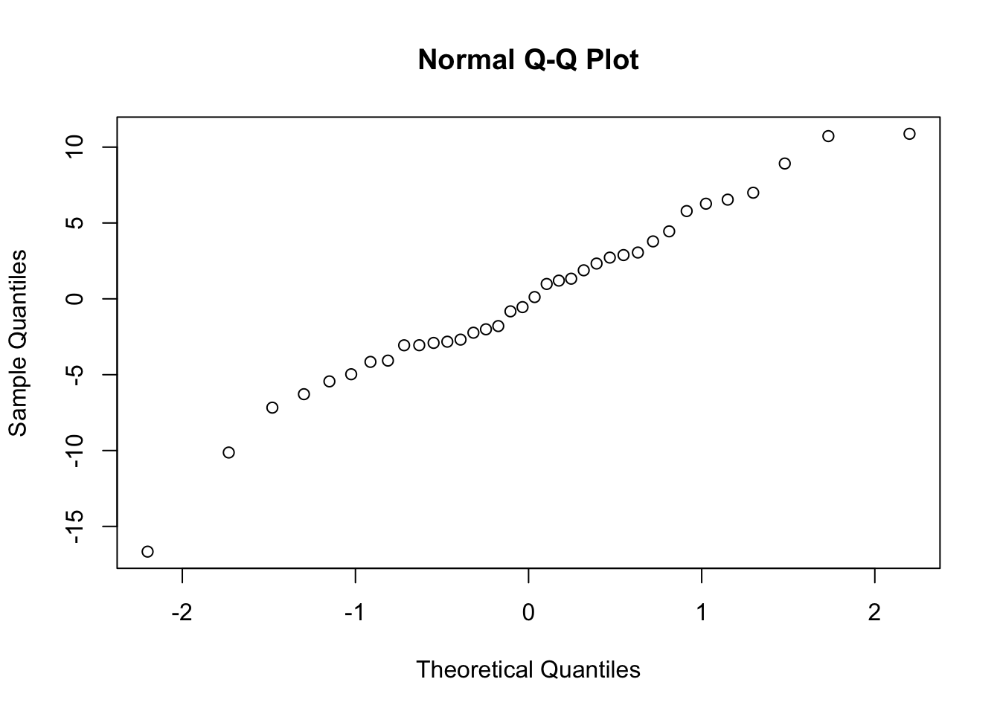
Pretty o.k.
Check outliers of random terms
intercepts <- coef(fit)$patient[,1]
boxplot(intercepts)Seems ok
Check distribution of residuals within patients
bpco %>%
mutate(residual = resid(fit)) %>%
ggplot(aes(y = residual, x = patient, group = patient)) +
geom_boxplot()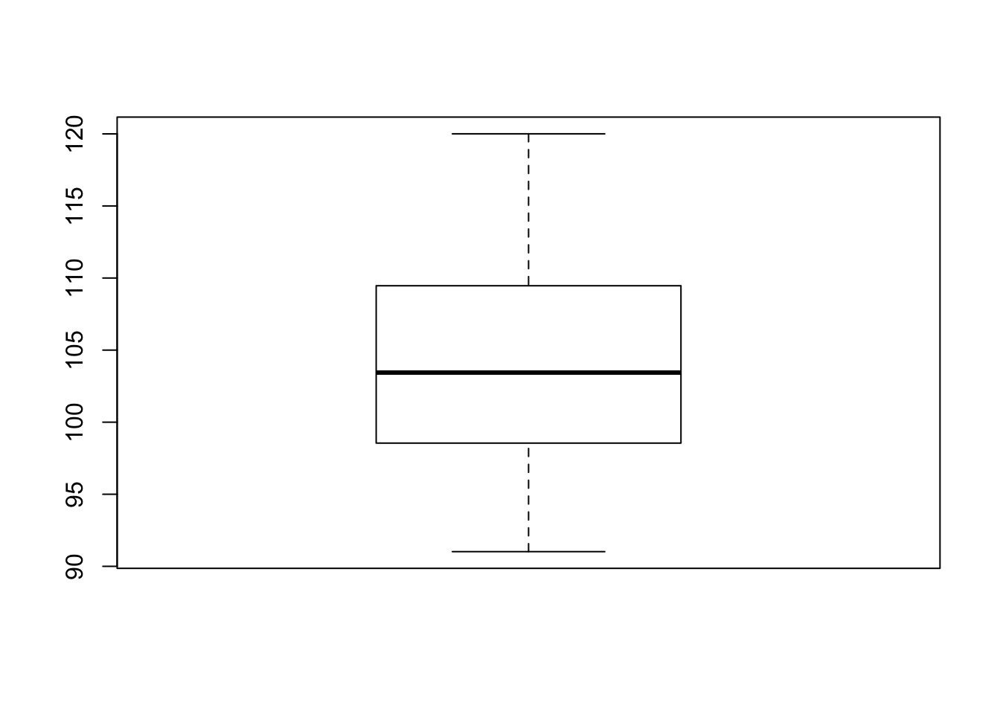
Patient 11 seems to have quite extreme residuals
There is no linear effect of time assumed in the model, so it does not make sense to check for this assumption.
b.
Use this dataset to answer the questions: is there a significant difference between the two drugs, and is there a significant period effect? Begin with the full model from part (a), and reduce the model (if possible) by removing the least significant explanatory variable(s). Use the likelihood ratio test (and maximum likelihood estimation) to test.
drop1(fit, test = "Chisq")Single term deletions
Model:
y ~ drug + period + (1 | patient)
Df AIC LRT Pr(Chi)
<none> 280.68
drug 1 289.18 10.505 0.00119 **
period 1 278.93 0.254 0.61429
---
Signif. codes: 0 '***' 0.001 '**' 0.01 '*' 0.05 '.' 0.1 ' ' 1Period can be left out
fit <- update(fit, y ~ drug + (1 | patient))
drop1(fit, test = "Chisq")Single term deletions
Model:
y ~ drug + (1 | patient)
Df AIC LRT Pr(Chi)
<none> 278.93
drug 1 287.24 10.307 0.001325 **
---
Signif. codes: 0 '***' 0.001 '**' 0.01 '*' 0.05 '.' 0.1 ' ' 1We cannot remove ‘drug’ from the model without hurting model fit, it needs to stay in.
There is a significant effect of the drug on the outcome, according to the LRT
6.
On day 1 and in the morning session we looked at a multi-center, randomized, double-blind clinical trial to compare three treatments for hypertension (on Monday we only looked at 2). One treatment was a new drug (A = Carvedilol) and the other two were standard drugs for controlling hypertension (B = Nifedipine, C = Atenolol). Twenty-nine centers participated in the trial and patients were randomized in order of entry. One pre-randomization and four post-treatment visits (at weeks 3, 5, 7 and 9) were made. We would like to see if there is a difference among the three treatments. The data can be found in the file bp.csv. Read the data into R or SPSS. The research question is which of the medicines (treat) is more effective in reducing DBP. Since baseline (pre-randomization) DBP (dbp) will likely be associated with post-treatment DBP, we wish to include it here as a covariate.
Read in data and curate
bp <- read.csv(here("data", "bp.csv"))
factor_vars <- c("patient", "center", "treat")
bp %<>% mutate_at(vars(factor_vars), funs(as.factor))
str(bp)'data.frame': 1092 obs. of 6 variables:
$ patient: Factor w/ 288 levels "1","2","3","4",..: 1 1 1 1 2 3 3 3 3 4 ...
$ visit : num 3 5 7 9 3 3 5 7 9 3 ...
$ center : Factor w/ 29 levels "1","2","3","4",..: 21 21 21 21 21 5 5 5 5 5 ...
$ treat : Factor w/ 3 levels "A ","B ","C ": 3 3 3 3 3 2 2 2 2 1 ...
$ dbp : num 101 88 89 86 72 121 109 111 109 88 ...
$ dbp1 : int 97 97 97 97 109 117 117 117 117 100 ...nna(bp)patient visit center treat dbp dbp1
0 0 0 0 0 0 We seem to have 288 unique patients (not 29), but we have the 3 treatments and the dbp outcomes, so probably this is the dataset we need
No missing values, which is nice
a.
First fit a two-level model, examining the effects of treatment, time and their interaction, while adjusting only for multiple measurements per person by including a random intercept and random slope per patient. Use ML estimation.
Since visit is measured in weeks, we can model is as continous
fit1 <- lme(fixed = dbp ~ treat*visit,
random = ~ visit | patient,
data = bp, method = "ML")
summary(fit1)Linear mixed-effects model fit by maximum likelihood
Data: bp
AIC BIC logLik
7530.258 7580.215 -3755.129
Random effects:
Formula: ~visit | patient
Structure: General positive-definite, Log-Cholesky parametrization
StdDev Corr
(Intercept) 7.907548 (Intr)
visit 0.693940 -0.516
Residual 5.746647
Fixed effects: dbp ~ treat * visit
Value Std.Error DF t-value p-value
(Intercept) 96.37245 1.1654615 801 82.69037 0.0000
treatB -1.89625 1.6710617 285 -1.13476 0.2574
treatC -3.21670 1.6597129 285 -1.93811 0.0536
visit -0.58440 0.1563155 801 -3.73862 0.0002
treatB :visit 0.04913 0.2214847 801 0.22181 0.8245
treatC :visit 0.03827 0.2185382 801 0.17511 0.8610
Correlation:
(Intr) treatB treatC visit trtB:v
treatB -0.697
treatC -0.702 0.490
visit -0.765 0.534 0.537
treatB :visit 0.540 -0.765 -0.379 -0.706
treatC :visit 0.547 -0.382 -0.765 -0.715 0.505
Standardized Within-Group Residuals:
Min Q1 Med Q3 Max
-3.92383934 -0.51816497 -0.02925895 0.48239711 3.61862205
Number of Observations: 1092
Number of Groups: 288 b.
Now fit a three-level model, examining the effects of treatment, time and their interaction, including a random intercept and random slope per patient and a random intercept per center. Use ML estimation. Note: R users will perhaps find it easier to switch the the lmer function in the lme4 package, allowing one to add random effects per level using + (effect|level) to the equation. SPSS users will need to use the syntax for this. Paste the syntax from part (a) and add an extra RANDOM statement: /RANDOM=INTERCEPT | SUBJECT(center) COVTYPE(ID) Both: if you get stuck, see the code on Moodle.
fit2 <- lmer(dbp ~ treat * visit + (visit | patient) + (1 | center),
data = bp, REML = F)
summary(fit2)Linear mixed model fit by maximum likelihood ['lmerMod']
Formula: dbp ~ treat * visit + (visit | patient) + (1 | center)
Data: bp
AIC BIC logLik deviance df.resid
7519.5 7574.5 -3748.8 7497.5 1081
Scaled residuals:
Min 1Q Median 3Q Max
-3.9040 -0.5142 -0.0292 0.4934 3.6637
Random effects:
Groups Name Variance Std.Dev. Corr
patient (Intercept) 60.788 7.797
visit 0.483 0.695 -0.59
center (Intercept) 6.143 2.478
Residual 33.046 5.749
Number of obs: 1092, groups: patient, 288; center, 29
Fixed effects:
Estimate Std. Error t value
(Intercept) 97.12224 1.27262 76.32
treatB -1.92854 1.65796 -1.16
treatC -3.23024 1.64675 -1.96
visit -0.58027 0.15568 -3.73
treatB :visit 0.04920 0.22069 0.22
treatC :visit 0.03707 0.21782 0.17
Correlation of Fixed Effects:
(Intr) treatB treatC visit trtB:v
treatB -0.630
treatC -0.640 0.489
visit -0.715 0.551 0.555
treatB:vist 0.505 -0.790 -0.391 -0.705
treatC:vist 0.512 -0.394 -0.791 -0.715 0.504c.
Compare the two models using the likelihood ratio test. Is the random intercept per center significant? Should you base your decision to include the intercept on this outcome?
Switch fit1 to lmer too to make the anova function work
fit1 <- lmer(dbp ~ treat*visit + (visit | patient),
data = bp, REML = F)
anova(fit1, fit2)Data: bp
Models:
fit1: dbp ~ treat * visit + (visit | patient)
fit2: dbp ~ treat * visit + (visit | patient) + (1 | center)
Df AIC BIC logLik deviance Chisq Chi Df Pr(>Chisq)
fit1 10 7530.3 7580.2 -3755.1 7510.3
fit2 11 7519.5 7574.5 -3748.8 7497.5 12.737 1 0.0003585 ***
---
Signif. codes: 0 '***' 0.001 '**' 0.01 '*' 0.05 '.' 0.1 ' ' 1Dropping the intercept per center would decrease the model fit significantly.
This is an argument to keep it in. However you can also argue to just keep it in based on the design of the study
d.
Try to reduce the fixed part of the model: is the interaction significant? Is there a treatment effect? Is there a time effect?
Let’s continue with fit2
drop1(fit2, test = "Chisq")Single term deletions
Model:
dbp ~ treat * visit + (visit | patient) + (1 | center)
Df AIC LRT Pr(Chi)
<none> 7519.5
treat:visit 2 7515.6 0.054107 0.9733We can drop the interaction
fit2 <- update(fit2, dbp ~ treat + visit + (visit | patient) + (1 | center))
drop1(fit2, test = "Chisq")Single term deletions
Model:
dbp ~ treat + visit + (visit | patient) + (1 | center)
Df AIC LRT Pr(Chi)
<none> 7515.6
treat 2 7520.4 8.799 0.01228 *
visit 1 7548.9 35.341 2.767e-09 ***
---
Signif. codes: 0 '***' 0.001 '**' 0.01 '*' 0.05 '.' 0.1 ' ' 1We should keep in treat.
So there is a difference in treatments, and a time-effect
e.
Run the final model once more using REML estimation. See if you can get some post-hoc tests of treatments (hint: EMMEANS statement in SPSS. In R, the package lmerTest contains the useful functions lsmeans() and difflsmeans(). If you get stuck, you can look at the R script provided on Moodle).
fit2_reml <- update(fit2, REML = T)
summary(fit2_reml)Linear mixed model fit by REML ['lmerMod']
Formula: dbp ~ treat + visit + (visit | patient) + (1 | center)
Data: bp
REML criterion at convergence: 7496
Scaled residuals:
Min 1Q Median 3Q Max
-3.8813 -0.5132 -0.0261 0.4891 3.6402
Random effects:
Groups Name Variance Std.Dev. Corr
patient (Intercept) 61.5456 7.8451
visit 0.4932 0.7023 -0.59
center (Intercept) 6.5707 2.5633
Residual 33.0347 5.7476
Number of obs: 1092, groups: patient, 288; center, 29
Fixed effects:
Estimate Std. Error t value
(Intercept) 96.96728 1.04203 93.06
treatB -1.63870 1.02011 -1.61
treatC -3.01376 1.01176 -2.98
visit -0.55126 0.08957 -6.15
Correlation of Fixed Effects:
(Intr) treatB treatC
treatB -0.464
treatC -0.476 0.489
visit -0.501 -0.011 -0.020require(lmerTest)
difflsmeans(fit2_reml)Differences of LSMEANS:
Estimate Standard Error DF t-value Lower CI Upper CI
treat A - B 1.6 1.02 264.1 1.61 -0.370 3.65
treat A - C 3.0 1.01 262.6 2.98 1.022 5.01
treat B - C 1.4 1.03 259.9 1.34 -0.648 3.40
p-value
treat A - B 0.109
treat A - C 0.003 **
treat B - C 0.182
---
Signif. codes: 0 '***' 0.001 '**' 0.01 '*' 0.05 '.' 0.1 ' ' 1f.
Interpret the results.
Using the post-hoc test, there is a significant difference between treatments A and C, but not between the other treatments
7.
Centering the explanatory variables is a major topic in mixed models. (See for example the evaluation review of Omar Paccagnella “Centering or Not Centering in Multilevel Models? The Role of the Group Mean and the Assessment of Group Effects”.) In this exercise we will demonstrate the consequences of centering. Consider again the longitudinal data example of the paper by John Fox (see exercise 3 of Day 2), stored in blackmoor.csv or available as Blackmore in the car package.
data("Blackmore")
str(Blackmore)'data.frame': 945 obs. of 4 variables:
$ subject : Factor w/ 231 levels "100","101","102",..: 1 1 1 1 1 2 2 2 2 2 ...
$ age : num 8 10 12 14 15.9 ...
$ exercise: num 2.71 1.94 2.36 1.54 8.63 0.14 0.14 0 0 5.08 ...
$ group : Factor w/ 2 levels "control","patient": 2 2 2 2 2 2 2 2 2 2 ...bm <- Blackmore
nna(bm) subject age exercise group
0 0 0 0 This one is nicely curated. Factor variables are coded as such, and the data is nice and long. No missings
a.
Fit a model with random intercept, random age effect, fixed group and a fixed interaction between age and group. Don’t forget the transformation of the outcome! Make a table of the most important parameter estimates.
bm %<>% mutate(log_exercise = log2(exercise + 5/60))
fit1 <- lme(fixed = log_exercise ~ group*age,
random = ~ age | subject,
data = bm, method = "ML", na.action = "na.omit")
fit1 %>% summary()Linear mixed-effects model fit by maximum likelihood
Data: bm
AIC BIC logLik
3615.31 3654.12 -1799.655
Random effects:
Formula: ~age | subject
Structure: General positive-definite, Log-Cholesky parametrization
StdDev Corr
(Intercept) 2.187747 (Intr)
age 0.162618 -0.777
Residual 1.244083
Fixed effects: log_exercise ~ group * age
Value Std.Error DF t-value p-value
(Intercept) -0.7890932 0.3746122 712 -2.106427 0.0355
grouppatient -2.2708519 0.4756862 229 -4.773844 0.0000
age 0.0641167 0.0312861 712 2.049367 0.0408
grouppatient:age 0.2396503 0.0393076 712 6.096797 0.0000
Correlation:
(Intr) grpptn age
grouppatient -0.788
age -0.906 0.713
grouppatient:age 0.721 -0.903 -0.796
Standardized Within-Group Residuals:
Min Q1 Med Q3 Max
-2.7391755 -0.4321269 0.1230949 0.5309236 2.6410290
Number of Observations: 945
Number of Groups: 231 We can print the random effects, but to get them as a numeric vector is pretty hard (they are ‘well’ hidden in the fit-object).
Inspecting the code of nlme:::print.lme should brings us to the answer but takes too long for now
We try to get them ourselves but it doesn’t help
(var(coef(fit1)[, c(1,3)])) (Intercept) age
(Intercept) 2.2671569 -0.078402900
age -0.0784029 0.008598472This is actually a little troubling
We can get the fixed coefficients and the sigma easily
fit1$coefficients$fixed (Intercept) grouppatient age grouppatient:age
-0.78909317 -2.27085186 0.06411674 0.23965033 fit1$sigma[1] 1.244083b.
Repeat the analysis but first transform the age to age-8. Extend the table of (a) with the new estimates.
bm_shift <- mutate(bm, age = age - 8)
fit2 <- update(fit1, data = bm_shift)There is a handy function for the fixed part:
compareCoefs(fit1, fit2)
Call:
1: lme.formula(fixed = log_exercise ~ group * age, data = bm, random =
~age | subject, method = "ML", na.action = "na.omit")
2: lme.formula(fixed = log_exercise ~ group * age, data = bm_shift,
random = ~age | subject, method = "ML", na.action = "na.omit")
Est. 1 SE 1 Est. 2 SE 2
(Intercept) -0.7891 0.3738 -0.2762 0.1816
grouppatient -2.2709 0.4747 -0.3536 0.2343
age 0.0641 0.0312 0.0641 0.0312
grouppatient:age 0.2397 0.0392 0.2397 0.0392Intercept changes, which makes sense, not the linear effect of age, nor the interaction. Grouppatient also changes
c.
Repeat the analysis again but now transform the age to the deviation from the mean age (i.e. centering to the mean). Extend again the table with the new estimates (R users should recall the compareCoefs() function from yesterday).
bm_center <- mutate(bm, age = age - mean(age))
fit3 <- update(fit1, data = bm_center)
compareCoefs(fit1, fit2, fit3)
Call:
1: lme.formula(fixed = log_exercise ~ group * age, data = bm, random =
~age | subject, method = "ML", na.action = "na.omit")
2: lme.formula(fixed = log_exercise ~ group * age, data = bm_shift,
random = ~age | subject, method = "ML", na.action = "na.omit")
3: lme.formula(fixed = log_exercise ~ group * age, data = bm_center,
random = ~age | subject, method = "ML", na.action = "na.omit")
Est. 1 SE 1 Est. 2 SE 2 Est. 3 SE 3
(Intercept) -0.7891 0.3738 -0.2762 0.1816 -0.0555 0.1594
grouppatient -2.2709 0.4747 -0.3536 0.2343 0.4711 0.2053
age 0.0641 0.0312 0.0641 0.0312 0.0641 0.0312
grouppatient:age 0.2397 0.0392 0.2397 0.0392 0.2397 0.0392Again the intercept and group effects change, but not the slopes
d.
Compare the results of these three models and explain the differences and similarities (Hint. Use something like figure 9 of the Fox & Weisberg paper).
Left for now
e.
Which model would you prefer? Explain your choice.
Skipped for now
8. (CHALLENGE EXERCISE)
Kroesbergen et al. (Eur Respir J 1999) investigated the flow-dependency of exhaled nitric oxide (NO) in healthy children (n=20) and children with asthma (n=19). The concentration of NO in exhaled are was measured four times, at four different target values of the flow of exhalation (2, 5, 10, and 20% of their vital capacity per second). The actual flows differed from the target flows. The following questions are addressed: is there is an association between NO (pbb) and FLOW (L/sec) for healthy and asthmatic children? Is this association different for the two groups? The variables NO and FLOW have been been log-transformed.
The dataset no.dat. contains the following variables:
NUM child’s identification number DIAGNOSE 0 = “healthy” and 1 = “asthma” FLOW 10log(flow)-10log(2)
NO 10log(NO concentration)
a.
Describe what you see in the graphs. What would be your first impression with respect to the research questions?
Seems like a clear association betheen NO and flow in both groups.
More variace in NO in asthma group, and steeper slope (more negative)
b.
In R, fit a model with random intercept random slope regression for the healthy group. What is the mean slope and intercept? What are the estimated variances of the random components? Is a random slope model necessary, or would a random intercept be sufficient?
no <- read.table(here("data", "no.dat"), header = T)
factor_vars <- c("num", "diagnose")
no %<>% mutate_at(vars(factor_vars), funs(as.factor))
str(no)'data.frame': 156 obs. of 4 variables:
$ num : Factor w/ 39 levels "1","2","3","4",..: 1 1 1 1 2 2 2 2 3 3 ...
$ diagnose: Factor w/ 2 levels "0","1": 1 1 1 1 1 1 1 1 1 1 ...
$ flow : num -0.222 0.176 0.484 0.782 -0.699 ...
$ no : num 0.769 0.556 0.415 0.509 0.943 ...Reproducing the plot from the word-file
no %>%
ggplot(aes(x = flow, y = no, group = num)) +
geom_line() + geom_point() +
facet_grid(~diagnose) + theme_minimal()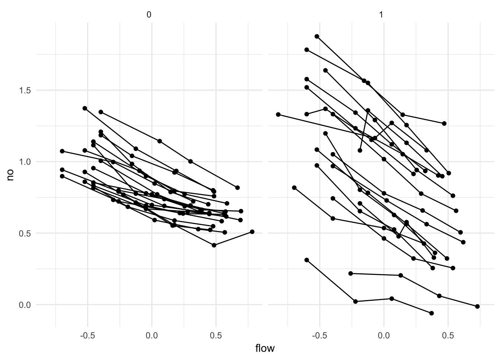
fit1 <- lme(fixed = no ~ flow,
random = ~ flow | num,
data = filter(no, diagnose == "0"),
method = "ML")
summary(fit1)Linear mixed-effects model fit by maximum likelihood
Data: filter(no, diagnose == "0")
AIC BIC logLik
-162.0047 -147.7125 87.00234
Random effects:
Formula: ~flow | num
Structure: General positive-definite, Log-Cholesky parametrization
StdDev Corr
(Intercept) 0.1372792 (Intr)
flow 0.1018528 -0.839
Residual 0.0496389
Fixed effects: no ~ flow
Value Std.Error DF t-value p-value
(Intercept) 0.8108212 0.03162558 59 25.63815 0
flow -0.3452360 0.02754635 59 -12.53291 0
Correlation:
(Intr)
flow -0.707
Standardized Within-Group Residuals:
Min Q1 Med Q3 Max
-2.15285664 -0.58959632 -0.03373757 0.48607120 2.46376179
Number of Observations: 80
Number of Groups: 20 See random effects for the SD’s of the effects
fit2 <- update(fit1, random = ~ 1 | num)
anova(fit1, fit2) Model df AIC BIC logLik Test L.Ratio p-value
fit1 1 6 -162.0047 -147.7125 87.00234
fit2 2 4 -143.5307 -134.0026 75.76534 1 vs 2 22.47401 <.0001The AIC is negative here which is a little unusual, but the lower AIC (more negative) from fit1 indicates fit1 is better
c.
Answer the same questions for the group of children with asthma.
fit1_a <- update(fit1, data = filter(no, diagnose == "1"))
fit2_a <- update(fit1_a, random = ~ 1 | num)
anova(fit1_a, fit2_a) Model df AIC BIC logLik Test L.Ratio p-value
fit1_a 1 6 -64.18880 -50.20440 38.09440
fit2_a 2 4 -46.52904 -37.20611 27.26452 1 vs 2 21.65976 <.0001Again the model with random slope is better
d.
Compare the results of the two groups. What would you conclude on the basis of these results?
summary(fit1)Linear mixed-effects model fit by maximum likelihood
Data: filter(no, diagnose == "0")
AIC BIC logLik
-162.0047 -147.7125 87.00234
Random effects:
Formula: ~flow | num
Structure: General positive-definite, Log-Cholesky parametrization
StdDev Corr
(Intercept) 0.1372792 (Intr)
flow 0.1018528 -0.839
Residual 0.0496389
Fixed effects: no ~ flow
Value Std.Error DF t-value p-value
(Intercept) 0.8108212 0.03162558 59 25.63815 0
flow -0.3452360 0.02754635 59 -12.53291 0
Correlation:
(Intr)
flow -0.707
Standardized Within-Group Residuals:
Min Q1 Med Q3 Max
-2.15285664 -0.58959632 -0.03373757 0.48607120 2.46376179
Number of Observations: 80
Number of Groups: 20 summary(fit1_a)Linear mixed-effects model fit by maximum likelihood
Data: filter(no, diagnose == "1")
AIC BIC logLik
-64.1888 -50.2044 38.0944
Random effects:
Formula: ~flow | num
Structure: General positive-definite, Log-Cholesky parametrization
StdDev Corr
(Intercept) 0.38293951 (Intr)
flow 0.18164821 -0.393
Residual 0.06682339
Fixed effects: no ~ flow
Value Std.Error DF t-value p-value
(Intercept) 0.8517394 0.08940237 56 9.527034 0
flow -0.5848256 0.04793471 56 -12.200462 0
Correlation:
(Intr)
flow -0.346
Standardized Within-Group Residuals:
Min Q1 Med Q3 Max
-2.61299643 -0.53347738 0.04039453 0.38132723 2.06154236
Number of Observations: 76
Number of Groups: 19 With regards to the random part: there is greater variation in slopes and intercepts for the asthmatic group, which is in accordance with the plot
compareCoefs(fit1, fit1_a)
Call:
1: lme.formula(fixed = no ~ flow, data = filter(no, diagnose == "0"),
random = ~flow | num, method = "ML")
2: lme.formula(fixed = no ~ flow, data = filter(no, diagnose == "1"),
random = ~flow | num, method = "ML")
Est. 1 SE 1 Est. 2 SE 2
(Intercept) 0.8108 0.0312 0.8517 0.0882
flow -0.3452 0.0272 -0.5848 0.0473For the fixed parts, the intercept is a little higher in the asthmatic group, and their slopes are more negative
e.
Fit a model for the two groups combined, using an interaction for diagnosisflow and allowing a different covariance structure for the two groups (note: as far as we know, this cannot be done in SPSS; in R, use the following command:) no.lme.3 <- lme(no~flow + factor(diagnose)+ flow:factor(diagnose), random=~flow + diagnose + flowdiagnose| num, weights=varIdent(form=~1|diagnose), method=“ML”, data=nodat)
fit3 <- lme(fixed = no ~ flow * diagnose,
random = ~ flow * diagnose | num,
weights = varIdent(form = ~1|diagnose),
method = "ML", data = no)
summary(fit3)Linear mixed-effects model fit by maximum likelihood
Data: no
AIC BIC logLik
-218.1935 -169.3958 125.0967
Random effects:
Formula: ~flow * diagnose | num
Structure: General positive-definite, Log-Cholesky parametrization
StdDev Corr
(Intercept) 0.13727910 (Intr) flow digns1
flow 0.10185272 -0.839
diagnose1 0.26189009 0.823 -0.680
flow:diagnose1 0.17568175 -0.014 -0.230 0.062
Residual 0.04963893
Variance function:
Structure: Different standard deviations per stratum
Formula: ~1 | diagnose
Parameter estimates:
0 1
1.000000 1.346191
Fixed effects: no ~ flow * diagnose
Value Std.Error DF t-value p-value
(Intercept) 0.8108212 0.03163596 115 25.629735 0.0000
flow -0.3452360 0.02755540 115 -12.528798 0.0000
diagnose1 0.0409182 0.09480556 37 0.431601 0.6685
flow:diagnose1 -0.2395895 0.05527596 115 -4.334425 0.0000
Correlation:
(Intr) flow digns1
flow -0.707
diagnose1 -0.334 0.236
flow:diagnose1 0.353 -0.499 -0.400
Standardized Within-Group Residuals:
Min Q1 Med Q3 Max
-2.612996113 -0.565060550 0.009625799 0.435834542 2.463760385
Number of Observations: 156
Number of Groups: 39 The random command contains a term for group, flow and the group*flow interaction and thus allows for a separate variance for the random intercept and slope for the two diagnosis groups. The weights statement further allows differing residual variances for the two groups. Check that the log-likelihood of this model is the sum of the log-likelihoods of the models in b and c.
logLik(fit1) + logLik(fit1_a)'log Lik.' 125.0967 (df=6)logLik(fit3)'log Lik.' 125.0967 (df=16)It’s the same, awesome
f.
Can the variance structure be simplified by assuming equal residual variances? (Hint: try removing the weights statement.)
anova(fit3, update(fit3, weights = NULL)) Model df AIC BIC logLik Test
fit3 1 16 -218.1935 -169.3958 125.0967
update(fit3, weights = NULL) 2 15 -216.8824 -171.1346 123.4412 1 vs 2
L.Ratio p-value
fit3
update(fit3, weights = NULL) 3.311073 0.0688Yes, the difference is not statistically significant
g.
Can the covariance structure be further reduced? Try to simplify the random command by removing the diagnose*flow interaction, and then by removing diagnose.
fit <- update(fit3, weights = NULL)
anova(fit, update(fit, random = ~diagnose + flow | num)) Model df AIC BIC
fit 1 15 -216.8824 -171.1346
update(fit, random = ~diagnose + flow | num) 2 11 -219.8507 -186.3022
logLik Test L.Ratio
fit 123.4412
update(fit, random = ~diagnose + flow | num) 120.9253 1 vs 2 5.03175
p-value
fit
update(fit, random = ~diagnose + flow | num) 0.2841No significant decrease, so throw out interaction
fit <- update(fit, random = ~ diagnose + flow | num)
anova(fit, update(fit, random = ~ flow | num)) Model df AIC BIC logLik
fit 1 11 -219.8507 -186.3022 120.9253
update(fit, random = ~flow | num) 2 8 -199.5570 -175.1582 107.7785
Test L.Ratio p-value
fit
update(fit, random = ~flow | num) 1 vs 2 26.29366 <.0001We cannot drop the diagnosis random slope, so let’s keep this one in
h.
Is the fixed diagnose*flow interaction necessary? In other words: do the asthmatic children indeed have a significantly more negative slope than the healthy children?
drop1(fit, test = "Chisq")Single term deletions
Model:
no ~ flow * diagnose
Df AIC LRT Pr(>Chi)
<none> -219.85
flow:diagnose 1 -205.69 16.155 5.835e-05 ***
---
Signif. codes: 0 '***' 0.001 '**' 0.01 '*' 0.05 '.' 0.1 ' ' 1Yes, there is a significantly different slope on a group level.
i.
Answer the following questions for the model you end up with. What is the slope for the healthy group, what for the asthma group? What is the standard deviation of the random intercept the healthy children, and is the variance for asthmatic children larger or smaller? What is the residual standard deviation for the two groups?
summary(fit)Linear mixed-effects model fit by maximum likelihood
Data: no
AIC BIC logLik
-219.8507 -186.3022 120.9253
Random effects:
Formula: ~diagnose + flow | num
Structure: General positive-definite, Log-Cholesky parametrization
StdDev Corr
(Intercept) 0.16457756 (Intr) digns1
diagnose1 0.33224111 0.031
flow 0.14566924 -0.912 0.074
Residual 0.05859566
Fixed effects: no ~ flow * diagnose
Value Std.Error DF t-value p-value
(Intercept) 0.8106943 0.03790725 115 21.386262 0.0000
flow -0.3453098 0.03747611 115 -9.214131 0.0000
diagnose1 0.0411343 0.09537103 37 0.431308 0.6687
flow:diagnose1 -0.2393473 0.05426221 115 -4.410938 0.0000
Correlation:
(Intr) flow digns1
flow -0.804
diagnose1 -0.397 0.320
flow:diagnose1 0.555 -0.691 -0.412
Standardized Within-Group Residuals:
Min Q1 Med Q3 Max
-2.989428022 -0.499267230 0.005727409 0.506361087 2.340777877
Number of Observations: 156
Number of Groups: 39 slope healthy = -0.345 slope asthma = -0.345 - 0.239 = (-0.584)
sd of random intercept healthy: 0.165
From the summary of the separate fit for asthmatic children, we see that the variance in intercept is higher.
I don’t know how to properly combine the numbers from the random effects here. I’m inclined to add the sd of ‘diagnose1’ to the intercept, but the numbers don’t add up.
Residual sd = 0.058
Session information
sessionInfo()R version 3.4.3 (2017-11-30)
Platform: x86_64-apple-darwin15.6.0 (64-bit)
Running under: macOS Sierra 10.12.6
Matrix products: default
BLAS: /Library/Frameworks/R.framework/Versions/3.4/Resources/lib/libRblas.0.dylib
LAPACK: /Library/Frameworks/R.framework/Versions/3.4/Resources/lib/libRlapack.dylib
locale:
[1] en_US.UTF-8/en_US.UTF-8/en_US.UTF-8/C/en_US.UTF-8/en_US.UTF-8
attached base packages:
[1] stats graphics grDevices utils datasets methods base
other attached packages:
[1] lmerTest_2.0-36 car_2.1-6 nlme_3.1-131
[4] lme4_1.1-15 Matrix_1.2-12 tidyr_0.8.0
[7] bindrcpp_0.2 broom_0.4.3 epistats_0.1.0
[10] ggplot2_2.2.1 here_0.1 purrr_0.2.4
[13] magrittr_1.5 data.table_1.10.4-3 dplyr_0.7.4
loaded via a namespace (and not attached):
[1] Rcpp_0.12.15 lattice_0.20-35 assertthat_0.2.0
[4] rprojroot_1.3-2 digest_0.6.15 psych_1.7.8
[7] utf8_1.1.3 R6_2.2.2 plyr_1.8.4
[10] backports_1.1.2 acepack_1.4.1 MatrixModels_0.4-1
[13] evaluate_0.10.1 pillar_1.1.0 rlang_0.1.6
[16] lazyeval_0.2.1 rstudioapi_0.7 minqa_1.2.4
[19] SparseM_1.77 nloptr_1.0.4 rpart_4.1-12
[22] checkmate_1.8.5 rmarkdown_1.8 labeling_0.3
[25] splines_3.4.3 readr_1.1.1 stringr_1.2.0
[28] foreign_0.8-69 htmlwidgets_1.0 munsell_0.4.3
[31] compiler_3.4.3 pkgconfig_2.0.1 base64enc_0.1-3
[34] mnormt_1.5-5 mgcv_1.8-23 htmltools_0.3.6
[37] nnet_7.3-12 tidyselect_0.2.3 htmlTable_1.11.2
[40] gridExtra_2.3 tibble_1.4.2 Hmisc_4.1-1
[43] crayon_1.3.4 MASS_7.3-48 grid_3.4.3
[46] gtable_0.2.0 git2r_0.21.0 scales_0.5.0
[49] cli_1.0.0 stringi_1.1.6 reshape2_1.4.3
[52] latticeExtra_0.6-28 Formula_1.2-2 RColorBrewer_1.1-2
[55] tools_3.4.3 forcats_0.2.0 glue_1.2.0
[58] hms_0.4.1 parallel_3.4.3 pbkrtest_0.4-7
[61] survival_2.41-3 yaml_2.1.16 colorspace_1.3-2
[64] cluster_2.0.6 knitr_1.19 bindr_0.1
[67] haven_1.1.1 quantreg_5.35 This R Markdown site was created with workflowr